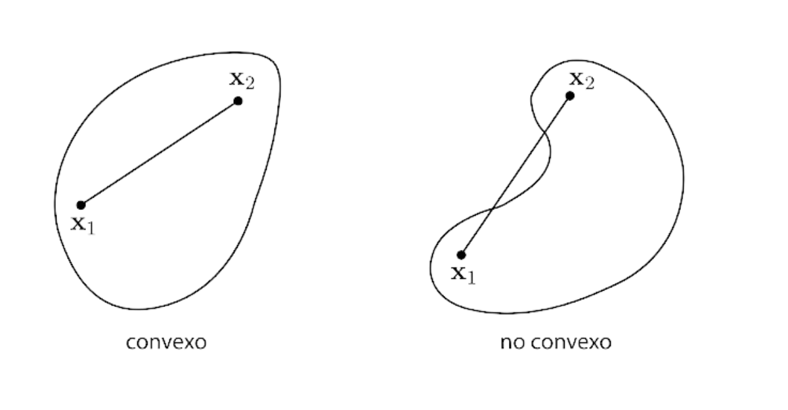
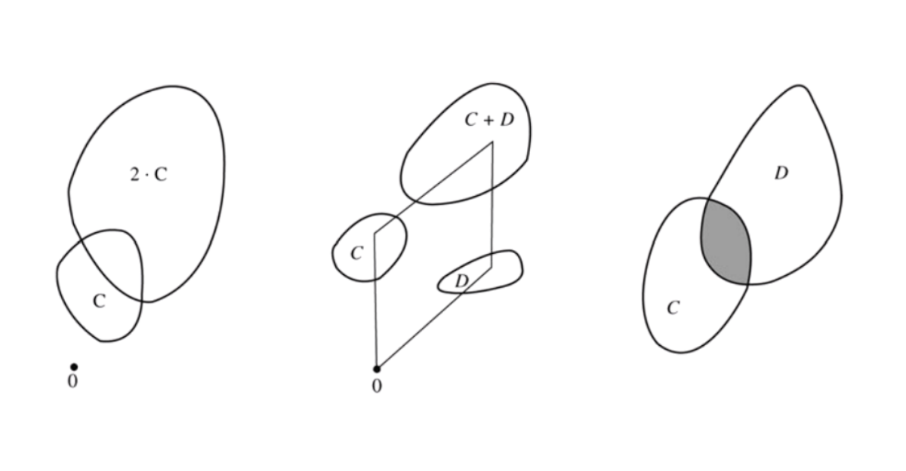
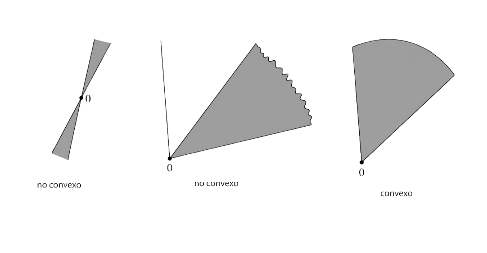
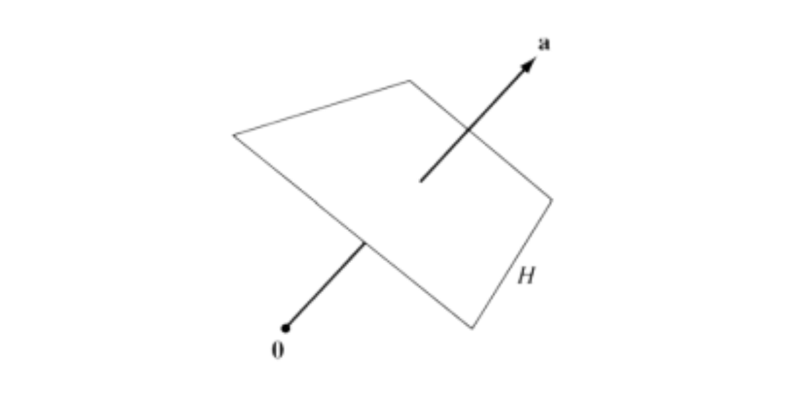
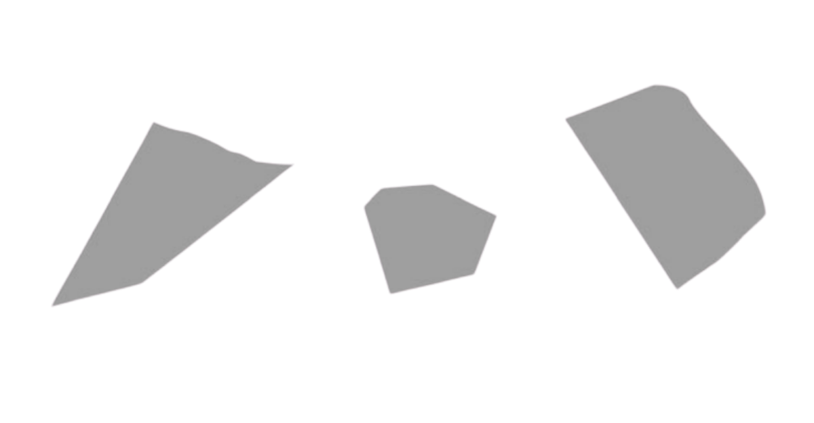

Optimización
Bienvenido al Libro de Texto Digital Interactivo de Optimización. Esta plataforma formativa ha sido concebida como una obra viva y modular de referencia analítica y numérica rigurosa para los alumnos de la ESFM. El libro abarca el estudio formal de los métodos lineales, no lineales y convexos, combinando la fundamentación matemática estricta con visualizadores interactivos en tiempo real y código computacional verificable.
La unidad de aprendizaje Optimización contribuye al perfil de egreso de la Licenciatura en
Matemática Algorítmica proporcionando bases teóricas y prácticas para el desarrollo de los algoritmos de
optimización que se aplican en la solución de problemas actuales. Asimismo, fomenta las habilidades de
resolución de problemas, pensamiento crítico, trabajo colaborativo y la capacidad para aplicar los
conocimientos con compromiso ético.
Eje Curricular: Tiene como antecedentes Álgebra Lineal Avanzada y Cálculo
Multivariable, y como consecuentes Aprendizaje Máquina Estadístico, Teoría del
Control y Negociación de Activos Financieros.
Resuelve problemas de optimización a partir de técnicas algorítmicas para problemas lineales y no lineales.
👨🏫 Cuerpo Docente & Asesoría Académica
Acompañamiento teórico, algorítmico y de programación para los estudiantes del curso:
Unidad 1: Herramientas para la Optimización
Fundamentación analítica, topológica y geométrica rigurosa basada en los Apéndices A, B, C y Capítulo 1 de David G. Luenberger & Yinyu Ye, Linear and Nonlinear Programming (4ta Edición, Springer 2016).
1.1 Revisión de Álgebra Lineal Luenberger Apéndices A y C
Esta sección cubre la totalidad de los fundamentos del Apéndice A (Revisión Matemática) y del Apéndice C (Eliminación Gaussiana) de Luenberger, proporcionando la estructura algebraica, topológica y numérica indispensable para el diseño y análisis de algoritmos de optimización.
1.1.1 Notación Matricial Luenberger Apéndice A.1–A.2
Revisión formal de la teoría de conjuntos, operadores extremales de optimización, espacios matriciales y partición por bloques.
1. Concepto de Cotas (Superior e Inferior)
Sea $S \subset \mathbb{R}$ un subconjunto no vacío de números reales:
2. Definición Formal de Supremo ($\sup$) e Ínfimo ($\inf$)
Por el Axioma de Completitud de los números reales ($\mathbb{R}$), todo conjunto no vacío y acotado posee cotas extremales únicas:
- $\forall x \in S \implies x \le \sup(S)$ (es cota superior).
- $\forall \varepsilon > 0, \; \exists x \in S \text{ tal que } x > \sup(S) - \varepsilon$ (ningún número menor es cota superior).
- $\forall x \in S \implies x \ge \inf(S)$ (es cota inferior).
- $\forall \varepsilon > 0, \; \exists x \in S \text{ tal que } x < \inf(S) + \varepsilon$ (ningún número mayor es cota inferior).
3. Distinción Fundamental: $\sup / \inf$ frente a $\max / \min$
La diferencia clave en optimización radica en la pertenencia al conjunto:
- Máximo ($\max$) y Mínimo ($\min$): Si el supremo pertenece a $S$, entonces $\max(S) = \sup(S)$. Si el supremo no pertenece a $S$, el conjunto no tiene máximo (aunque su supremo exista perfectamente en $\mathbb{R}$).
- Ínfimo ($\inf$) y Mínimo ($\min$): Si el ínfimo pertenece a $S$, entonces $\min(S) = \inf(S)$. Si el ínfimo no pertenece a $S$, el conjunto no tiene mínimo.
- Relevancia en Optimización: Si optimizamos sobre conjuntos abiertos o regiones no acotadas, la función puede acercarse a un límite sin alcanzarlo jamás. Por esta razón, teoremas rigurosos como el Teorema 1 de Separación de Luenberger se enuncian con $\inf_{\mathbf{x} \in C} \mathbf{a}^T\mathbf{x}$ en lugar de $\min$, garantizando validez universal incluso si el conjunto $C$ no contiene a su frontera.
- Valor Mínimo (Escalar $\in \mathbb{R}$): $\min_{x \in S} f(x) = f(1) = 3$.
- Conjunto Argmin (Subconjunto de puntos $\subset S$): $\operatorname{argmin}_{x \in S} f(x) = \{1\}$.
- Valor Mínimo Global: Como $(x_1^2-1)^2 \ge 0$ y $x_2^2 \ge 0$, el menor valor alcanzable es $\min_{\mathbf{x} \in \mathbb{R}^2} f(\mathbf{x}) = 0$.
- Conjunto $\operatorname{argmin}$ (Múltiples Puntos Óptimos): El mínimo $0$ se alcanza cuando $x_1^2 = 1$ (es decir, $x_1 = \pm 1$) y $x_2 = 0$: $$\operatorname{argmin}_{\mathbf{x} \in \mathbb{R}^2} f(\mathbf{x}) = \left\{ \begin{pmatrix} 1 \\ 0 \end{pmatrix}, \; \begin{pmatrix} -1 \\ 0 \end{pmatrix} \right\}$$ Nota Pedagógica: Esto evidencia con precisión por qué el $\operatorname{argmin}$ se define matemáticamente como un conjunto de vectores y no como un número escalar.
| Conjunto $S \subset \mathbb{R}$ | Ínfimo ($\inf S$) | Mínimo ($\min S$) | Supremo ($\sup S$) | Máximo ($\max S$) | Diagnóstico de Pertenencia |
|---|---|---|---|---|---|
| Intervalo Cerrado $[2, 5]$ | $2$ | $2$ | $5$ | $5$ | Ambos extremos pertenecen al conjunto ($2 \in S, 5 \in S$). |
| Intervalo Abierto $(2, 5)$ | $2$ | No existe | $5$ | No existe | Las cotas extremales no pertenecen al conjunto ($2 \notin S, 5 \notin S$). |
| Semiabierto $[2, 5)$ | $2$ | $2$ | $5$ | No existe | El ínfimo sí pertenece ($2 \in S$), pero el supremo no ($5 \notin S$). |
| Sucesión $\{1 - \frac{1}{n} : n \in \mathbb{N}\}$ | $0$ | $0$ (con $n=1$) | $1$ | No existe | $S = \{0, \frac{1}{2}, \frac{2}{3}, \frac{3}{4}, \dots\}$. Se acerca a $1$ tanto como se desee, pero $1 \notin S$. |
| Semirrecta $(0, \infty)$ | $0$ | No existe | $+\infty$ | No existe | Acotado inferiormente ($\inf=0$), pero no acotado superiormente ($\sup=+\infty$). |
Una matriz es un arreglo rectangular de números, llamados elementos. La matriz misma se denota mediante una letra mayúscula en negrita $\mathbf{A}$. Cuando no se utilizan números específicos, los elementos se denotan mediante letras minúsculas en cursiva con un doble subíndice $a_{ij}$, donde el primer índice $i$ designa la fila y el segundo índice $j$ designa la columna:
Convención de Vectores Fila y Columna: Espacios $E_n$ frente a $E^n$ (Luenberger p. 495)
Las matrices de una sola fila se denominan vectores fila; las matrices de una sola columna se denominan vectores columna. Ambos tipos se denotan con letras minúsculas en negrita:
Partición de Matrices en Submatrices y Bloques (Luenberger p. 495)
En optimización es frecuente particionar matrices trazando líneas divisorias entre bloques:
Siguiendo este patrón, escribimos $\mathbf{A} = [\mathbf{B} \mid \mathbf{N}]$ para la partición donde $\mathbf{B}$ y $\mathbf{N}$ son submatrices contiguas. Esta notación es el pilar de la programación lineal, donde particionamos una matriz $\mathbf{A} \in \mathbb{R}^{m \times n}$ de la siguiente manera:
- $\mathbf{B}$: Submatriz cuadrada $m \times m$ formada por $m$ columnas linealmente independientes de $\mathbf{A}$ (matriz básica, no singular).
- $\mathbf{N}$: Submatriz de dimensiones $m \times (n-m)$ que contiene las columnas restantes (matriz no básica).
Si el vector $\mathbf{x}$ se descompone conformemente como $\mathbf{x} = (\mathbf{x}_B, \mathbf{x}_N)$, entonces la ecuación de restricciones $\mathbf{A}\mathbf{x} = \mathbf{b}$ se expresa como:
$$\mathbf{A}\mathbf{x} = [\mathbf{B} \mid \mathbf{N}] \begin{pmatrix} \mathbf{x}_B \\ \mathbf{x}_N \end{pmatrix} = \mathbf{B}\mathbf{x}_B + \mathbf{N}\mathbf{x}_N = \mathbf{b}$$En una solución básica, se fijan en cero las variables no básicas ($\mathbf{x}_N = \mathbf{0}$). La ecuación se reduce a $\mathbf{B}\mathbf{x}_B = \mathbf{b}$, lo que permite obtener los valores de las variables básicas mediante inversión matricial: $$\mathbf{x}_B = \mathbf{B}^{-1}\mathbf{b}$$
* Determinante: $\det(\mathbf{B}) = (2)(3) - (1)(1) = 6 - 1 = 5 \neq 0 \implies \mathbf{B}$ es no singular.
* Matriz Inversa: $\mathbf{B}^{-1} = \frac{1}{5} \begin{bmatrix} 3 & -1 \\ -1 & 2 \end{bmatrix} = \begin{bmatrix} 0.6 & -0.2 \\ -0.2 & 0.4 \end{bmatrix}$.
1.1.2 Espacios Luenberger Apéndice A.3
Estructura del espacio euclidiano $n$-dimensional $E^n$, producto interior, ortogonalidad, subespacios y operadores lineales.
Demostración Formal Completa de Luenberger (p. 497)
Sea $M \subset E^n$ un subespacio lineal y sea $M^\perp$ su complemento ortogonal: $$M^\perp = \left\{ \mathbf{y} \in E^n : \mathbf{y}^T\mathbf{x} = 0, \; \forall \mathbf{x} \in M \right\}$$
1.1.3 Valores Propios y Formas Cuadráticas Luenberger Apéndice A.4
Dada una matriz cuadrada $\mathbf{A}$ de $n \times n$, un escalar $\lambda$ y un vector no nulo $\mathbf{x} \neq \mathbf{0}$ que satisfacen la ecuación $\mathbf{A}\mathbf{x} = \lambda \mathbf{x}$ se denominan, respectivamente, valor propio (autovalor) y vector propio (autovector) de $\mathbf{A}$.
Para que $\lambda$ sea un valor propio es condición necesaria y suficiente que la matriz $(\mathbf{A} - \lambda \mathbf{I})$ sea singular, lo que conduce a la ecuación característica: $$\det(\mathbf{A} - \lambda \mathbf{I}) = 0$$ La expansión de este determinante produce un polinomio de orden $n$, el cual puede resolverse para obtener $n$ raíces complejas (posiblemente repetidas), que constituyen los autovalores de $\mathbf{A}$. A partir de aquí, asumimos que $\mathbf{A}$ es simétrica.
Mediante la transformación ortogonal $\mathbf{y} = \mathbf{Q}^T\mathbf{x} \iff \mathbf{x} = \mathbf{Q}\mathbf{y}$, la forma cuadrática se desacopla en una suma de cuadrados canónica: $$\mathbf{x}^T\mathbf{A}\mathbf{x} = \mathbf{y}^T\mathbf{Q}^T\mathbf{A}\mathbf{Q}\mathbf{y} = \mathbf{y}^T\mathbf{\Lambda}\mathbf{y} = \sum_{i=1}^n \lambda_i y_i^2$$
| Clasificación | Condición de la Forma Cuadrática | Criterio Espectral |
|---|---|---|
| Definida Positiva ($PD$) | $\mathbf{x}^T\mathbf{A}\mathbf{x} > 0, \quad \forall \mathbf{x} \neq \mathbf{0}$ | $\lambda_i > 0, \quad \forall i \in \{1,\dots,n\}$ |
| Semidefinida Positiva ($PSD$) | $\mathbf{x}^T\mathbf{A}\mathbf{x} \ge 0, \quad \forall \mathbf{x} \in E^n$ | $\lambda_i \ge 0, \quad \forall i \in \{1,\dots,n\}$ |
| Definida Negativa ($ND$) | $\mathbf{x}^T\mathbf{A}\mathbf{x} < 0, \quad \forall \mathbf{x} \neq \mathbf{0}$ | $\lambda_i < 0, \quad \forall i \in \{1,\dots,n\}$ |
| Semidefinida Negativa ($NSD$) | $\mathbf{x}^T\mathbf{A}\mathbf{x} \le 0, \quad \forall \mathbf{x} \in E^n$ | $\lambda_i \le 0, \quad \forall i \in \{1,\dots,n\}$ |
| Indefinida | Cambia de signo según el vector $\mathbf{x}$ | $\exists \lambda_j > 0$ y $\exists \lambda_k < 0$ |
1. ¿Qué es una Curva de Nivel de una Forma Cuadrática?
Sea $\mathbf{x} = (x_1, x_2)^T \in \mathbb{R}^2$ y una matriz simétrica real $\mathbf{A} = \begin{bmatrix} a_{11} & a_{12} \\ a_{12} & a_{22} \end{bmatrix}$. La forma cuadrática asociada define una superficie tridimensional $z = q(x_1, x_2)$: $$q(x_1, x_2) = \mathbf{x}^T\mathbf{A}\mathbf{x} = a_{11}x_1^2 + 2a_{12}x_1x_2 + a_{22}x_2^2$$ Una curva de nivel de valor constante $c \in \mathbb{R}$ es el conjunto de todos los puntos $(x_1, x_2)$ que satisfacen: $$\mathcal{C}_c = \left\{ (x_1, x_2) \in \mathbb{R}^2 : a_{11}x_1^2 + 2a_{12}x_1x_2 + a_{22}x_2^2 = c \right\}$$ Geométricamente, representa el corte horizontal de la superficie $z = q(x_1, x_2)$ a una altura fija $z = c$, proyectado sobre el plano cartesiano $(x_1, x_2)$.
2. Desacoplamiento por Autovectores (Rotación a los Ejes Principales)
El término cruzado $2a_{12}x_1x_2$ hace que la cónica esté inclinada/rotada respecto a los ejes originales $(x_1, x_2)$. Por el Teorema Espectral (Luenberger Apéndice A.4), existe una matriz ortogonal de rotación $\mathbf{Q} = [\mathbf{u}_1 \mid \mathbf{u}_2]$ formada por los autovectores unitarios de $\mathbf{A}$ tal que: $$\mathbf{Q}^T\mathbf{A}\mathbf{Q} = \mathbf{\Lambda} = \begin{bmatrix} \lambda_1 & 0 \\ 0 & \lambda_2 \end{bmatrix}$$ Al aplicar el cambio de variables $\mathbf{x} = \mathbf{Q}\mathbf{y}$ (donde $\mathbf{y} = (y_1, y_2)^T$ representa las coordenadas sobre los ejes de los autovectores), la ecuación se transforma exactamente en: $$\mathbf{x}^T\mathbf{A}\mathbf{x} = c \quad \iff \quad \mathbf{y}^T\mathbf{\Lambda}\mathbf{y} = c \quad \iff \quad \lambda_1 y_1^2 + \lambda_2 y_2^2 = c$$
3. Relación con la Ecuación Canónica de las Cónicas
- Semiejes de la elipse: Las longitudes son $r_1 = \sqrt{\frac{c}{\lambda_1}}$ en dirección del autovector $\mathbf{u}_1$, y $r_2 = \sqrt{\frac{c}{\lambda_2}}$ en dirección de $\mathbf{u}_2$.
- Efecto de la magnitud del autovalor: Un autovalor más grande ($\lambda_i \uparrow$) produce una curvatura más pronunciada de la superficie y, por tanto, un semieje más corto ($r_i \downarrow$).
- Interpretación en Optimización: Si $\lambda_1 = \lambda_2$, las curvas son círculos perfectos; si $\lambda_1 \gg \lambda_2$, las elipses son muy alargadas y el número de condición $\kappa(\mathbf{A}) = \frac{\lambda_1}{\lambda_2}$ es alto, provocando oscilaciones lentas en métodos de gradiente.
4. Diagnóstico Inmediato mediante Determinante y Traza
El cálculo de autovalores para una matriz $2 \times 2$ proviene del polinomio característico $\lambda^2 - \operatorname{tr}(\mathbf{A})\lambda + \det(\mathbf{A}) = 0$:
| Signo del Determinante ($\det\mathbf{A} = \lambda_1\lambda_2$) | Signo de la Traza ($\operatorname{tr}\mathbf{A} = \lambda_1+\lambda_2$) | Signos de $\lambda_1, \lambda_2$ | Geometría de las Curvas de Nivel | Tipo de Punto Crítico en el Origen |
|---|---|---|---|---|
| $\det(\mathbf{A}) > 0$ | $\operatorname{tr}(\mathbf{A}) > 0$ ($a_{11}>0$) | $\lambda_1 > 0, \; \lambda_2 > 0$ | Elipses concéntricas cerradas | Mínimo Global Estricto |
| $\det(\mathbf{A}) > 0$ | $\operatorname{tr}(\mathbf{A}) < 0$ ($a_{11}<0$) | $\lambda_1 < 0, \; \lambda_2 < 0$ | Elipses concéntricas (valores $c<0$) | Máximo Global Estricto |
| $\det(\mathbf{A}) < 0$ | Indiferente | $\lambda_1 > 0, \; \lambda_2 < 0$ | Hipérbolas cruzadas | Punto de Ensilladura (Saddle Point) |
| $\det(\mathbf{A}) = 0$ | $\operatorname{tr}(\mathbf{A}) \neq 0$ | Un autovalor es nulo ($\lambda_2=0$) | Líneas rectas paralelas | Valle de Mínimos No Únicos |
Guía de Uso: Modifica los coeficientes de $\mathbf{A} = \begin{pmatrix} a_{11}
& a_{12} \\ a_{12} & a_{22} \end{pmatrix}$. Observa cómo:
1. El término $a_{12}$ rota los ejes elípticos en la dirección de los
autovectores.
2. Si $\det(\mathbf{A}) > 0$ se forman elipses (mínimo). Si
$\det(\mathbf{A}) < 0$ se forman hipérbolas (ensilladura).
1.1.4 Conceptos Topológicos y Funciones Luenberger Apéndice A.5–A.6
Esta sección desarrolla de forma rigurosa los fundamentos de topología en el espacio euclidiano $E^n$, sucesiones, compacidad de Bolzano-Weierstrass, continuidad, el Teorema del Valor Extremo de Weierstrass, derivabilidad multivariable, matrices Jacobianas y Hessianass, aproximaciones de Taylor de orden 1 y 2, el Teorema de la Función Implícita con derivación matricial y la notación asintótica de Landau.
El espacio euclidiano $E^n$ está dotado de la métrica estándar inducida por la norma $d(\mathbf{x}, \mathbf{y}) = \|\mathbf{x} - \mathbf{y}\| = \left(\sum_{i=1}^n (x_i - y_i)^2\right)^{1/2}$.
- Abierto: $S$ es abierto si alrededor de todo punto en $S$ hay una esfera contenida en $S$. En general, carecen de fronteras definidas.
- Interior ($\mathring{S}$): Conjunto de puntos en $S$ que son centro de alguna esfera contenida en $S$. Es el mayor conjunto abierto contenido en $S$.
- Cerrado: $P$ es cerrado si todo punto arbitrariamente cercano a $P$ es miembro de $P$ (si $\mathbf{x}_k \to \mathbf{x}$ con $\mathbf{x}_k \in P \implies \mathbf{x} \in P$).
- Clausura ($\bar{P}$): Es el menor conjunto cerrado que contiene a $P$.
- Frontera: Es la parte de la clausura de un conjunto que no está en su interior.
* Compacto (Heine-Borel en $E^n$): $K \subset E^n$ es compacto si y solo si es simultáneamente cerrado y acotado.
Toda sucesión acotada $\{\mathbf{x}_k\}_{k=1}^\infty \subset E^n$ contiene al menos una subsucesión convergente. En particular, si $K \subset E^n$ es un conjunto compacto y $\{\mathbf{x}_k\} \subset K$:
$$\exists \, \text{subsucesión } \{\mathbf{x}_k\}_{k \in \mathcal{K}} \subseteq \{\mathbf{x}_k\} \quad \text{tal que} \quad \lim_{k \in \mathcal{K}} \mathbf{x}_k = \mathbf{x}^* \in K$$Relevancia en Optimización: Garantiza que las trayectorias iterativas generadas por algoritmos acotados siempre poseen al menos un punto de acumulación factible dentro del conjunto.
"Sea $f$ una función continua de valores reales sobre un subconjunto compacto $K$ de $E^n$. Entonces $f$ es acotada sobre $K$ y alcanza su valor mínimo y su valor máximo en $K$."
Si $K \subset E^n$ es compacto no vacío y $f: K \to \mathbb{R}$ es continua:
$$\exists \mathbf{x}_*, \mathbf{x}^* \in K \quad \text{tales que} \quad f(\mathbf{x}_*) \le f(\mathbf{x}) \le f(\mathbf{x}^*), \quad \forall \mathbf{x} \in K$$ $$\min_{\mathbf{x} \in K} f(\mathbf{x}) = f(\mathbf{x}_*) \quad \text{y} \quad \max_{\mathbf{x} \in K} f(\mathbf{x}) = f(\mathbf{x}^*)$$Para que las definiciones de diferenciabilidad y las expansiones de Taylor tengan coherencia matemática, es indispensable definir primero cómo se comportan los términos de error o residuales.
La notación $g(x) = o(x)$ significa que $g(x)$ tiende a cero estrictamente más rápido que $x$; o de forma equivalente, que el límite de $\left|\frac{g(x)}{x}\right|$ cuando $x \to 0$ es cero.
- $O(\|\mathbf{h}\|)$: Existe $K < \infty$ y $\delta > 0$ tal que $\|g(\mathbf{h})\| \le K \|\mathbf{h}\|$ para todo $\|\mathbf{h}\| < \delta$.
- $o(\|\mathbf{h}\|)$: El error se desvanece más rápido que la norma, es decir, $\lim_{\|\mathbf{h}\| \to 0} \frac{\|g(\mathbf{h})\|}{\|\mathbf{h}\|} = 0$.
Regla de la Cadena: Si $\mathbf{y} = \mathbf{g}(\mathbf{x})$ y $z = f(\mathbf{y}) \implies \nabla(f \circ \mathbf{g})(\mathbf{x}) = \nabla f(\mathbf{g}(\mathbf{x})) \mathbf{J}_{\mathbf{g}}(\mathbf{x})$.
Para dos puntos $\mathbf{x}_1, \mathbf{x}_2 \in E^n$, existe un escalar $\theta \in (0, 1)$ tal que:
$$f(\mathbf{x}_2) = f(\mathbf{x}_1) + \nabla f\big(\theta \mathbf{x}_1 + (1-\theta)\mathbf{x}_2\big)(\mathbf{x}_2 - \mathbf{x}_1)$$Existe $\theta \in (0, 1)$ tal que la expansión exacta de segundo orden satisface:
$$f(\mathbf{x}_2) = f(\mathbf{x}_1) + \nabla f(\mathbf{x}_1)(\mathbf{x}_2 - \mathbf{x}_1) + \frac{1}{2}(\mathbf{x}_2 - \mathbf{x}_1)^T \mathbf{F}\big(\theta \mathbf{x}_1 + (1-\theta)\mathbf{x}_2\big)(\mathbf{x}_2 - \mathbf{x}_1)$$Para un incremento vectorial $\mathbf{h} \in E^n$ cercano al origen ($\|\mathbf{h}\| \to 0$):
$$f(\mathbf{x} + \mathbf{h}) = f(\mathbf{x}) + \nabla f(\mathbf{x})\mathbf{h} + \frac{1}{2}\mathbf{h}^T \mathbf{F}(\mathbf{x})\mathbf{h} + o(\|\mathbf{h}\|^2)$$Relevancia en Optimización: Esta aproximación cuadrática local es la base matemática de todos los algoritmos de segundo orden, incluidos el Método de Newton y los métodos Cuasi-Newton (BFGS).
Supongamos que tenemos un conjunto de $m$ ecuaciones en $n$ variables ($m < n$): $$h_i(\mathbf{x})=0, \quad i=1, 2, \dots, m$$
El Teorema de la Función Implícita aborda la cuestión de si, al fijar $n - m$ de las variables, las ecuaciones pueden resolverse para las $m$ variables restantes. Así, seleccionando $m$ variables, digamos $x_1, x_2, \dots, x_m$, deseamos determinar si estas pueden expresarse en términos de las variables restantes en la forma: $$x_i = \phi_i(x_{m+1}, x_{m+2}, \dots, x_n), \quad i = 1, 2, \dots, m$$ Las funciones $\phi_i$, si existen, se denominan funciones implícitas.
Sea $\mathbf{x}^0 = (x_1^0, x_2^0, \dots, x_n^0)$ un punto en $E^n$ que satisface las propiedades:
- Las funciones $h_i \in C^p$ ($i = 1, 2, \dots, m$) en alguna vecindad de $\mathbf{x}^0$, para algún $p \ge 1$.
- $h_i(\mathbf{x}^0) = 0, \quad i = 1, 2, \dots, m$.
- La matriz Jacobiana de dimensión $m \times m$: $$\mathbf{J} = \begin{bmatrix} \frac{\partial h_1(\mathbf{x}^0)}{\partial x_1} & \cdots & \frac{\partial h_1(\mathbf{x}^0)}{\partial x_m} \\ \vdots & \ddots & \vdots \\ \frac{\partial h_m(\mathbf{x}^0)}{\partial x_1} & \cdots & \frac{\partial h_m(\mathbf{x}^0)}{\partial x_m} \end{bmatrix}$$ es no singular ($\det(\mathbf{J}) \neq 0$).
Tesis del Teorema: Entonces existe una vecindad de $\hat{\mathbf{x}}^0 = (x_{m+1}^0, x_{m+2}^0, \dots, x_n^0) \in E^{n-m}$ tal que para todo $\hat{\mathbf{x}} = (x_{m+1}, x_{m+2}, \dots, x_n)$ en esta vecindad existen funciones únicas $\phi_i(\hat{\mathbf{x}})$ ($i = 1, 2, \dots, m$) tales que:
- $\phi_i \in C^p$.
- $x_i^0 = \phi_i(\hat{\mathbf{x}}^0), \quad i = 1, 2, \dots, m$.
- $h_i\big(\phi_1(\hat{\mathbf{x}}), \phi_2(\hat{\mathbf{x}}), \dots, \phi_m(\hat{\mathbf{x}}), x_{m+1}, \dots, x_n\big) = 0, \quad i = 1, 2, \dots, m$.
Cálculo de Derivadas de las Funciones Implícitas (Luenberger p. 502): Diferenciando la identidad respecto a $\hat{\mathbf{x}}$ mediante la regla de la cadena, se obtiene la expresión exacta del Jacobiano implícito: $$\mathbf{J} \nabla \boldsymbol{\phi}(\hat{\mathbf{x}}) + \nabla_{\hat{\mathbf{x}}}\mathbf{h} = \mathbf{0} \implies \nabla \boldsymbol{\phi}(\hat{\mathbf{x}}) = -\mathbf{J}^{-1} \nabla_{\hat{\mathbf{x}}}\mathbf{h} \in \mathbb{R}^{m \times (n-m)}$$
Consideremos la ecuación escalar $h(x_1, x_2) = x_1^2 + x_2 = 0$. Una solución evidente es $x_1 = 0, x_2 = 0$. Sin embargo, en una vecindad de esta solución no existe ninguna función $\phi$ tal que $x_1 = \phi(x_2)$.
En esta solución, la condición (iii) del teorema de la función implícita se viola porque el Jacobiano respecto a $x_1$ evaluado en el origen es nulo ($\frac{\partial h(0,0)}{\partial x_1} = 2x_1\big|_{(0,0)} = 0$). En cualquier otra solución, sin embargo, dicha función $\phi$ sí existe.
Sea $\mathbf{A}$ una matriz de $m \times n$ (con $m < n$) y consideremos el sistema de ecuaciones lineales $\mathbf{A}\mathbf{x} = \mathbf{b}$. Si particionamos $\mathbf{A}$ como $\mathbf{A} = [\mathbf{B}, \mathbf{C}]$ donde $\mathbf{B}$ es de $m \times m$, entonces la condición (iii) del teorema se satisface si y solo si $\mathbf{B}$ es no singular.
Esta condición se corresponde exactamente con lo que nos dicta la teoría de ecuaciones lineales (donde particionamos en base y no-base). En vista de este ejemplo, la función implícita puede considerarse como una generalización no lineal de la teoría lineal.
1.1.5 Eliminación Gaussiana y Factorización LU Luenberger Apéndice C
El Apéndice C de Luenberger (pp. 513–515) constituye el pilar numérico fundamental para la resolución de sistemas lineales $\mathbf{A}\mathbf{x} = \mathbf{b}$, el álgebra del método simplex en programación lineal y los métodos de segundo orden (Newton). Esta sección desglosa rigurosamente el paso básico de eliminación, las matrices elementales $\mathbf{M}_k$, la descomposición $\mathbf{A} = \mathbf{L}\mathbf{U}$, el algoritmo de solución bifásica y el análisis del conteo exacto de operaciones.
La motivación subyacente de la eliminación Gaussiana es la enorme facilidad con la que se resuelven los sistemas de ecuaciones triangulares. Formalmente, una matriz cuadrada $\mathbf{C} = [c_{ij}]$ se denomina triangular inferior si $c_{ij} = 0$ para $i < j$, y triangular superior si $c_{ij} = 0$ para $i > j$.
Dado un sistema general $\mathbf{A}\mathbf{x} = \mathbf{b}$, intentamos transformarlo para que aparezcan ceros debajo de la diagonal principal iterativamente.
Si definimos $\mathbf{M} = \mathbf{M}_{n-1} \mathbf{M}_{n-2} \cdots \mathbf{M}_1$, esta matriz es triangular inferior. Dado que $\mathbf{M}\mathbf{A} = \mathbf{U}$, tenemos formalmente que $\mathbf{A} = \mathbf{M}^{-1}\mathbf{U}$. La matriz $\mathbf{L} = \mathbf{M}^{-1}$ es también triangular inferior y se convierte en la matriz $\mathbf{L}$ de la descomposición LU deseada para $\mathbf{A}$.
La representación de $\mathbf{L}$ se puede hacer más explícita al notar que $\mathbf{M}_k^{-1}$ es idéntica a $\mathbf{M}_k$ excepto que los términos fuera de la diagonal tienen signo opuesto. Por lo tanto, $\mathbf{L} = \mathbf{M}^{-1} = \mathbf{M}_1^{-1} \mathbf{M}_2^{-1} \cdots \mathbf{M}_{n-1}^{-1}$, lo cual se verifica fácilmente como:
Una vez obtenida la factorización $\mathbf{A} = \mathbf{L}\mathbf{U}$, el sistema original $\mathbf{A}\mathbf{x} = \mathbf{b} \iff \mathbf{L}(\mathbf{U}\mathbf{x}) = \mathbf{b}$ se resuelve en dos fases triangulares secuenciales de orden $O(n^2)$:
En la práctica, el elemento diagonal (pivote) $a_{kk}^{(k)}$ de la submatriz $\mathbf{A}^{(k)}$ puede volverse cero o muy cercano a cero, lo cual indefeniría el multiplicador $m_{ik} = a_{ik}^{(k)} / a_{kk}^{(k)}$ o haría que creciera desproporcionadamente.
Si se realiza esto, el procedimiento de eliminación Gaussiana goza de una excepcional estabilidad numérica y es el método menos susceptible a la acumulación de errores de redondeo (Luenberger p. 515).
* Paso 2: $m_{32} = 3/1 = 3 \implies F_3 \leftarrow F_3 - 3F_2$. $$\mathbf{L} = \begin{bmatrix} 1 & 0 & 0 \\ 2 & 1 & 0 \\ 4 & 3 & 1 \end{bmatrix}, \qquad \mathbf{U} = \begin{bmatrix} 2 & 1 & 1 \\ 0 & 1 & 1 \\ 0 & 0 & 2 \end{bmatrix}$$
Luenberger detalla el número exacto de operaciones aritméticas en punto flotante (multiplicaciones y sumas) necesarias para procesar matrices de dimensión $n \times n$:
| Etapa Algorítmica | Multiplicaciones / Divisiones | Sumas / Restas | Complejidad Asintótica |
|---|---|---|---|
| Factorización $\mathbf{A} \to \mathbf{L}\mathbf{U}$ | $\sum_{k=1}^{n-1} (n-k)(n-k+1) = \frac{n^3 - n}{3}$ | $\sum_{k=1}^{n-1} (n-k)^2 = \frac{2n^3 - 3n^2 + n}{6}$ | $\approx \frac{1}{3}n^3 + \frac{1}{3}n^3 = \frac{2}{3}n^3$ |
| Sustitución Progresiva ($\mathbf{L}\mathbf{y} = \mathbf{b}$) | $\frac{n(n-1)}{2}$ | $\frac{n(n-1)}{2}$ | $\approx n^2$ operaciones |
| Sustitución Regresiva ($\mathbf{U}\mathbf{x} = \mathbf{y}$) | $\frac{n(n+1)}{2}$ | $\frac{n(n-1)}{2}$ | $\approx n^2$ operaciones |
| Total para Resolver $\mathbf{A}\mathbf{x} = \mathbf{b}$ | $\frac{1}{3}n^3 + n^2 - \frac{1}{3}n$ | $\frac{1}{3}n^3 + \frac{1}{2}n^2 - \frac{5}{6}n$ | $O\left(\frac{1}{3}n^3\right)$ flops |
Ingresa los coeficientes de una matriz $3 \times 3$ invertible $\mathbf{A}$ y el vector de términos independientes $\mathbf{b}$ para calcular los multiplicadores elementales de Gauss, las matrices triangulares $\mathbf{L}$ y $\mathbf{U}$, y la solución vectorial exacta $\mathbf{x}^*$:
1.2 Conjuntos Convexos Luenberger Apéndice B
Esta sección presenta de manera completa la geometría analítica de conjuntos convexos, variedades afines, semiespacios, hiperplanos de separación y puntos extremos según el Apéndice B de Luenberger.
1.2.1 Definiciones Básicas Luenberger Apéndice B.1
Un conjunto $C$ en $E^n$ se dice que es convexo si para todo $\mathbf{x}_1, \mathbf{x}_2 \in C$ y todo número real $\alpha$, $0 < \alpha < 1$, el punto $\alpha\mathbf{x}_1 + (1 - \alpha)\mathbf{x}_2 \in C$.
Esta definición puede interpretarse geométricamente al afirmar que un conjunto es convexo si, dados dos puntos en el conjunto, cada punto en el segmento de línea que une estos dos puntos es también miembro del conjunto. Esto se ilustra en la Fig. B.1.

La siguiente proposición muestra que ciertas operaciones familiares de conjuntos preservan la convexidad. Las demostraciones siguen directamente de la definición y las propiedades se ilustran en la Fig. B.2.
Los conjuntos convexos en $E^n$ satisfacen las siguientes relaciones:
Aunque Luenberger deja las demostraciones "como ejercicio al lector" porque "se deducen directamente de la definición", su desarrollo formal paso a paso es el siguiente:

Otro concepto importante es el de formar el conjunto convexo más pequeño que contiene un conjunto dado.
Finalmente, concluimos esta sección definiendo un cono y un cono convexo. Un cono convexo es un tipo especial de conjunto convexo que surge con bastante frecuencia.
Algunos conos se muestran en la Fig. B.3. Su propiedad básica es que si un punto $\mathbf{x}$ pertenece a un cono, entonces la semirrecta entera desde el origen a través del punto (pero no el origen en sí) también debe pertenecer al cono.

1.2.2 Hiperplanos y Politopos Luenberger Apéndice B.2
El tipo más importante de conjunto convexo (además de los puntos individuales) es el hiperplano. Los hiperplanos dominan toda la teoría de la optimización, apareciendo bajo la apariencia de multiplicadores de Lagrange, teoría de dualidad o cálculos de gradiente.
La definición más natural de un hiperplano es la generalización lógica de las propiedades geométricas de un plano en tres dimensiones. Sin embargo, para los cálculos y para una descripción concreta de los hiperplanos, existe una definición algebraica equivalente que es más útil. Una gran parte de esta sección está dedicada a establecer esta equivalencia.
Notemos que la única diferencia entre la definición de variedad lineal y la de conjunto convexo es que, en una variedad lineal, la recta entera que pasa por cualesquiera dos puntos debe estar en el conjunto, no solo el segmento entre ellos. Así, en tres dimensiones, las variedades lineales no vacías son puntos, líneas, planos bidimensionales y el espacio entero. Por tanto, podemos hablar de la dimensión de una variedad lineal (ej. un punto es de dimensión cero, una línea de dimensión uno).
Vemos que los hiperplanos generalizan el concepto de un plano bidimensional en un espacio tridimensional. Pueden ser considerados como las variedades lineales más grandes en un espacio, aparte del espacio entero mismo.
Ahora relacionaremos esta definición geométrica abstracta con una algebraica (ilustrada en la Fig. B.4).
Sea $\mathbf{a}$ un vector columna no nulo de dimensión $n$, y sea $c$ un número real. El conjunto:
$$H = \{\mathbf{x} \in E^n : \mathbf{a}^T\mathbf{x} = c\}$$es un hiperplano en $E^n$.
Prueba de la Proposición 2
Sea $H$ un hiperplano en $E^n$. Entonces existe un vector no nulo $\mathbf{a}$ de dimensión $n$ y una constante $c$ tal que:
$$H = \{\mathbf{x} \in E^n : \mathbf{a}^T\mathbf{x} = c\}$$Prueba de la Proposición 3

Combinando las Proposiciones 2 y 3, vemos que un hiperplano es el conjunto de soluciones de una única ecuación lineal. Ahora usamos los hiperplanos para construir otras clases importantes de conjuntos convexos.
Es fácil ver que los semiespacios son conjuntos convexos y que la unión de $H_+$ y $H_-$ es el espacio entero.
Vemos que los politopos convexos son los conjuntos obtenidos como la familia de soluciones a un sistema de desigualdades lineales de la forma: $$ \mathbf{a}_1^T\mathbf{x} \le b_1, \quad \mathbf{a}_2^T\mathbf{x} \le b_2, \quad \dots \quad, \mathbf{a}_m^T\mathbf{x} \le b_m $$ Varios politopos se ilustran en la Fig. B.5. Notamos que un politopo puede estar vacío, acotado o no acotado.

El caso de un politopo acotado y no vacío es de especial interés y se distingue por lo siguiente:
1.2.3 Hiperplanos Separadores y de Apoyo Luenberger Apéndice B.3
Sea $C \subset E^n$ un conjunto convexo cerrado y sea $\mathbf{y} \notin C$ un punto exterior. Entonces existe un vector normal no nulo $\mathbf{a} \neq \mathbf{0}$ tal que:
$$\mathbf{a}^T\mathbf{y} < \inf_{\mathbf{x} \in C} \mathbf{a}^T\mathbf{x}$$Demostración Constructiva Rigurosa de Luenberger
Paso 2 (Construcción del vector normal): Definimos $\mathbf{a} = \mathbf{x}_0 - \mathbf{y} \neq \mathbf{0}$. Para todo $\mathbf{x} \in C$ y todo $\alpha \in [0, 1]$, el segmento $\mathbf{x}_0 + \alpha(\mathbf{x} - \mathbf{x}_0) \in \bar{C}$. Por minimalidad de $\delta$: $$\|\mathbf{x}_0 + \alpha(\mathbf{x} - \mathbf{x}_0) - \mathbf{y}\|^2 \ge \|\mathbf{x}_0 - \mathbf{y}\|^2 = \delta^2$$ Paso 3 (Expansión del producto escalar): $$\|\mathbf{x}_0 - \mathbf{y}\|^2 + 2\alpha(\mathbf{x}_0 - \mathbf{y})^T(\mathbf{x} - \mathbf{x}_0) + \alpha^2 \|\mathbf{x} - \mathbf{x}_0\|^2 \ge \|\mathbf{x}_0 - \mathbf{y}\|^2$$ Restando $\|\mathbf{x}_0 - \mathbf{y}\|^2$, dividiendo entre $\alpha > 0$ y tomando $\alpha \to 0^+$: $$(\mathbf{x}_0 - \mathbf{y})^T(\mathbf{x} - \mathbf{x}_0) \ge 0 \implies (\mathbf{x}_0 - \mathbf{y})^T\mathbf{x} \ge (\mathbf{x}_0 - \mathbf{y})^T\mathbf{x}_0$$ Paso 4 (Conclusión): Sustituyendo $\mathbf{x}_0 = \mathbf{y} + (\mathbf{x}_0 - \mathbf{y})$: $$(\mathbf{x}_0 - \mathbf{y})^T\mathbf{x}_0 = (\mathbf{x}_0 - \mathbf{y})^T\mathbf{y} + \|\mathbf{x}_0 - \mathbf{y}\|^2 = \mathbf{a}^T\mathbf{y} + \delta^2$$ Por lo tanto: $\mathbf{a}^T\mathbf{x} \ge \mathbf{a}^T\mathbf{y} + \delta^2 > \mathbf{a}^T\mathbf{y}$ para todo $\mathbf{x} \in C$, probando que $\mathbf{a}^T\mathbf{y} < \inf_{\mathbf{x} \in C} \mathbf{a}^T\mathbf{x}$. ■
Sea $C \subset E^n$ un conjunto convexo y sea $\mathbf{y} \in \partial C$ un punto en su frontera. Entonces existe un vector normal $\mathbf{a} \neq \mathbf{0}$ tal que:
$$\mathbf{a}^T\mathbf{y} \le \mathbf{a}^T\mathbf{x}, \quad \forall \mathbf{x} \in C$$Sean $B, C \subset E^n$ dos conjuntos convexos cuyos interiores relativos son disjuntos ($\operatorname{ri}(B) \cap \operatorname{ri}(C) = \emptyset$). Entonces existe $\mathbf{a} \neq \mathbf{0}$ tal que:
$$\sup_{\mathbf{b} \in B} \mathbf{a}^T\mathbf{b} \le \inf_{\mathbf{c} \in C} \mathbf{a}^T\mathbf{c}$$Instrucción: Arrastra el punto rojo exterior $\mathbf{y}$. El algoritmo proyecta sobre la elipse convexa $C$, encuentra $\mathbf{x}_0 \in \partial C$, calcula $\mathbf{a} = \mathbf{x}_0 - \mathbf{y}$ y dibuja el hiperplano verde separador:
1.2.4 Puntos Extremos Luenberger Apéndice B.4
Por ejemplo, en $E^2$ los puntos extremos de un cuadrado son sus cuatro esquinas; los puntos extremos de un disco circular son todos los puntos de su frontera. Nótese que una variedad lineal que consiste en más de un punto no tiene puntos extremos.
Sea $C$ un conjunto convexo, $H$ un hiperplano de apoyo de $C$, y $T$ la intersección de $H$ y $C$.
Todo punto extremo de $T$ es un punto extremo de $C$.
Prueba del Lema 1
Un conjunto convexo cerrado y acotado en $E^n$ es igual a la envoltura convexa cerrada de sus puntos extremos.
Prueba del Teorema 4
Supongamos que existe $\mathbf{y} \in C$ pero $\mathbf{y} \notin K$. Entonces por el Teorema 1, Secc. B.3, existe un hiperplano que separa $\mathbf{y}$ de $K$; esto es, existe $\mathbf{a} \neq \mathbf{0}$ tal que $\mathbf{a}^T\mathbf{y} < \inf_{\mathbf{x} \in K} \mathbf{a}^T\mathbf{x}$. Sea $c_0 = \inf_{\mathbf{x} \in C}(\mathbf{a}^T\mathbf{x})$. El número $c_0$ es finito y existe un $\mathbf{x}_0 \in C$ para el cual $\mathbf{a}^T\mathbf{x}_0 = c_0$, porque por el Teorema de Weierstrass, la función continua $\mathbf{a}^T\mathbf{x}$ alcanza su mínimo sobre cualquier conjunto cerrado y acotado. Así, el hiperplano $H = \{\mathbf{x} : \mathbf{a}^T\mathbf{x} = c_0\}$ es un hiperplano de apoyo de $C$. Éste es disjunto de $K$ dado que $c_0 < \inf_{\mathbf{x} \in K}(\mathbf{a}^T\mathbf{x})$.
Sea $T = H \cap C$. Entonces $T$ es un subconjunto convexo cerrado y acotado de $H$, el cual puede ser considerado como un espacio de dimensión $n-1$. $T$ no es vacío, ya que contiene a $\mathbf{x}_0$. Por lo tanto, por la hipótesis de inducción, $T$ contiene puntos extremos; y por el Lema 1, éstos son también puntos extremos de $C$. Así, hemos encontrado puntos extremos de $C$ que no están en $K$, lo cual es una contradicción. $\blacksquare$
Investiguemos las implicaciones de este teorema para los poliedros convexos. Recordamos que un poliedro convexo es un politopo acotado. Siendo la intersección de semiespacios cerrados, un poliedro convexo es también cerrado. Así, cualquier poliedro convexo es la envoltura convexa cerrada de sus puntos extremos. Se puede demostrar (ver Secc. 2.5) que cualquier politopo tiene a lo sumo un número finito de puntos extremos y por ende un poliedro convexo es igual a la envoltura convexa de un número finito de puntos. La afirmación recíproca también se puede establecer, obteniendo las siguientes dos caracterizaciones equivalentes.
Un poliedro convexo puede ser descrito ya sea como una intersección acotada de un número finito de semiespacios cerrados, o como la envoltura convexa de un número finito de puntos.
1.3 Elementos para la Optimización Luenberger Capítulo 1 (Introduction)
Esta sección cubre rigurosamente los fundamentos conceptuales de la optimización matemática, la clasificación de problemas, los espacios de búsqueda, la escala computacional y el análisis de convergencia basados exclusivamente en el Capítulo 1 de Luenberger (pp. 1–8).
1.3.1 Tipos de Problemas y Espacios de Búsqueda Luenberger Cap. 1, Secciones 1.1 y 1.2
El principio de optimización aproxima decisiones complejas mediante un único objetivo cuantitativo sujeto a restricciones. Luenberger resalta que construir un modelo requiere balancear precisión analítica y tratabilidad computacional.
1.3.2 Tamaño y Dificultad de los Problemas Luenberger Cap. 1, Sección 1.3
Luenberger clasifica los problemas de optimización según su dimensión ($n$ variables, $m$ restricciones) y su estructura matricial, destacando que la viabilidad numérica depende críticamente de la esparcidad.
| Categoría de Escala | Dimensión ($n, m$) | Estrategia Teórica y Numérica (Luenberger p. 5–6) |
|---|---|---|
| Pequeña Escala | $\le 5$ variables | Solución analítica manual directa, resolución de sistemas de ecuaciones de Lagrange en papel. |
| Mediana Escala | $5$ a $1\,000$ variables | Computadoras de escritorio mediante algoritmos matriciales estándar (álgebra lineal densa). |
| Gran Escala | $>1\,000$ a millones | Abandono total del cálculo algebraico de Lagrange; algoritmos iterativos con explotación estricta de esparcidad (matrices ralas). |
En problemas de gran escala, la mayoría de los coeficientes de las derivadas o matrices de restricciones son nulos ($a_{ij} = 0$). Una matriz con una fracción significativa de ceros se denomina matriz rala o esparsa (dispersa).
1.3.3 Algoritmos Iterativos y su Convergencia Luenberger Cap. 1, Sección 1.4
"Una buena teoría vale más que mil ejecuciones computacionales" (Luenberger p. 6). La teoría de algoritmos iterativos analiza la generación de sucesiones $\{\mathbf{x}_k\}$ a partir de tres pilares fundamentales.
Para el método de descenso de gradiente aplicado a una función cuadrática $f(\mathbf{x}) = \frac{1}{2}\mathbf{x}^T\mathbf{Q}\mathbf{x} - \mathbf{b}^T\mathbf{x}$ con matriz simétrica definida positiva $\mathbf{Q} \in \mathbb{R}^{n \times n}$, la convergencia es estrictamente lineal con tasa canónica exacta:
donde $\kappa(\mathbf{Q}) = \frac{\lambda_{\max}(\mathbf{Q})}{\lambda_{\min}(\mathbf{Q})}$ es el número de condición espectral de la matriz Hessiana $\mathbf{Q}$.
Unidad 2: Programación Lineal
Fundamentación analítica, poliedral y algorítmica rigurosa basada en los Capítulos 2, 3 y 4 de David G. Luenberger & Yinyu Ye, Linear and Nonlinear Programming (4ta Edición, Springer 2016).
2.1 Propiedades Básicas de los Programas Lineales Luenberger Capítulo 2
Esta sección aborda la fundamentación algebraica y geométrica elemental de la programación lineal. Estudiaremos la transformación a formas normalizadas, los modelos de optimización clásicos que dieron origen a esta disciplina, la caracterización matricial de las soluciones básicas y la piedra angular teórica: el Teorema Fundamental de la Programación Lineal y su correspondencia con los puntos extremos de poliedros convexos.
2.1.1 Introducción y Formas Canónica y Estándar Luenberger Sec. 2.1
Un problema general de programación lineal consiste en optimizar (minimizar o maximizar) una función lineal sujeta a un conjunto finito de restricciones lineales de igualdad y desigualdad. En la práctica de la ingeniería y la ciencia algorítmica, los problemas pueden formularse en múltiples formatos; sin embargo, tanto el desarrollo de la teoría matemática como la programación de algoritmos computacionales eficientes exigen formatos unificados y universales.
Un programa lineal se define en Forma Canónica si todas sus restricciones funcionales son desigualdades del mismo sentido y todas las variables de decisión están restringidas a ser no negativas:
Un programa lineal se encuentra en Forma Estándar si todas las restricciones funcionales son ecuaciones de igualdad estricta y todas las variables son no negativas:
Todo problema de optimización lineal arbitrario puede ser transformado de manera equivalente en un problema en forma estándar mediante las siguientes operaciones algebraicas:
Consideremos el siguiente programa lineal no estándar:
$$\begin{aligned} \text{maximizar} \quad & z = 3x_1 - 4x_2 + 2x_3 \\ \text{sujeto a} \quad & 2x_1 + x_2 - 3x_3 \le 12 \\ & x_1 - 2x_2 + x_3 \ge 5 \\ & x_1 + x_2 + 4x_3 = -8 \\ & x_1 \ge 0, \quad x_2 \le 0, \quad x_3 \in \mathbb{R} \ (\text{libre}) \end{aligned}$$• Como $x_2 \le 0$, definimos $x_2' = -x_2 \ge 0 \implies x_2 = -x_2'$.
• Como $x_3$ es libre, la sustituimos por $x_3 = u_3 - v_3$ con $u_3 \ge 0, v_3 \ge 0$.
$$\min \ \mathbf{c}^T \mathbf{x} = \begin{pmatrix} -3 & -4 & -2 & 2 & 0 & 0 \end{pmatrix} \begin{pmatrix} x_1 \\ x_2' \\ u_3 \\ v_3 \\ s_1 \\ e_2 \end{pmatrix}$$ sujeto a: $$\begin{pmatrix} 2 & -1 & -3 & 3 & 1 & 0 \\ 1 & 2 & 1 & -1 & 0 & -1 \\ -1 & 1 & -4 & 4 & 0 & 0 \end{pmatrix} \begin{pmatrix} x_1 \\ x_2' \\ u_3 \\ v_3 \\ s_1 \\ e_2 \end{pmatrix} = \begin{pmatrix} 12 \\ 5 \\ 8 \end{pmatrix}, \quad \mathbf{x} \ge \mathbf{0}$$ La matriz $\mathbf{A}$ tiene dimensiones $3 \times 6$ con $\mathbf{b} \ge \mathbf{0}$, lista para el Método Simplex.
En cualquier programa lineal estándar consistente $\mathbf{A}\mathbf{x} = \mathbf{b}$, $\mathbf{x} \ge \mathbf{0}$, con $\mathbf{A} \in \mathbb{R}^{m \times n}$, se puede asumir sin pérdida de generalidad que: $$\operatorname{rango}(\mathbf{A}) = m < n$$
Demostración y Procedimiento de Reducción por Eliminación Gaussiana
1. Si $m > n$, el sistema contiene más restricciones que variables. Al aplicar eliminación gaussiana, se obtienen al menos $m-n$ ecuaciones con coeficientes cero a la izquierda. Si el lado derecho transformado es distinto de cero, el problema es infactible ($\Omega = \emptyset$); si es cero, son restricciones redundantes que se descartan.
2. Si $\operatorname{rango}(\mathbf{A}) = k < m$, existen $m - k$ filas dependientes. Aplicando operaciones elementales de renglón con la descomposición $LU$ o Gauss-Jordan, se reducen a la forma $\mathbf{0}^T \mathbf{x} = \beta_i$:
$$\beta_i \neq 0 \implies \text{Infactibilidad}; \qquad \beta_i = 0 \implies \text{Restricción Redundante}$$
Al descartar los renglones redundantes $0=0$, la matriz resultante tiene exactamente $k$ filas linealmente independientes, garantizando $\operatorname{rango}(\mathbf{A}) = m$. ■
2.1.2 Métodos y Modelos Paradigmáticos de Programación Lineal Luenberger Sec. 2.2
En el Capítulo 2 (Sección 2.2), David G. Luenberger y Yinyu Ye estructuran los ejemplos no como ejercicios aislados, sino como siete métodos paradigmáticos de formulación matemática. Cada modelo introduce una estructura matricial distintiva, una técnica algebraica de conversión (variables de holgura, conservación de flujo en redes, variables auxiliares minimax o hiperplanos separadores) y una interpretación física o económica fundamental:
En 1945, el economista George Stigler (Premio Nobel 1982) se propuso determinar la combinación de alimentos que satisficiera los requerimientos nutricionales diarios del cuerpo humano al menor costo monetario posible.
Nota Didáctica: Stigler analizó 77 alimentos y 9 nutrientes. Sin computadoras, obtuvo manualmente una solución de 39.93 USD/año. En 1947, George Dantzig aplicó el recién formulado Método Simplex en el ordenador analítico SEAC, encontrando la solución matemática óptima exacta: 39.69 USD/año (¡diferencia de solo 24 centavos!).
Una planta industrial dispone de $m$ recursos productivos (horas-máquina de talleres, materias primas, mano de obra calificada, capacidad de bodega) con disponibilidades finitas $b_1, b_2, \dots, b_m$. La fábrica tiene la capacidad técnica de elaborar $n$ productos comerciales diferentes.
• $y_i > 0$ (Recurso con Holgura o Capacidad Sobrante): Quedan $y_i$ unidades del recurso $i$ disponibles sin utilizar en el programa óptimo de manufactura.
Formulado independientemente por F. L. Hitchcock (1941) y T. Koopmans (1947). Modela el despacho óptimo de un producto homogéneo desde $m$ orígenes (con ofertas $a_1, \dots, a_m$) hacia $n$ destinos (con demandas $b_1, \dots, b_n$) a costos unitarios de envío $c_{ij}$.
La suma de todas las ecuaciones de origen es idéntica a la suma de todas las ecuaciones de destino, por lo que exactamente una ecuación es combinación lineal de las demás: $$\operatorname{rango}(\mathbf{A}) = m + n - 1$$ Además, la matriz de restricciones $\mathbf{A}$ es totalmente unimodular (TUM): todo menor no nulo es $\pm 1$. Por el Teorema de Hoffman-Kruskal, cuando las ofertas $a_i$ y demandas $b_j$ son números enteros, todos los vértices de la región factible son vectores estrictamente enteros, garantizando soluciones enteras sin requerir programación entera.
Consideremos una red dirigida conectada con nodos $V = \{1, 2, \dots, m\}$ y arcos dirigidos $(i,j)$ con capacidades superiores finitas $k_{ij} \ge 0$ (asignando $k_{ij}=0$ si no existe arco directo entre $i$ y $j$). Se identifican dos nodos especiales: el nodo fuente (nodo $1$) y el nodo sumidero o pozo (nodo $m$).
Este modelo introduce la Programación Lineal Dinámica a lo largo de un horizonte temporal de $n$ periodos discretos (meses $i = 1, 2, \dots, n$). Se opera un almacén con capacidad física máxima $C$ para un producto comercial cuyo precio de mercado $p_i$ fluctúa mes con mes. Existe además un costo unitario de almacenamiento $r$ por periodo. El almacén inicia vacío ($x_1 = 0$) y debe terminar vacío al finalizar el horizonte de planeación.
Este modelo fundamenta la intersección entre la Programación Lineal y el Aprendizaje Automático (Machine Learning). Supongamos que disponemos de dos conjuntos disjuntos de datos vectoriales en $\mathbb{R}^d$: $$\text{Clase 1: } \{\mathbf{a}_1, \mathbf{a}_2, \dots, \mathbf{a}_{n_1}\} \subset \mathbb{R}^d, \qquad \text{Clase 2: } \{\mathbf{b}_1, \mathbf{b}_2, \dots, \mathbf{b}_{n_2}\} \subset \mathbb{R}^d$$ El objetivo matemático consiste en encontrar un hiperplano separador en $\mathbb{R}^d$ definido por un vector de ponderaciones $\mathbf{y} \in \mathbb{R}^d$ y un término de sesgo o umbral $\beta \in \mathbb{R}$: $$H = \{\mathbf{x} \in \mathbb{R}^d : \mathbf{y}^T \mathbf{x} + \beta = 0\}$$
Modela un mecanismo financiero donde existen $m$ estados de la naturaleza mutuamente excluyentes (por ejemplo, el valor final de un índice bursátil en $m$ intervalos o el ganador de una competencia). Un organizador emite contratos contingentes que pagan 1 USD si el estado final coincide con las condiciones del contrato y 0 USD en caso contrario.
Participan $n$ agentes. La orden de compra del participante $j$ se define mediante un vector binario $\mathbf{a}_j = (a_{1j}, \dots, a_{mj})^T \in \{0, 1\}^m$ indicando los estados en que desea cobrar. El participante $j$ ofrece un precio límite $\pi_j$ por contrato y solicita un máximo de $q_j$ contratos.
Propiedad Clave: La solución nula $\mathbf{x} = \mathbf{0}, s = 0$ siempre es factible con beneficio $0$, por lo que la ganancia óptima garantizada del organizador nunca es negativa. Este truco algebraico es el arquetipo universal para transformar objetivos convexos de tipo Chebyshev o norma uniforme ($L_\infty$) en programas lineales estándar.
El Problema de Mezclas es uno de los primeros y más multimillonarios éxitos históricos de la Investigación de Operaciones. En la industria petrolera y petroquímica (como en los complejos procesadores de PEMEX: Tula, Salina Cruz, Cadereyta o Dos Bocas), la refinería no produce gasolinas comerciales en un solo paso, sino que sintetiza diferentes corrientes intermedias (nafta catalítica, alquilato, isomerizado, reformado) que deben mezclarse para obtener los combustibles comerciales finales (Magna y Premium) cumpliendo normas oficiales de calidad (NOM-016-CRE) al mínimo costo posible.
$o_i$: Índice de octano Research (RON); $\quad s_i$: Fracción másica o porcentaje de azufre del componente $i$.
$O_{\min, j}$: Octanaje mínimo normativo; $\quad S_{\max, j}$: Contenido máximo permisible de azufre.
Físicamente, las propiedades volumétricas (como el octanaje o la concentración de impurezas) se combinan mediante una media ponderada fraccionaria: $$\text{Octanaje ponderado de la gasolina } j = \frac{\sum_{i=1}^n o_i x_{ij}}{\sum_{i=1}^n x_{ij}} \ge O_{\min, j}$$ A primera vista, esta expresión es una función racional no lineal con variables en el numerador y denominador. Sin embargo, como el volumen de producción es estrictamente positivo ($\sum_{i=1}^n x_{ij} > 0$), podemos multiplicar ambos miembros por el denominador sin alterar el sentido de la desigualdad: $$\sum_{i=1}^n o_i x_{ij} \ge O_{\min, j} \sum_{i=1}^n x_{ij} \iff \sum_{i=1}^n o_i x_{ij} - O_{\min, j} \sum_{i=1}^n x_{ij} \ge 0$$ Agrupando los términos de cada variable $x_{ij}$, se obtiene un hiperplano lineal exacto: $$\sum_{i=1}^n (o_i - O_{\min, j}) x_{ij} \ge 0$$ De forma idéntica, para propiedades de cota superior como el porcentaje máximo de azufre: $$\frac{\sum_{i=1}^n s_i x_{ij}}{\sum_{i=1}^n x_{ij}} \le S_{\max, j} \iff \sum_{i=1}^n (s_i - S_{\max, j}) x_{ij} \le 0$$
• Corriente B (Nafta común de destilación): Costo = 55 USD/barril, Octanaje = 84 RON, Azufre = 0.04%, Disponibilidad = 6,000 barriles/día.
• Gasolina Premium (Demanda = 3,000 barriles/día, Venta = 115 USD/barril): Octanaje $\ge 92$, Azufre $\le 0.02\%$.
2.1.3 Soluciones Básicas, SBF y Degeneración Luenberger Sec. 2.3
El concepto de Solución Básica es la piedra angular algebraica de la programación lineal. En un sistema indeterminado con $m$ ecuaciones y $n$ incógnitas ($m < n$), existen infinitas soluciones posibles. Una solución básica representa una elección canónica donde se fijan $n - m$ variables en cero para forzar una solución unívoca.
Sea $\mathbf{A} \in \mathbb{R}^{m \times n}$ con $\operatorname{rango}(\mathbf{A}) = m < n$. Seleccionemos $m$ columnas linealmente independientes de $\mathbf{A}$ para formar la submatriz no singular $\mathbf{B}$ de $m \times m$ (denominada Matriz Básica o simplemente Base). Las $n-m$ columnas restantes forman la matriz no básica $\mathbf{N}$.
Al hacer nulas todas las variables no básicas, $\mathbf{x}_N = \mathbf{0}$, el sistema lineal se resuelve de manera única:
$$\mathbf{x}_B = \mathbf{B}^{-1} \mathbf{b}$$El vector completo $\mathbf{x} = \begin{pmatrix} \mathbf{B}^{-1}\mathbf{b} \\ \mathbf{0} \end{pmatrix} \in \mathbb{R}^n$ se define como una Solución Básica asociada a la base $\mathbf{B}$.
Una solución básica $\mathbf{x}$ es una Solución Básica Factible (SBF) si además cumple con la no negatividad: $$\mathbf{x}_B = \mathbf{B}^{-1}\mathbf{b} \ge \mathbf{0}$$
Para comprender profundamente la distinción entre solución básica y solución básica factible, consideremos el siguiente sistema con $m=2$ restricciones y $n=4$ variables (dos de decisión y dos de holgura):
$$\begin{pmatrix} 1 & 1 & 1 & 0 \\ 1 & 2 & 0 & 1 \end{pmatrix} \begin{pmatrix} x_1 \\ x_2 \\ s_1 \\ s_2 \end{pmatrix} = \begin{pmatrix} 4 \\ 6 \end{pmatrix}, \quad \mathbf{x} \ge \mathbf{0}$$Aquí $\mathbf{A} = \begin{pmatrix} \mathbf{a}_1 & \mathbf{a}_2 & \mathbf{a}_3 & \mathbf{a}_4 \end{pmatrix}$ con $\mathbf{a}_1 = \begin{pmatrix} 1 \\ 1 \end{pmatrix}, \mathbf{a}_2 = \begin{pmatrix} 1 \\ 2 \end{pmatrix}, \mathbf{a}_3 = \begin{pmatrix} 1 \\ 0 \end{pmatrix}, \mathbf{a}_4 = \begin{pmatrix} 0 \\ 1 \end{pmatrix}$. Calculamos sistemáticamente las $\binom{4}{2} = 6$ combinaciones posibles:
| Base $\mathbf{B}$ | Columnas | $\det(\mathbf{B})$ | $\mathbf{x}_B = \mathbf{B}^{-1}\mathbf{b}$ | Vector Completo $\mathbf{x}^T$ | ¿Factible? ($\ge \mathbf{0}$) | Clasificación Geométrica |
|---|---|---|---|---|---|---|
| $\{1, 2\}$ | $[\mathbf{a}_1, \mathbf{a}_2]$ | $1(2)-1(1) = 1$ | $\begin{pmatrix} 2 \\ 2 \end{pmatrix}$ | $(2, 2, 0, 0)$ | SÍ | Vértice Extremo Factible (Intersección R1 y R2) |
| $\{1, 3\}$ | $[\mathbf{a}_1, \mathbf{a}_3]$ | $1(0)-1(1) = -1$ | $\begin{pmatrix} 6 \\ -2 \end{pmatrix}$ | $(6, 0, -2, 0)$ | NO ($s_1 = -2 < 0$) | Intersección fuera del conjunto factible |
| $\{1, 4\}$ | $[\mathbf{a}_1, \mathbf{a}_4]$ | $1(1)-1(0) = 1$ | $\begin{pmatrix} 4 \\ 2 \end{pmatrix}$ | $(4, 0, 0, 2)$ | SÍ | Vértice Extremo Factible (Eje $x_1$, R1 activa) |
| $\{2, 3\}$ | $[\mathbf{a}_2, \mathbf{a}_3]$ | $1(0)-2(1) = -2$ | $\begin{pmatrix} 3 \\ 1 \end{pmatrix}$ | $(0, 3, 1, 0)$ | SÍ | Vértice Extremo Factible (Eje $x_2$, R2 activa) |
| $\{2, 4\}$ | $[\mathbf{a}_2, \mathbf{a}_4]$ | $1(1)-2(0) = 1$ | $\begin{pmatrix} 4 \\ -2 \end{pmatrix}$ | $(0, 4, 0, -2)$ | NO ($s_2 = -2 < 0$) | Intersección fuera del conjunto factible |
| $\{3, 4\}$ | $[\mathbf{a}_3, \mathbf{a}_4]$ | $1(1)-0(0) = 1$ | $\begin{pmatrix} 4 \\ 6 \end{pmatrix}$ | $(0, 0, 4, 6)$ | SÍ | Vértice Extremo Factible (Origen $(0,0)$) |
Conclusión Didáctica: De las 6 soluciones básicas posibles, exactamente 4 son SBF (vértices factibles del poliedro en el plano: $(0,0)$, $(4,0)$, $(2,2)$ y $(0,3)$), mientras que 2 quedan descartadas por violar la no negatividad de las holguras.
Sea $\mathbf{x} = \begin{pmatrix} \mathbf{x}_B \\ \mathbf{0} \end{pmatrix}$ una solución básica factible:
1. Interpretación Geométrica: En un espacio de dimensión $n$, un vértice factible ordinario está formado por la intersección de exactamente $n$ hiperplanos frontera ($m$ igualdades más $n-m$ cotas de no negatividad $x_j=0$). Un vértice es degenerado si más de $n$ hiperplanos pasan simultáneamente por el mismo punto exacto (está sobredeterminado). En consecuencia, múltiples bases algebraicas $\mathbf{B}$ distintas describen exactamente el mismo punto físico en el espacio.
2. Impacto en el Algoritmo Simplex (Ciclado): Cuando una SBF es degenerada, la prueba de la razón mínima puede arrojar un paso $\theta^* = 0$. El algoritmo cambia las columnas de la base, pero el vector $\mathbf{x}$ y el valor objetivo $z$ no cambian en absoluto. Si el algoritmo entra en una secuencia cerrada de bases degeneradas idénticas, se produce el fenómeno de ciclado infinito (descubierto por Hoffman en 1953). Para evitarlo, se emplean reglas como la Regla del Subíndice Mínimo de Bland o perturbaciones lexicográficas.
2.1.4 El Teorema Fundamental de la Programación Lineal Luenberger Sec. 2.4
¿Por qué los programas lineales pueden resolverse en una cantidad finita de pasos si la región factible contiene infinitos puntos continuos? La respuesta la otorga el Teorema Fundamental de la Programación Lineal (Luenberger & Ye, Teorema 1, Sección 2.4):
Dado un programa lineal en forma estándar $\min \mathbf{c}^T \mathbf{x}$ sujeto a $\mathbf{A}\mathbf{x} = \mathbf{b}, \mathbf{x} \ge \mathbf{0}$, donde $\mathbf{A} \in \mathbb{R}^{m \times n}$ tiene $\operatorname{rango}(\mathbf{A}) = m$:
- Existencia de Factibilidad Básica: Si existe al menos una solución factible, entonces existe una solución básica factible (SBF).
- Existencia de Optimalidad Básica: Si existe una solución factible óptima finita, entonces existe una solución básica factible que es óptima.
Demostración Analítica Constructiva (Método de Reducción del Soporte de Luenberger)
Sea $\mathbf{x} \in \Omega$ una solución factible ($\mathbf{A}\mathbf{x} = \mathbf{b}, \mathbf{x} \ge \mathbf{0}$) con $p$ componentes estrictamente positivas. Reordenando variables, supongamos que las primeras $p$ componentes son positivas: $$\mathbf{x} = (x_1, \dots, x_p, 0, \dots, 0)^T, \quad x_i > 0 \ \forall i=1,\dots,p$$ La condición $\mathbf{A}\mathbf{x} = \mathbf{b}$ equivale a $x_1 \mathbf{a}_1 + \dots + x_p \mathbf{a}_p = \mathbf{b}$. Analizamos la independencia lineal del conjunto $\{\mathbf{a}_1, \dots, \mathbf{a}_p\}$:
• Caso A (Independientes): Si las columnas son linealmente independientes, entonces $p \le m$. Si $p=m$, $\mathbf{x}$ ya es una SBF no degenerada. Si $p < m$, completamos con $m-p$ columnas de $\mathbf{A}$ para formar una base invertible $\mathbf{B}$ de $m \times m$, fijando las nuevas variables en cero (SBF degenerada).
• Caso B (Dependientes): Si las columnas son linealmente dependientes, existen escalares $y_1, \dots, y_p$, no todos nulos, tales que $\sum_{i=1}^p y_i \mathbf{a}_i = \mathbf{0}$. Extendemos $\mathbf{y} \in \mathbb{R}^n$ con ceros ($y_j = 0$ para $j > p$), verificando $\mathbf{A}\mathbf{y} = \mathbf{0}$. Sin pérdida de generalidad, al menos un $y_i > 0$.
Para cualquier $\epsilon \in \mathbb{R}$, definimos el vector perturbado $\mathbf{x}(\epsilon) = \mathbf{x} - \epsilon \mathbf{y}$. Notemos que $\mathbf{A}\mathbf{x}(\epsilon) = \mathbf{A}\mathbf{x} - \epsilon \mathbf{A}\mathbf{y} = \mathbf{b}$. Para preservar la no negatividad $x_i - \epsilon y_i \ge 0$, seleccionamos el valor crítico positivo: $$\epsilon^* = \min_{1 \le i \le p} \left\{ \frac{x_i}{y_i} : y_i > 0 \right\} = \frac{x_k}{y_k} > 0$$ En la solución $\mathbf{x}' = \mathbf{x}(\epsilon^*)$ se tiene que $x'_i \ge 0 \ \forall i$, en el índice crítico $k$ se anula exactamente ($x'_k = 0$), y las componentes nulas originales permanecen en cero. Por tanto, $\mathbf{x}'$ tiene estrictamente a lo más $p - 1$ variables positivas. Repitiendo este proceso inductivo a lo más $p-1$ veces, el soporte alcanzará independencia lineal, demostrando la existencia de una SBF.
Supongamos que existe una solución óptima factible $\mathbf{x}$ con costo mínimo $z^* = \mathbf{c}^T \mathbf{x}$. Si sus columnas positivas asociadas son linealmente independientes, $\mathbf{x}$ es una SBF óptima y la prueba concluye.
Si son dependientes, existe $\mathbf{y} \neq \mathbf{0}$ con $\mathbf{A}\mathbf{y} = \mathbf{0}$. Evaluamos la variación del costo con la perturbación: $$\mathbf{c}^T \mathbf{x}(\epsilon) = \mathbf{c}^T (\mathbf{x} - \epsilon \mathbf{y}) = z^* - \epsilon (\mathbf{c}^T \mathbf{y})$$ Demostramos por contradicción que forzosamente $\mathbf{c}^T \mathbf{y} = 0$:
- Si $\mathbf{c}^T \mathbf{y} > 0$, tomando $\epsilon > 0$ suficientemente pequeño, $\mathbf{x}(\epsilon) \ge \mathbf{0}$ y su costo sería $z^* - \epsilon (\mathbf{c}^T \mathbf{y}) < z^*$, contradiciendo que $z^*$ es el costo mínimo.
- Si $\mathbf{c}^T \mathbf{y} < 0$, tomando $\epsilon < 0$, $\mathbf{x}(\epsilon) \ge \mathbf{0}$ y su costo sería $z^* + |\epsilon|(\mathbf{c}^T \mathbf{y}) < z^*$, nueva contradicción.
Como consecuencia directa de este teorema, no es necesario explorar el continuo infinito de puntos de la región factible. La búsqueda del óptimo puede restringirse exclusivamente al conjunto discreto y finito de Soluciones Básicas Factibles (a lo más $\binom{n}{m}$). El Método Simplex no es otra cosa que un algoritmo inteligente para navegar entre estas SBFs contiguas reduciendo monótonamente el costo en cada paso.
2.1.5 Relaciones con la Convexidad y Puntos Extremos Luenberger Sec. 2.5
En la Unidad 1 definimos un punto extremo de un conjunto convexo $C$ como aquel punto que no puede situarse en el interior de un segmento rectilíneo que conecte dos puntos distintos de $C$. El siguiente teorema establece el puente definitivo entre el concepto geométrico de punto extremo y el concepto algebraico de SBF:
Sea $\Omega = \{ \mathbf{x} \in \mathbb{R}^n : \mathbf{A}\mathbf{x} = \mathbf{b}, \ \mathbf{x} \ge \mathbf{0} \}$ el conjunto convexo de soluciones factibles de un programa lineal estándar. Un vector $\mathbf{x} \in \Omega$ es un punto extremo de $\Omega$ si y solo si $\mathbf{x}$ es una Solución Básica Factible (SBF) de $\mathbf{A}\mathbf{x} = \mathbf{b}$.
Demostración Formal de Equivalencia (Doble Implicación de Luenberger)
Probaremos el contrarrecíproco: Si $\mathbf{x} \in \Omega$ no es una SBF, entonces no puede ser un punto extremo.
Supongamos que $\mathbf{x}$ tiene componentes positivas $x_1, \dots, x_p > 0$ y $x_{p+1} = \dots = x_n = 0$. Si $\mathbf{x}$ no es básica, las columnas $\{\mathbf{a}_1, \dots, \mathbf{a}_p\}$ son dependientes. Luego, existe $\mathbf{y} = (y_1, \dots, y_p, 0, \dots, 0)^T \neq \mathbf{0}$ tal que $\mathbf{A}\mathbf{y} = \mathbf{0}$.
Para $\delta > 0$ suficientemente pequeño, $\mathbf{u} = \mathbf{x} + \delta \mathbf{y} \ge \mathbf{0}$ y $\mathbf{v} = \mathbf{x} - \delta \mathbf{y} \ge \mathbf{0}$. Dado que $\mathbf{A}\mathbf{u} = \mathbf{b}$ y $\mathbf{A}\mathbf{v} = \mathbf{b}$, ambos pertenecen a $\Omega$ con $\mathbf{u} \neq \mathbf{v}$. Además:
$$\mathbf{x} = \frac{1}{2}\mathbf{u} + \frac{1}{2}\mathbf{v}$$
Como $\mathbf{x}$ es combinación convexa estricta de dos puntos distintos de $\Omega$, $\mathbf{x}$ no es un punto extremo.
Sea $\mathbf{x} = \begin{pmatrix} \mathbf{x}_B \\ \mathbf{0} \end{pmatrix}$ una SBF con base invertible $\mathbf{B}$ y $\mathbf{x}_B = \mathbf{B}^{-1}\mathbf{b} \ge \mathbf{0}$.
Supongamos que existen $\mathbf{u}, \mathbf{v} \in \Omega$ y $\alpha \in (0, 1)$ tales que $\mathbf{x} = \alpha \mathbf{u} + (1 - \alpha) \mathbf{v}$.
Para cada variable no básica $j \in \{m+1, \dots, n\}$:
$$0 = x_j = \alpha u_j + (1 - \alpha) v_j$$
Como $\alpha > 0$, $1-\alpha > 0$, $u_j \ge 0$ y $v_j \ge 0$, forzosamente $u_j = 0$ y $v_j = 0$, implicando $\mathbf{u}_N = \mathbf{0}$ y $\mathbf{v}_N = \mathbf{0}$.
Como ambos puntos satisfacen $\mathbf{A}\mathbf{u} = \mathbf{b}$ y $\mathbf{A}\mathbf{v} = \mathbf{b}$, se tiene:
$$\mathbf{B}\mathbf{u}_B = \mathbf{b} \implies \mathbf{u}_B = \mathbf{B}^{-1}\mathbf{b} = \mathbf{x}_B$$
$$\mathbf{B}\mathbf{v}_B = \mathbf{b} \implies \mathbf{v}_B = \mathbf{B}^{-1}\mathbf{b} = \mathbf{x}_B$$
Se concluye que $\mathbf{u} = \mathbf{v} = \mathbf{x}$, demostrando que $\mathbf{x}$ es un punto extremo. ■
La correspondencia biunívoca entre la noción puramente algebraica de Solución Básica Factible y la noción geométrica de Punto Extremo permite derivar de forma inmediata tres corolarios estructurales que sustentan toda la teoría de la programación lineal:
El conjunto convexo factible $\Omega = \{\mathbf{x} \in \mathbb{R}^n : \mathbf{A}\mathbf{x} = \mathbf{b}, \mathbf{x} \ge \mathbf{0}\}$ posee a lo más un número finito de puntos extremos: $$\#\{\text{Puntos Extremos de } \Omega\} \le \binom{n}{m} = \frac{n!}{m!(n-m)!} < \infty$$
Demostración: Por el Teorema 2.3, cada punto extremo es una SBF. Como cada SBF corresponde a una matriz básica $\mathbf{B}$ formada por $m$ columnas linealmente independientes de $\mathbf{A}$, y hay a lo más $\binom{n}{m}$ formas de seleccionar $m$ columnas de entre $n$, el número de puntos extremos es estrictamente finito. ■
Si el conjunto factible $\Omega$ es acotado (es decir, es un polítopo convexo), entonces cualquier punto $\mathbf{x} \in \Omega$ puede expresarse exactamente como una combinación convexa de sus puntos extremos: $$\mathbf{x} = \sum_{k=1}^P \alpha_k \mathbf{x}^{(k)}, \quad \text{con } \sum_{k=1}^P \alpha_k = 1, \quad \alpha_k \ge 0, \ \forall k=1,\dots,P$$ donde $\{\mathbf{x}^{(1)}, \mathbf{x}^{(2)}, \dots, \mathbf{x}^{(P)}\}$ es el conjunto finito de todos los puntos extremos de $\Omega$.
Interpretación Geométrica: Todo polítopo convexo acotado es la envolvente convexa exacta de sus vértices: $\Omega = \operatorname{conv}\{\mathbf{x}^{(1)}, \dots, \mathbf{x}^{(P)}\}$. No existen puntos factibles "ocultos" que no provengan de interpolar entre los vértices extremos.
Sea $\Omega$ un conjunto factible no vacío y acotado. Si $f(\mathbf{x}) = \mathbf{c}^T \mathbf{x}$ es una función objetivo lineal, entonces el valor mínimo de $f$ sobre $\Omega$ se alcanza en al menos un punto extremo de $\Omega$.
Demostración Algebraica Directa: Sea $\mathbf{x}^* \in \Omega$ un punto óptimo arbitrario con costo mínimo $z^* = \mathbf{c}^T \mathbf{x}^*$. Por el Corolario 2, $\mathbf{x}^* = \sum_{k=1}^P \alpha_k \mathbf{x}^{(k)}$ con $\sum_{k=1}^P \alpha_k = 1$ y $\alpha_k \ge 0$. Por la linealidad del producto interior: $$\mathbf{c}^T \mathbf{x}^* = \mathbf{c}^T \left( \sum_{k=1}^P \alpha_k \mathbf{x}^{(k)} \right) = \sum_{k=1}^P \alpha_k (\mathbf{c}^T \mathbf{x}^{(k)}) \ge \left( \min_{1 \le k \le P} \mathbf{c}^T \mathbf{x}^{(k)} \right) \sum_{k=1}^P \alpha_k = \min_{1 \le k \le P} \mathbf{c}^T \mathbf{x}^{(k)}$$ Dado que $\mathbf{x}^*$ minimiza el costo sobre todo $\Omega$, la desigualdad debe ser una igualdad estricta. Por consiguiente, el punto extremo que alcanza $\min_{1 \le k \le P} \mathbf{c}^T \mathbf{x}^{(k)}$ es forzosamente un punto óptimo. ■
Consideremos el conjunto de restricciones en $E^3$ ($\mathbb{R}^3$) definido por una sola ecuación de igualdad y tres condiciones de no negatividad: $$x_1 + x_2 + x_3 = 1$$ $$x_1 \ge 0, \quad x_2 \ge 0, \quad x_3 \ge 0$$
Aquí la matriz del sistema es $\mathbf{A} = \begin{pmatrix} 1 & 1 & 1 \end{pmatrix} \in \mathbb{R}^{1 \times 3}$ y el vector de términos independientes es $b = 1$. Dado que $m=1$ y $n=3$, el número de soluciones básicas posibles es exactamente: $$\binom{n}{m} = \binom{3}{1} = 3$$
Las tres soluciones son no negativas, por lo que las tres son Soluciones Básicas Factibles (SBF). Geométricamente, este conjunto factible $\Omega$ es el triángulo equilátero en $\mathbb{R}^3$ cuyos vértices son los extremos unitarios en los ejes coordenados (el símplex canónico 2-dimensional).
Consideremos ahora el conjunto de restricciones en $E^3$ con dos ecuaciones lineales simultáneas ($m=2, n=3$): $$\begin{aligned} x_1 + x_2 + x_3 &= 1 \\ 2x_1 + 3x_2 &= 1 \\ x_1 \ge 0, \quad x_2 \ge 0, \quad x_3 &\ge 0 \end{aligned}$$
La matriz $\mathbf{A} \in \mathbb{R}^{2 \times 3}$ y el vector $\mathbf{b} \in \mathbb{R}^2$ son: $$\mathbf{A} = \begin{pmatrix} \mathbf{a}_1 & \mathbf{a}_2 & \mathbf{a}_3 \end{pmatrix} = \begin{pmatrix} 1 & 1 & 1 \\ 2 & 3 & 0 \end{pmatrix}, \qquad \mathbf{b} = \begin{pmatrix} 1 \\ 1 \end{pmatrix}$$ El número máximo de soluciones básicas es $\binom{n}{m} = \binom{3}{2} = 3$. Evaluamos algebraicamente cada una de las tres combinaciones de columnas:
| Base $\mathbf{B}$ | Columnas | Sistema Básico $\mathbf{B}\mathbf{x}_B = \mathbf{b}$ | Solución Completa $\mathbf{x}^T$ | ¿Factible? ($\ge \mathbf{0}$) | Clasificación Geométrica |
|---|---|---|---|---|---|
| $\{\mathbf{a}_1, \mathbf{a}_2\}$ | $\begin{pmatrix} 1 & 1 \\ 2 & 3 \end{pmatrix}$ | $\det(\mathbf{B}) = 1 \neq 0 \implies \begin{cases} x_1 + x_2 = 1 \\ 2x_1 + 3x_2 = 1 \end{cases} \implies \begin{pmatrix} x_1 \\ x_2 \end{pmatrix} = \begin{pmatrix} 2 \\ -1 \end{pmatrix}$ | $(2, -1, 0)$ | NO ($x_2 = -1 < 0$) | Solución básica exterior (fuera del octante positivo) |
| $\{\mathbf{a}_1, \mathbf{a}_3\}$ | $\begin{pmatrix} 1 & 1 \\ 2 & 0 \end{pmatrix}$ | $\det(\mathbf{B}) = -2 \neq 0 \implies \begin{cases} x_1 + x_3 = 1 \\ 2x_1 = 1 \end{cases} \implies \begin{pmatrix} x_1 \\ x_3 \end{pmatrix} = \begin{pmatrix} 1/2 \\ 1/2 \end{pmatrix}$ | $(1/2, 0, 1/2)$ | SÍ | Punto Extremo 1 (SBF) sobre la arista $x_1-x_3$ |
| $\{\mathbf{a}_2, \mathbf{a}_3\}$ | $\begin{pmatrix} 1 & 1 \\ 3 & 0 \end{pmatrix}$ | $\det(\mathbf{B}) = -3 \neq 0 \implies \begin{cases} x_2 + x_3 = 1 \\ 3x_2 = 1 \end{cases} \implies \begin{pmatrix} x_2 \\ x_3 \end{pmatrix} = \begin{pmatrix} 1/3 \\ 2/3 \end{pmatrix}$ | $(0, 1/3, 2/3)$ | SÍ | Punto Extremo 2 (SBF) sobre la arista $x_2-x_3$ |
El plano vertical $2x_1 + 3x_2 = 1$ interseca el triángulo del Ejemplo 1 generando exactamente un segmento de recta. Dicho segmento une el punto $(1/2, 0, 1/2)$ con el punto $(0, 1/3, 2/3)$. Por el Corolario 2, cualquier solución factible $\mathbf{x} \in \Omega$ es combinación convexa de estos dos únicos puntos extremos: $$\mathbf{x} = \lambda \begin{pmatrix} 1/2 \\ 0 \\ 1/2 \end{pmatrix} + (1 - \lambda) \begin{pmatrix} 0 \\ 1/3 \\ 2/3 \end{pmatrix}, \quad \forall \lambda \in [0, 1]$$ La tercera solución básica $(2, -1, 0)^T$ se localiza en la intersección de las dos rectas en el plano $x_3 = 0$, pero al violar la restricción $x_2 \ge 0$, queda fuera del conjunto factible $\Omega$.
Guía de Uso & Demostración Experimental: Modifica los costos $\mathbf{c} = (c_1, c_2)^T$ para rotar el hiperplano objetivo y las cotas $\mathbf{b} = (b_1, b_2)^T$ de los semiespacios:
• (R1) $x_1 + x_2 \le b_1$ (línea discontinua ámbar).
• (R2) $x_1 + 2x_2 \le b_2$ (línea continua rosa).
Observa cómo la solución óptima (punto verde esmeralda con curva de nivel discontinua) siempre reside en uno de los vértices (SBFs) del poliedro, confirmando visualmente el Teorema Fundamental.
2.2 El Método Simplex Luenberger & Ye Capítulo 3 (pp. 33–66)
El Método Simplex, formulado por George B. Dantzig en 1947, constituye uno de los logros algorítmicos más influyentes en la historia de la matemática aplicada y las ciencias computacionales. Como se estableció en el Teorema Fundamental de la Programación Lineal (Sección 2.1.4), si un programa lineal posee solución factible óptima, existe una Solución Básica Factible (SBF) que es óptima. Aunque el número de combinaciones básicas posibles $\binom{n}{m}$ es astronómico en aplicaciones prácticas, el método simplex no explora a ciegas: genera una sucesión dirigida de soluciones básicas factibles adyacentes a lo largo de aristas del poliedro, garantizando que el valor de la función objetivo decrece de forma monótona en cada iteración hasta verificar analíticamente la condición de optimalidad global.
2.2.1 Pivotes: Primera y Segunda Interpretación Luenberger Sec. 3.1 (pp. 33–38)
La operación elemental básica de todo el algoritmo simplex es el paso de pivoteo (pivot step). Consideremos el sistema fundamental de restricciones lineales de igualdad:
Luenberger & Ye desarrollan dos interpretaciones algebraicas y geométricas fundamentales del paso de pivoteo: la primera en el espacio de ecuaciones $E^n$ y la segunda en el espacio de vectores columna $E^m$.
Consideramos el sistema (3.1) como un conjunto de $m$ ecuaciones lineales simultáneas. Dado que $\operatorname{rango}(\mathbf{A}) = m$, podemos seleccionar cualquier subconjunto de $m$ variables linealmente independientes para despejarlas explícitamente en función de las $n - m$ variables restantes.
Supongamos, sin pérdida de generalidad, que seleccionamos las primeras $m$ variables $x_1, x_2, \dots, x_m$ como variables básicas. Resolviendo el sistema para estas variables mediante eliminación gaussiana ordinaria, el sistema (3.1) se reduce a su forma canónica con respecto a la base:
El sistema (3.4) se representa visualmente mediante el arreglo canónico de coeficientes (Luenberger Tableau 3.5), donde las primeras $m$ columnas corresponden a la submatriz identidad $\mathbf{I}_m$:
Al fijar las variables no básicas en cero, $x_{m+1} = x_{m+2} = \dots = x_n = 0$, se obtiene de manera inmediata la solución básica asociada: $$x_1 = \bar{a}_{10}, \quad x_2 = \bar{a}_{20}, \quad \dots, \quad x_m = \bar{a}_{m0}$$
Si deseamos reemplazar la variable básica $x_p$ ($1 \le p \le m$) por la variable no básica $x_q$ ($q > m$), la operación es válida si y sólo si el coeficiente $\bar{a}_{pq} \neq 0$ (denominado elemento pivote). La nueva forma canónica se calcula mediante operaciones elementales de renglón:
$$\begin{aligned} \bar{a}_{pj}' &= \frac{\bar{a}_{pj}}{\bar{a}_{pq}} && (j = 0, 1, \dots, n) & \text{(3.6a)} \\[8pt] \bar{a}_{ij}' &= \bar{a}_{ij} - \frac{\bar{a}_{iq}}{\bar{a}_{pq}}\bar{a}_{pj} && (i \neq p, \ j = 0, 1, \dots, n) & \text{(3.6b)} \end{aligned}$$ donde el subíndice $j = 0$ denota la columna de lados derechos (es decir, $\bar{a}_{i0} = \bar{b}_i$).Consideremos el sistema lineal ya presentado en forma canónica con variables básicas iniciales $x_1, x_2, x_3$: $$\begin{alignedat}{5} x_1 & & & {}+{} & x_4 + x_5 - x_6 &= 5 \\ & x_2 & & {}+{} & 2x_4 - 3x_5 + x_6 &= 3 \\ & & x_3 & {}-{} & x_4 + 2x_5 - x_6 &= -1 \end{alignedat}$$ Deseamos encontrar la solución básica que tenga como variables básicas a $x_4, x_5, x_6$ mediante pasos sucesivos de pivoteo.
| $x_1$ | $x_2$ | $x_3$ | $x_4$ | $x_5$ | $x_6$ | $\mathbf{b}$ |
|---|---|---|---|---|---|---|
| $1$ | $0$ | $0$ | ① | $1$ | $-1$ | $5$ |
| $0$ | $1$ | $0$ | $2$ | $-3$ | $1$ | $3$ |
| $0$ | $0$ | $1$ | $-1$ | $2$ | $-1$ | $-1$ |
El elemento circulado $\bar{a}_{14} = 1$ es nuestro primer pivote, correspondiente al reemplazo de $x_1$ por $x_4$ en la base. Realizando las operaciones elementales $R_2 \leftarrow R_2 - 2R_1$ y $R_3 \leftarrow R_3 + R_1$, obtenemos el segundo arreglo:
| $x_1$ | $x_2$ | $x_3$ | $x_4$ | $x_5$ | $x_6$ | $\mathbf{b}$ |
|---|---|---|---|---|---|---|
| $1$ | $0$ | $0$ | $1$ | $1$ | $-1$ | $5$ |
| $-2$ | $1$ | $0$ | $0$ | (-5) | $3$ | $-7$ |
| $1$ | $0$ | $1$ | $0$ | $3$ | $-2$ | $4$ |
Nuevamente se ha circulado el elemento pivote $\bar{a}_{25} = -5$, indicando la intención de sustituir $x_2$ por $x_5$ como variable básica. Dividiendo la fila 2 entre $-5$ y eliminando en filas 1 y 3:
| $x_1$ | $x_2$ | $x_3$ | $x_4$ | $x_5$ | $x_6$ | $\mathbf{b}$ |
|---|---|---|---|---|---|---|
| $3/5$ | $1/5$ | $0$ | $1$ | $0$ | $-2/5$ | $18/5$ |
| $2/5$ | $-1/5$ | $0$ | $0$ | $1$ | $-3/5$ | $7/5$ |
| $-1/5$ | $3/5$ | $1$ | $0$ | $0$ | (-1/5) | $-1/5$ |
Se selecciona el pivote circulado $\bar{a}_{36} = -1/5$ para sustituir $x_3$ por $x_6$. Multiplicando la fila 3 por $-5$ y cancelando los coeficientes de la columna $x_6$ en las filas 1 y 2:
| $x_1$ | $x_2$ | $x_3$ | $x_4$ | $x_5$ | $x_6$ | $\mathbf{b}$ |
|---|---|---|---|---|---|---|
| $1$ | $-1$ | $-2$ | $1$ | $0$ | $0$ | $\mathbf{4}$ |
| $1$ | $-2$ | $-3$ | $0$ | $1$ | $0$ | $\mathbf{2}$ |
| $1$ | $-3$ | $-5$ | $0$ | $0$ | $1$ | $\mathbf{1}$ |
La segunda interpretación contempla el sistema simultáneo (3.1) en el espacio euclidiano $E^m$ como una única ecuación vectorial. Denotando por $\mathbf{a}_1, \mathbf{a}_2, \dots, \mathbf{a}_n \in \mathbb{R}^m$ a las columnas de la matriz $\mathbf{A}$:
Bajo esta perspectiva, buscamos expresar el vector de recursos $\mathbf{b}$ como una combinación lineal de los vectores columna $\mathbf{a}_j$. Si $m < n$ y los vectores $\mathbf{a}_j$ generan todo $E^m$, no existe una combinación única, sino una familia infinita de soluciones. Sin embargo, $\mathbf{b}$ tiene una representación única respecto a cualquier subconjunto linealmente independiente de $m$ vectores $\{\mathbf{a}_1, \dots, \mathbf{a}_m\}$ que forme una base de $E^m$.
Cuando el sistema está en la forma canónica representada por el tableau:
las primeras $m$ columnas forman la base canónica. Además, cada vector columna $\mathbf{a}_j$ queda expresado de forma unívoca en términos de dicha base leyendo directamente sus coeficientes a lo largo de la columna correspondiente:
Deducción Analítica del Reemplazo de Vectores en la Base (Luenberger pp. 37–38)
Supongamos que deseamos reemplazar el vector básico $\mathbf{a}_p$ ($1 \le p \le m$) por un vector no básico $\mathbf{a}_q$. Para que el nuevo conjunto siga siendo linealmente independiente y constituya una base válida de $E^m$, se requiere que el coeficiente $\bar{a}_{pq} \neq 0$.
A partir de (3.9), expresamos el vector entrante $\mathbf{a}_q$ aislando el término del vector saliente $\mathbf{a}_p$: $$\mathbf{a}_q = \sum_{\substack{i=1 \\ i \neq p}}^m \bar{a}_{iq}\mathbf{a}_i + \bar{a}_{pq}\mathbf{a}_p$$ Despejando explícitamente $\mathbf{a}_p$ en función de $\mathbf{a}_q$ y de los demás vectores de la base: $$\mathbf{a}_p = \frac{1}{\bar{a}_{pq}}\mathbf{a}_q - \sum_{\substack{i=1 \\ i \neq p}}^m \frac{\bar{a}_{iq}}{\bar{a}_{pq}}\mathbf{a}_i \tag{3.10}$$ Sustituyendo ahora la expresión (3.10) en la fórmula general (3.9) para cualquier otro vector $\mathbf{a}_j$: $$\begin{aligned} \mathbf{a}_j &= \sum_{\substack{i=1 \\ i \neq p}}^m \bar{a}_{ij}\mathbf{a}_i + \bar{a}_{pj}\left( \frac{1}{\bar{a}_{pq}}\mathbf{a}_q - \sum_{\substack{i=1 \\ i \neq p}}^m \frac{\bar{a}_{iq}}{\bar{a}_{pq}}\mathbf{a}_i \right) \\ &= \sum_{\substack{i=1 \\ i \neq p}}^m \left( \bar{a}_{ij} - \frac{\bar{a}_{iq}}{\bar{a}_{pq}}\bar{a}_{pj} \right) \mathbf{a}_i + \frac{\bar{a}_{pj}}{\bar{a}_{pq}}\mathbf{a}_q \end{aligned} \tag{3.11}$$ Denotando por $\bar{a}_{ij}'$ a los coeficientes del nuevo tableau respecto a la nueva base, identificamos inmediatamente a partir de (3.11): $$\begin{cases} \bar{a}_{ij}' = \bar{a}_{ij} - \dfrac{\bar{a}_{iq}}{\bar{a}_{pq}}\bar{a}_{pj}, & i \neq p \\[1.2ex] \bar{a}_{pj}' = \dfrac{\bar{a}_{pj}}{\bar{a}_{pq}} & \end{cases} \tag{3.12}$$ Conclusión Teórica Fundamental: ¡Estas fórmulas (3.12) son estrictamente idénticas a las fórmulas de renglón (3.6) obtenidas en la Primera Interpretación! Por consiguiente, la eliminación gaussiana por renglones y la sustitución lineal de vectores columna son dos facetas algebraicas de la misma operación geométrica subyacente. ■
El pivoteo puede emplearse para resolver cualquier sistema lineal de ecuaciones simultáneas que no esté inicialmente en forma canónica, adjuntando la matriz identidad de vectores unitarios $\mathbf{e}_1, \dots, \mathbf{e}_m$ y sustituyéndolos sucesivamente por las columnas originales de $\mathbf{A}$.
Consideremos el sistema simultáneo de 3 ecuaciones y 3 incógnitas: $$\begin{aligned} x_1 + x_2 - x_3 &= 5 \\ 2x_1 - 3x_2 + x_3 &= 3 \\ -x_1 + 2x_2 - x_3 &= -1 \end{aligned}$$ Para obtener una base original canónica, construimos el tableau aumentado $[\mathbf{e}_1, \mathbf{e}_2, \mathbf{e}_3 \mid \mathbf{a}_1, \mathbf{a}_2, \mathbf{a}_3 \mid \mathbf{b}]$:
Observamos que las columnas $\mathbf{a}_1, \mathbf{a}_2, \mathbf{a}_3$ y el vector $\mathbf{b}$ coinciden exactamente con las columnas $x_4, x_5, x_6$ y el término constante del Ejemplo 1. Por lo tanto, reemplazar $\mathbf{e}_1$ por $\mathbf{a}_1$, $\mathbf{e}_2$ por $\mathbf{a}_2$ y $\mathbf{e}_3$ por $\mathbf{a}_3$ requiere exactamente la misma secuencia de operaciones de pivoteo desarrollada en el Ejemplo 1, conduciendo directamente a la solución única: $$x_1 = 4, \qquad x_2 = 2, \qquad x_3 = 1$$
2.2.2 Puntos Extremos Adyacentes y Geometría en Espacios $E^n$ y $E^m$ Luenberger Sec. 3.2 (pp. 38–41)
En el Capítulo 2 se demostró que para resolver un programa lineal basta restringir la búsqueda a las soluciones básicas factibles ($\mathbf{A}\mathbf{x} = \mathbf{b}, \mathbf{x} \ge \mathbf{0}$), las cuales corresponden unívocamente a los puntos extremos (vértices) del poliedro. Sin embargo, ¿cómo garantiza el método simplex que, al pivotar, la nueva solución básica siga siendo factible ($\mathbf{x} \ge \mathbf{0}$) y corresponda a un vértice vecino?
Suposición de No Degeneración: Suponemos que toda solución básica factible es no degenerada; es decir, cada componente básica es estrictamente positiva: $\bar{a}_{i0} = x_i > 0$ para todo $i = 1, \dots, m$.
Consideremos la representación de $\mathbf{b}$ respecto a la base actual $\{\mathbf{a}_1, \dots, \mathbf{a}_m\}$: $$\mathbf{b} = x_1 \mathbf{a}_1 + x_2 \mathbf{a}_2 + \cdots + x_m \mathbf{a}_m$$ donde todos los $x_i > 0$. Para introducir un vector no básico arbitrario $\mathbf{a}_q$ ($q > m$) con peso $\epsilon \ge 0$, restamos $\epsilon \mathbf{a}_q = \epsilon \sum_{i=1}^m \bar{a}_{iq}\mathbf{a}_i$, obteniendo la combinación: $$\mathbf{b} = (x_1 - \epsilon \bar{a}_{1q})\mathbf{a}_1 + (x_2 - \epsilon \bar{a}_{2q})\mathbf{a}_2 + \cdots + (x_m - \epsilon \bar{a}_{mq})\mathbf{a}_m + \epsilon \mathbf{a}_q \tag{3.16}$$
• Si $\bar{a}_{iq} \le 0$: el coeficiente $x_i - \epsilon \bar{a}_{iq}$ crece o se mantiene positivo para todo $\epsilon > 0$.
• Si $\bar{a}_{iq} > 0$: el coeficiente disminuye linealmente y se anulará cuando $\epsilon = x_i / \bar{a}_{iq}$.
Para que todos los coeficientes permanezcan no negativos y obtener una nueva SBF, el incremento admisible de $\epsilon$ está acotado exactamente por el primer valor donde alguna componente se anula:
$$\epsilon = \min_{i} \left\{ \frac{x_i}{\bar{a}_{iq}} : \bar{a}_{iq} > 0 \right\} = \frac{x_p}{\bar{a}_{pq}} \tag{3.17}$$ El índice $p$ minimizante determina el vector saliente $\mathbf{a}_p$ y el elemento pivote $\bar{a}_{pq} > 0$.Caso de No Acotamiento: Si ningún $\bar{a}_{iq} > 0$, $\epsilon$ puede crecer indefinidamente ($\epsilon \to \infty$) manteniendo factibilidad; el conjunto de soluciones factibles es no acotado.
Consideremos el sistema lineal con 3 ecuaciones y 6 variables ya presentado en forma canónica con respecto a la base $\mathbf{a}_1, \mathbf{a}_2, \mathbf{a}_3$:
| $\mathbf{a}_1$ | $\mathbf{a}_2$ | $\mathbf{a}_3$ | $\mathbf{a}_4$ | $\mathbf{a}_5$ | $\mathbf{a}_6$ | $\mathbf{b}$ |
|---|---|---|---|---|---|---|
| $1$ | $0$ | $0$ | $2$ | $4$ | $6$ | $4$ |
| $0$ | $1$ | $0$ | $1$ | $2$ | $3$ | $3$ |
| $0$ | $0$ | $1$ | $-1$ | $2$ | $1$ | $1$ |
La solución básica factible asociada es $\mathbf{x} = (4, 3, 1, 0, 0, 0)$. Supongamos que decidimos introducir el vector $\mathbf{a}_4$ a la base ($q = 4$). Para determinar cuál fila suministra el pivote apropiado, evaluamos los tres cocientes de acuerdo con (3.17):
Dividiendo la primera fila entre 2 y realizando eliminación por Gauss-Jordan en las demás filas, obtenemos el nuevo tableau:
| $\mathbf{a}_1$ | $\mathbf{a}_2$ | $\mathbf{a}_3$ | $\mathbf{a}_4$ | $\mathbf{a}_5$ | $\mathbf{a}_6$ | $\mathbf{b}$ |
|---|---|---|---|---|---|---|
| $1/2$ | $0$ | $0$ | $1$ | $2$ | $3$ | $\mathbf{2}$ |
| $-1/2$ | $1$ | $0$ | $0$ | $0$ | $0$ | $\mathbf{1}$ |
| $1/2$ | $0$ | $1$ | $0$ | $4$ | $4$ | $\mathbf{3}$ |
La nueva solución básica factible es: $$\mathbf{x} = (0, 1, 3, 2, 0, 0)$$ en la cual $x_4 = 2, x_2 = 1, x_3 = 3$ y todas las componentes permanecen estrictamente no negativas, confirmando la validez analítica de la regla del cociente.
Una deducción alternativa pero equivalente parte de las filas del tableau. Si decidimos pivotar en el elemento $\bar{a}_{pq}$, dividimos la fila $p$ entre $\bar{a}_{pq}$; para que el nuevo término independiente $\bar{a}_{p0}' = x_p / \bar{a}_{pq}$ permanezca no negativo, necesariamente debemos exigir $\bar{a}_{pq} > 0$.
Al restar $\bar{a}_{iq}/\bar{a}_{pq}$ veces la fila $p$ a cada otra fila $i$, los nuevos valores de las variables básicas en la última columna resultan ser: $$x_i' = x_i - \frac{\bar{a}_{iq}}{\bar{a}_{pq}} x_p$$ Para que $x_i' \ge 0$ para todo $i$, se requiere que: $$\frac{x_p}{\bar{a}_{pq}} \le \frac{x_i}{\bar{a}_{iq}} \quad (\forall i \text{ tal que } \bar{a}_{iq} > 0)$$ lo que conduce de forma idéntica a seleccionar el índice $p$ que minimiza la razón $x_i / \bar{a}_{iq}$.
Correspondiente a las dos interpretaciones algebraicas de pivoteo, existen dos interpretaciones geométricas de la adyacencia de puntos extremos (Luenberger pp. 41–43):
Para $m=2$ y $n=4$. El vector $\mathbf{b}$ se encuentra en el interior del cono generado por $\{\mathbf{a}_1, \mathbf{a}_2\}$ ($\mathbf{b} = x_1 \mathbf{a}_1 + x_2 \mathbf{a}_2$). Al pivotar para introducir $\mathbf{a}_3$, el vector saliente debe ser $\mathbf{a}_2$ para que el cono generado por $\{\mathbf{a}_1, \mathbf{a}_3\}$ siga conteniendo a $\mathbf{b}$.
2.2.3 Determinación de una Solución Básica Factible Mínima Luenberger Sec. 3.3 (pp. 41–45)
Una vez establecido el mecanismo para pivotar entre soluciones básicas factibles contiguas, el paso decisivo consiste en seleccionar la columna entrante de modo que el valor de la función objetivo decrezca estrictamente.
Consideremos la función objetivo lineal general: $$z = c_1 x_1 + c_2 x_2 + \cdots + c_n x_n \tag{3.18}$$ Sea $(\mathbf{x}_B, \mathbf{0}) = (\bar{a}_{10}, \bar{a}_{20}, \dots, \bar{a}_{m0}, 0, \dots, 0)$ una SBF con respecto a la base canónica $\{\mathbf{a}_1, \dots, \mathbf{a}_m\}$. El valor del costo en dicha solución básica es: $$z_0 = \sum_{i=1}^m c_i \bar{a}_{i0}$$
Luenberger presenta dos derivaciones rigurosas para expresar el costo $z$ en función exclusivamente de las variables no básicas:
Las Dos Deducciones de Luenberger: Vista de Renglones y Vista de Producto Interno
1. Vista por Operaciones de Renglón: Añadimos la definición de costo como una $(m+1)$-ésima ecuación: $z - \sum_{j=1}^n c_j x_j = 0$. Multiplicando cada $i$-ésima ecuación canónica $x_i + \sum_{j>m} \bar{a}_{ij} x_j = \bar{a}_{i0}$ por $c_i$ y sumándolas, obtenemos $\sum_{i=1}^m c_i x_i + \sum_{j>m} z_j x_j = z_0$. Al restar esta suma a la ecuación de costo, las variables básicas $x_1, \dots, x_m$ se eliminan por completo, dando directamente: $$z + \sum_{j=m+1}^n (z_j - c_j)x_j = z_0 \iff z = z_0 + \sum_{j=m+1}^n (c_j - z_j) x_j$$
2. Vista por Producto Interno: A partir de $\mathbf{x}_B = \bar{\mathbf{a}}_0 - \sum_{j=m+1}^n \bar{\mathbf{a}}_j x_j$, evaluamos directamente $z = \mathbf{c}_B^T \mathbf{x}_B + \sum_{j=m+1}^n c_j x_j$: $$z = \mathbf{c}_B^T\left(\bar{\mathbf{a}}_0 - \sum_{j=m+1}^n \bar{\mathbf{a}}_j x_j\right) + \sum_{j=m+1}^n c_j x_j = \underbrace{\mathbf{c}_B^T\bar{\mathbf{a}}_0}_{z_0} + \sum_{j=m+1}^n (c_j - \mathbf{c}_B^T\bar{\mathbf{a}}_j) x_j$$ lo cual reproduce con precisión analítica la relación (3.22). ■
Sea $(\mathbf{x}_B, \mathbf{0})$ una SBF no degenerada con costo $z_0$. Supongamos que existe algún índice $q$ tal que su coeficiente de costo relativo es estrictamente negativo: $$c_q - z_q < 0$$ Si al menos un elemento de la columna canónica es positivo ($\bar{a}_{iq} > 0$ para algún $i$), entonces el pivoteo sobre el elemento $\bar{a}_{pq}$ determinado por la regla del cociente mínimo (3.17) produce una nueva solución básica factible con costo estrictamente menor: $$z_{\text{nuevo}} = z_0 + (c_q - z_q)\frac{x_p}{\bar{a}_{pq}} < z_0$$
Si para una solución básica factible se cumple que todos los coeficientes de costo relativo son no negativos: $$c_j - z_j \ge 0 \qquad (\forall j = 1, 2, \dots, n)$$ entonces dicha solución básica factible es una solución factible óptima mínima global del programa lineal.
Demostración Formal de la Condición de Optimalidad
Sea $\mathbf{x}^*$ la SBF actual y sea $\mathbf{x} = (x_1, \dots, x_n)^T$ cualquier otra solución factible arbitraria del sistema ($\mathbf{A}\mathbf{x} = \mathbf{b}, \mathbf{x} \ge \mathbf{0}$). Evaluando la función objetivo en $\mathbf{x}$ según la fórmula (3.22): $$z(\mathbf{x}) = z_0 + \sum_{j=1}^n \underbrace{(c_j - z_j)}_{\ge 0} \underbrace{x_j}_{\ge 0}$$ Como cada $x_j \ge 0$ por factibilidad y $c_j - z_j \ge 0$ por hipótesis, cada sumando es no negativo: $$z(\mathbf{x}) \ge z_0 = z(\mathbf{x}^*)$$ Dado que la desigualdad es válida para todo vector factible $\mathbf{x} \in \Omega$, la SBF $\mathbf{x}^*$ minimiza globalmente el costo. ■
Luenberger culmina la Sección 3.3 brindando una elegante justificación económica del costo relativo $r_j = c_j - z_j$, interpretando el programa $\min \mathbf{c}^T\mathbf{x}$ sujeto a $\mathbf{A}\mathbf{x} = \mathbf{b}, \mathbf{x} \ge \mathbf{0}$ como el Problema de la Dieta:
1. Cada columna $\mathbf{a}_j$ de la matriz $\mathbf{A}$ representa el perfil nutricional (vitaminas, proteínas, calorías) de una unidad del alimento $j$, y $c_j$ es su precio unitario en el mercado.
2. La base actual $\{\mathbf{a}_1, \dots, \mathbf{a}_m\}$ representa una canasta de $m$ alimentos que satisface de forma exacta los requerimientos nutricionales mínimos prescritos por el vector $\mathbf{b}$.
3. Consideremos ahora un alimento no básico ausente de la dieta actual; por ejemplo, las zanahorias (columna $\mathbf{a}_j$). Utilizando la descripción canónica dada por el tableau:
$$\mathbf{a}_j = \sum_{i=1}^m \bar{a}_{ij}\mathbf{a}_i$$
podemos construir una "zanahoria sintética" combinando las proporciones $\bar{a}_{ij}$ de los alimentos ya existentes en la base, la cual posee exactamente el mismo contenido nutricional que una zanahoria real.
4. El costo de producir una unidad de dicha zanahoria sintética es precisamente:
$$z_j = \sum_{i=1}^m c_i \bar{a}_{ij}$$
donde $z_j$ representa el precio sombra o costo sintético atribuido a los nutrientes de la zanahoria según la valoración de la base actual.
5. Al evaluar si conviene incorporar zanahorias a la dieta, comparamos el precio de mercado de la zanahoria real ($c_j$) frente al costo de la zanahoria sintética ($z_j$):
$$\text{Costo Relativo } r_j = c_j - z_j = (\text{Precio Real}) - (\text{Costo Sintético})$$
• Si $c_j - z_j < 0$: la zanahoria real es más barata que su equivalente sintético. Por lo tanto, resulta económicamente ventajoso introducir zanahorias reales a la dieta para abaratar el costo total.
• Si $c_j - z_j \ge 0$ para todos los alimentos: ninguna opción real del mercado puede superar a la combinación sintética existente; la dieta actual es óptima e insuperable.
2.2.4 Procedimiento Computacional: Método Simplex Tabular Luenberger Sec. 3.4 (pp. 45–52)
Habiendo establecido la teoría de pivotes, adyacencia de bases y condición de optimalidad, el método simplex reúne todas estas piezas en un esquema computacional sistemático: el Tableau Simplex Canónico (Luenberger Figura 3.2).
Convención del Tableau: En la convención original de Luenberger, la última fila almacena los costos relativos $r_j = c_j - z_j$ para las variables no básicas (con ceros en las variables básicas) y la cantidad $-z_0$ en la esquina inferior derecha. La condición de parada por optimalidad es que ningún elemento de la última fila sea negativo ($r_j \ge 0 \ \forall j$).
Paso 0: Construir el tableau canónico (Fig. 3.2) correspondiente a una SBF inicial conocida. La fila de costos relativos se calcula reduciendo a cero los términos de las variables básicas mediante operaciones de renglón.
Paso 1 (Prueba de Optimalidad): Si cada $r_j \ge 0$ ($j = 1, \dots, n$), detener: la SBF actual es óptima.
Paso 2 (Selección de Columna Entrante): Seleccionar un índice $q$ tal que $r_q < 0$ para determinar qué variable no básica ingresará a la base (habitualmente se elige la más negativa: $q = \arg\min r_j$).
Paso 3 (Prueba de Razón Mínima y Detección de No Acotamiento): Evaluar los cocientes $\bar{a}_{i0}/\bar{a}_{iq}$ para todos los $\bar{a}_{iq} > 0$ ($i = 1, \dots, m$). Si ningún $\bar{a}_{iq} > 0$, detener: el problema es no acotado. De lo contrario, seleccionar el índice $p$ que minimiza dicho cociente:
$$p = \arg\min_{1 \le i \le m} \left\{ \frac{\bar{a}_{i0}}{\bar{a}_{iq}} : \bar{a}_{iq} > 0 \right\}$$
Paso 4 (Pivoteo): Pivotar sobre el elemento $\bar{a}_{pq}$, actualizando todas las filas del tableau, incluyendo la última fila de costos relativos. Regresar al Paso 1.
Si una SBF es degenerada ($\bar{a}_{i0} = 0$), el cociente mínimo puede ser cero ($\epsilon = 0$). En tales circunstancias, el algoritmo pivota entre bases distintas sin alterar el vértice físico ni el valor del costo. Para prevenir estrictamente el ciclado infinito descubierto por Hoffman, Robert G. Bland demostró que la convergencia finita se garantiza adoptando la regla:
2. Variable Saliente: Ante empates en la razón mínima, elegir la fila cuya variable básica tenga menor subíndice: $p = \min \{ B_i : i \text{ empata en } \theta^* \}$.
Consideremos el problema lineal de maximización propuesto por Luenberger: $$\begin{aligned} \text{Maximizar } & 3x_1 + x_2 + 3x_3 \\ \text{sujeto a } & 2x_1 + x_2 + x_3 \le 2 \\ & x_1 + 2x_2 + 3x_3 \le 5 \\ & 2x_1 + 2x_2 + x_3 \le 6 \\ & x_1 \ge 0, \quad x_2 \ge 0, \quad x_3 \ge 0 \end{aligned}$$
Para llevarlo a la forma estándar requerida por el simplex, convertimos la maximización en minimización multiplicando por $-1$ ($\min -3x_1 - x_2 - 3x_3$) e introducimos tres variables de holgura no negativas $x_4, x_5, x_6 \ge 0$. Dado que las holguras tienen costo cero, los costos relativos iniciales son simplemente $r_j = c_j - z_j = c_j$.
| $\mathbf{a}_1$ | $\mathbf{a}_2$ | $\mathbf{a}_3$ | $\mathbf{a}_4$ | $\mathbf{a}_5$ | $\mathbf{a}_6$ | $\mathbf{b}$ |
|---|---|---|---|---|---|---|
| ② | ① | $1$ | $1$ | $0$ | $0$ | $2$ |
| $1$ | $2$ | ③ | $0$ | $1$ | $0$ | $5$ |
| $2$ | $2$ | $1$ | $0$ | $0$ | $1$ | $6$ |
| $-3$ | $-1$ | $-3$ | $0$ | $0$ | $0$ | $0$ |
Análisis del libro: Las columnas 1, 2 y 3 tienen costos relativos negativos ($-3, -1, -3$). Los pivotes admisibles por cociente mínimo están circulados: ② en col 1 ($2/2=1$), ① en col 2 ($2/1=2$) y ③ en col 3 ($5/3$). Luenberger elige pivotar en la segunda columna para minimizar el esfuerzo aritmético manual. Pivote seleccionado: $\bar{a}_{12} = \mathbf{1}$. Sale $x_4$, entra $x_2$.
| $\mathbf{a}_1$ | $\mathbf{a}_2$ | $\mathbf{a}_3$ | $\mathbf{a}_4$ | $\mathbf{a}_5$ | $\mathbf{a}_6$ | $\mathbf{b}$ |
|---|---|---|---|---|---|---|
| $2$ | $1$ | $1$ | $1$ | $0$ | $0$ | $2$ |
| $-3$ | $0$ | ① | $-2$ | $1$ | $0$ | $1$ |
| $-2$ | $0$ | $-1$ | $-2$ | $0$ | $1$ | $2$ |
| $-1$ | $0$ | $-2$ | $1$ | $0$ | $0$ | $\mathbf{2}$ |
El valor de la función objetivo (en versión negativa) disminuyó de 0 a $-2$ (notar que la esquina almacena $-z_0 = 2 \implies z_0 = -2$). El costo relativo más negativo es $r_3 = -2$ en la columna 3. El único pivote positivo es $\bar{a}_{23} = \mathbf{1}$ (cociente $1/1 = 1$). Sale $x_5$, entra $x_3$.
| $\mathbf{a}_1$ | $\mathbf{a}_2$ | $\mathbf{a}_3$ | $\mathbf{a}_4$ | $\mathbf{a}_5$ | $\mathbf{a}_6$ | $\mathbf{b}$ |
|---|---|---|---|---|---|---|
| ⑤ | $1$ | $0$ | $3$ | $-1$ | $0$ | $1$ |
| $-3$ | $0$ | $1$ | $-2$ | $1$ | $0$ | $1$ |
| $-5$ | $0$ | $0$ | $-4$ | $1$ | $1$ | $3$ |
| $-7$ | $0$ | $0$ | $-3$ | $2$ | $0$ | $\mathbf{4}$ |
El valor objetivo disminuyó a $-4$ (esquina almacena $-z_0 = 4$). Columnas con costo negativo: col 1 ($r_1 = -7$) y col 4 ($r_4 = -3$). Seleccionamos col 1. Cociente: $1/5$. Pivote: $\bar{a}_{11} = \mathbf{5}$. Sale $x_2$, entra $x_1$.
| $\mathbf{a}_1$ | $\mathbf{a}_2$ | $\mathbf{a}_3$ | $\mathbf{a}_4$ | $\mathbf{a}_5$ | $\mathbf{a}_6$ | $\mathbf{b}$ |
|---|---|---|---|---|---|---|
| $1$ | $1/5$ | $0$ | $3/5$ | $-1/5$ | $0$ | $\mathbf{1/5}$ |
| $0$ | $3/5$ | $1$ | $-1/5$ | $2/5$ | $0$ | $\mathbf{8/5}$ |
| $0$ | $1$ | $0$ | $-1$ | $0$ | $1$ | $\mathbf{4}$ |
| $0$ | $7/5$ | $0$ | $6/5$ | $3/5$ | $0$ | $\mathbf{27/5}$ |
2.2.5 Localización de una SBF Inicial: Método de las Dos Fases y Variables Libres Luenberger Sec. 3.5 (pp. 52–57)
El método simplex requiere disponer de una SBF inicial para iniciar el Paso 0. Cuando las restricciones contienen igualdades ($=$) o desigualdades con cotas negativas, no se dispone de una base identidad trivial. Para resolver esta dificultad de manera general, se plantea el problema de minimización artificial:
Encontrar una solución básica factible para el sistema con restricciones de igualdad: $$\begin{aligned} 2x_1 + x_2 + 2x_3 &= 4 \\ 3x_1 + 3x_2 + x_3 &= 3 \\ x_1 \ge 0, \quad x_2 \ge 0, \quad x_3 &\ge 0 \end{aligned}$$
Añadimos variables artificiales $x_4, x_5$ con función objetivo auxiliar $\min x_4 + x_5$. El tableau inicial con la fila de costos reducida respecto a la base artificial $\{x_4, x_5\}$ es:
| $x_1$ | $x_2$ | $x_3$ | $x_4$ | $x_5$ | $\mathbf{b}$ |
|---|---|---|---|---|---|
| $2$ | $1$ | $2$ | $1$ | $0$ | $4$ |
| ③ | $3$ | $1$ | $0$ | $1$ | $3$ |
| $-5$ | $-4$ | $-3$ | $0$ | $0$ | $-7$ |
Pivoteando en la columna con el costo más negativo ($x_1$, pivote $\bar{a}_{21} = \mathbf{3}$, cociente $3/3 = 1$):
| $x_1$ | $x_2$ | $x_3$ | $x_4$ | $x_5$ | $\mathbf{b}$ |
|---|---|---|---|---|---|
| $0$ | $-1$ | 4/3 | $1$ | $-2/3$ | $2$ |
| $1$ | $1$ | $1/3$ | $0$ | $1/3$ | $1$ |
| $0$ | $1$ | $-4/3$ | $0$ | $5/3$ | $-2$ |
Pivotando en el elemento $\bar{a}_{13} = \mathbf{4/3}$ (cociente $2 / (4/3) = 3/2$), obtenemos el tableau final de la Fase I:
| $x_1$ | $x_2$ | $x_3$ | $x_4$ | $x_5$ | $\mathbf{b}$ |
|---|---|---|---|---|---|
| $0$ | $-3/4$ | $1$ | $3/4$ | $-1/2$ | $\mathbf{3/2}$ |
| $1$ | $5/4$ | $0$ | $-1/4$ | $1/2$ | $\mathbf{1/2}$ |
| $0$ | $0$ | $0$ | $1$ | $1$ | $\mathbf{0}$ |
Ambas variables artificiales $x_4, x_5$ han sido expulsadas de la base y el valor óptimo de la Fase I es estrictamente cero. Esto suministra la SBF legítima del problema original: $$x_1 = \frac{1}{2}, \qquad x_2 = 0, \qquad x_3 = \frac{3}{2}$$
Deseamos ahora resolver el problema completo: $$\min 4x_1 + x_2 + x_3 \quad \text{sujeto a las restricciones del Ejemplo 1}$$ Se eliminan las columnas artificiales $x_4, x_5$, se retiene el tableau final de la Fase I y se introduce el vector de costos original $\mathbf{c}^T = (4, 1, 1)$. Reduciendo los costos de las variables básicas $x_1, x_3$ a cero por pivoteo de renglón, resulta:
| $x_1$ | $x_2$ | $x_3$ | $\mathbf{b}$ |
|---|---|---|---|
| $0$ | $-3/4$ | $1$ | $3/2$ |
| $1$ | ⑤/4 | $0$ | $1/2$ |
| $0$ | $-13/4$ | $0$ | $-7/2$ |
El costo relativo $r_2 = -13/4 < 0$. Se pivota sobre $\bar{a}_{22} = \mathbf{5/4}$ (cociente $(1/2)/(5/4) = 2/5$), dando el tableau óptimo final:
| $x_1$ | $x_2$ | $x_3$ | $\mathbf{b}$ |
|---|---|---|---|
| $3/5$ | $0$ | $1$ | $\mathbf{9/5}$ |
| $4/5$ | $1$ | $0$ | $\mathbf{2/5}$ |
| $13/5$ | $0$ | $0$ | $\mathbf{-11/5}$ |
Consideremos el programa lineal propuesto por Luenberger donde la variable $x_1$ es libre (irrestricta en signo): $$\begin{aligned} \text{minimizar } & -2x_1 + 4x_2 + 7x_3 + x_4 + 5x_5 \\ \text{sujeto a } & -x_1 + x_2 + 2x_3 + x_4 + 2x_5 = 7 \\ & -x_1 + 2x_2 + 3x_3 + x_4 + x_5 = 6 \\ & -x_1 + x_2 + x_3 + 2x_4 + x_5 = 4 \\ & x_1 \text{ libre}, \quad x_2 \ge 0, \ x_3 \ge 0, \ x_4 \ge 0, \ x_5 \ge 0 \end{aligned}$$
En lugar de duplicar variables ($x_1 = u_1 - v_1$), Luenberger demuestra que cualquier variable libre puede ser eliminada algebraicamente de antemano realizando un pivoteo preliminar sobre cualquier entrada no nula de su columna en el tableau:
| $x_1$ | $x_2$ | $x_3$ | $x_4$ | $x_5$ | $\mathbf{b}$ |
|---|---|---|---|---|---|
| -① | $1$ | $2$ | $1$ | $2$ | $7$ |
| $-1$ | $2$ | $3$ | $1$ | $1$ | $6$ |
| $-1$ | $1$ | $1$ | $2$ | $1$ | $4$ |
| $-2$ | $4$ | $7$ | $1$ | $5$ | $0$ |
Pivotando en $\bar{a}_{11} = \mathbf{-1}$, la primera fila expresa $x_1$ en función de las demás variables ($x_1 = -7 + x_2 + 2x_3 + x_4 + 2x_5$) y se eliminan sus coeficientes de las restantes filas:
| $x_1$ | $x_2$ | $x_3$ | $x_4$ | $x_5$ | $\mathbf{b}$ |
|---|---|---|---|---|---|
| $1$ | $-1$ | $-2$ | $-1$ | $-2$ | $-7$ |
| $0$ | $1$ | $1$ | $0$ | $-1$ | $-1$ |
| $0$ | $0$ | $-1$ | $1$ | $-1$ | $-3$ |
| $0$ | $2$ | $3$ | $-1$ | $1$ | $-14$ |
Se preserva la primera fila para recuperar $x_1$ al final, y el sub-tableau inferior de variables no negativas se resuelve directamente mediante el procedimiento ordinario del Simplex (introduciendo artificiales $x_6, x_7$ para Fase I).
2.2.6 Forma Matricial del Método Simplex Luenberger Sec. 3.6 (pp. 57–60)
La descripción matricial compacta expresa todo el estado del algoritmo simplex en términos de la matriz básica $\mathbf{B}$ y la submatriz no básica $\mathbf{D}$, prescindiendo de la manipulación explícita del tableau tabular:
Al reemplazar la columna $p$ de la base $\mathbf{B}$ por la nueva columna entrante $\mathbf{a}_q$, la nueva base $\hat{\mathbf{B}}$ se factoriza mediante una matriz elemental de Gauss $\mathbf{E}$: $$\hat{\mathbf{B}} = \mathbf{B} \mathbf{E}$$ donde $\mathbf{E}$ es idéntica a la matriz identidad excepto en su columna $p$, la cual contiene el vector columna canónico $\bar{\mathbf{a}}_q = \mathbf{B}^{-1}\mathbf{a}_q$: $$\begin{aligned} \mathbf{E} &= \begin{pmatrix} 1 & & \bar{a}_{1q} & & \\ & \ddots & \vdots & & \\ & & \bar{a}_{pq} & & \\ & & \vdots & \ddots & \\ & & \bar{a}_{mq} & & 1 \end{pmatrix} \\[10pt] \mathbf{E}^{-1} &= \begin{pmatrix} 1 & & -\bar{a}_{1q}/\bar{a}_{pq} & & \\ & \ddots & \vdots & & \\ & & 1/\bar{a}_{pq} & & \\ & & \vdots & \ddots & \\ & & -\bar{a}_{mq}/\bar{a}_{pq} & & 1 \end{pmatrix} \end{aligned}$$ Por lo tanto, la inversa de la nueva base se obtiene por multiplicación elemental: $$\hat{\mathbf{B}}^{-1} = \mathbf{E}^{-1} \mathbf{B}^{-1}$$ Tras $k$ iteraciones, $\mathbf{B}_k^{-1} = \mathbf{E}_k^{-1} \mathbf{E}_{k-1}^{-1} \cdots \mathbf{E}_1^{-1} \mathbf{B}_0^{-1}$, lo que constituye la forma de producto de la inversa.
2.2.7 Simplex Revisado y Factorización LU de la Base Luenberger Sec. 3.7 (pp. 60–66)
En problemas a gran escala ($n \ge 10^5, m \ge 10^4$), la matriz $\mathbf{A}$ es sumamente dispersa (más del 99% de sus coeficientes son ceros). El método simplex tabular comete el error crítico de actualizar las $m \times n$ posiciones del tableau, provocando una densificación total que agota la memoria del ordenador. El Simplex Revisado supera esta barrera calculando bajo demanda únicamente la información vectorial estrictamente necesaria.
Paso 1 (Backward Step / Multiplicadores Duales): Resolver el sistema triangular transpuesto para hallar $\mathbf{y}$:
$$\mathbf{B}^T \mathbf{y} = \mathbf{c}_B$$
Paso 2 (Pricing / Búsqueda de Variable Entrante): Calcular bajo demanda los costos reducidos $r_j = c_j - \mathbf{y}^T\mathbf{a}_j$ para $j \in D$. Si todos los $r_j \ge 0$, la base es óptima. De lo contrario, elegir $q$ tal que $r_q < 0$.
Paso 3 (Forward Step / Columna Entrante Canónica): Resolver el sistema triangular para calcular la columna pivote:
$$\mathbf{B}\bar{\mathbf{a}}_q = \mathbf{a}_q$$
Paso 4 (Prueba de Razón Mínima): Determinar la fila saliente $p = \arg\min \{ \bar{a}_{i0} / \bar{a}_{iq} : \bar{a}_{iq} > 0 \}$.
Paso 5 (Actualización de la Factorización de la Base): Actualizar la representación de $\mathbf{B}$ reemplazando la columna $\mathbf{a}_{Bp}$ por $\mathbf{a}_q$.
Para maximizar la estabilidad numérica frente al error de redondeo y preservar la dispersión, los solvers de vanguardia mantienen la descomposición triangular $\mathbf{L}\mathbf{U}$ de la base con matriz de permutación $\mathbf{P}$: $$\mathbf{P}\mathbf{B} = \mathbf{L}\mathbf{U}$$ Los Pasos 1 y 3 se ejecutan en tiempo $O(m^2)$ mediante sustituciones progresiva y regresiva: $$\mathbf{B}\bar{\mathbf{a}}_q = \mathbf{a}_q \iff \mathbf{L}\mathbf{w} = \mathbf{P}\mathbf{a}_q, \quad \mathbf{U}\bar{\mathbf{a}}_q = \mathbf{w}$$ $$\mathbf{B}^T \mathbf{y} = \mathbf{c}_B \iff \mathbf{U}^T \mathbf{v} = \mathbf{c}_B, \quad \mathbf{L}^T (\mathbf{P}\mathbf{y}) = \mathbf{v}$$
Técnicas de Actualización LU de Forrest-Tomlin y Bartels-Golub: Al sustituir una columna de $\mathbf{B}$, la matriz $\mathbf{U}$ adquiere una estructura de Hessenberg superior. Mediante una secuencia de eliminaciones elementales o rotaciones de Givens, se restaura la triangularidad superior en $O(m^2)$ operaciones, evitando costosas refactorizaciones completas durante cientos de iteraciones.
Todo el aparato teórico de este capítulo se encuentra materializado en código ejecutable con trazado exhaustivo en la carpeta python_src/:
• 07_simplex_primal_tabular.py: Algoritmo Simplex tabular completo con prueba de razón mínima y regla anti-ciclado de Bland.
• 08_dos_fases_y_gran_m.py: Algoritmo de las Dos Fases con purga de artificiales redundantes y formulación de Gran M.
• 09_simplex_revisado_lu.py: Algoritmo Simplex Revisado con actualización de factorización $\mathbf{P}\mathbf{B} = \mathbf{L}\mathbf{U}$ mediante SciPy.
2.3 Dualidad y Complementariedad Luenberger Capítulo 4
La teoría de la dualidad constituye una de las construcciones algebraicas, geométricas y computacionales más profundas y elegantes de la matemática aplicada. En el marco de la optimización lineal, demuestra que asociado a todo problema lineal —denominado Primal— existe un problema complementario íntimamente ligado —llamado Dual— formulado con los mismos parámetros numéricos ($\mathbf{A}, \mathbf{b}, \mathbf{c}$) pero estructurado bajo una perspectiva inversa: los recursos limitantes del primal actúan como ponderadores de costo en el dual, y las metas de minimización/maximización se reflejan recíprocamente.
En este tema abordamos con rigor analítico la formulación en formas simétricas y asimétricas, las demostraciones constructivas de los teoremas de dualidad débil y fuerte (incluyendo la célebre demostración geométrica de Luenberger basada en hiperplanos separadores sobre conos convexos), el Lema de Farkas, el vínculo exacto con los multiplicadores simplex, el Teorema de Holgura Complementaria, el análisis de sensibilidad mediante precios sombra, el algoritmo Simplex Dual de Lemke y el clásico algoritmo Primal-Dual de Dantzig-Ford-Fulkerson.
2.3.1 Programas Lineales Duales y Tablas de Transformación Luenberger Sec. 4.1
El programa dual surge de manera natural al buscar cotas algebraicas analíticas sobre el valor objetivo del programa primal. Consideremos el problema primal en desigualdades (forma canónica simétrica). Si deseamos encontrar una cota inferior para el costo $\mathbf{c}^T \mathbf{x}$, podemos construir combinaciones lineales no negativas de las restricciones funcionales $\sum_{i=1}^m y_i (\mathbf{a}_{i\cdot} \mathbf{x}) \ge \sum_{i=1}^m y_i b_i$. Para que dicha suma sea menor o igual a $\mathbf{c}^T \mathbf{x}$ en todo el espacio factible, se exige $\mathbf{y}^T \mathbf{A} \le \mathbf{c}^T$, maximizando la cota $\mathbf{y}^T \mathbf{b}$.
Se define el par simétrico de programas lineales asociados cuando el primal está expresado puramente en desigualdades del mismo sentido y variables no negativas:
Cuando el programa primal se encuentra en la forma estándar de la programación lineal (ecuaciones de igualdad estricta requeridas por el Método Simplex):
Observación Fundamental: Las restricciones de igualdad en el primal liberan de signo a las variables duales correspondientes ($y_i \in \mathbb{R}$), debido a que una igualdad $\mathbf{a}_{i\cdot}\mathbf{x} = b_i$ equivale a dos desigualdades opuestas ($\ge$ y $\le$), dando lugar a una variable dual descompuesta $y_i = y_i^+ - y_i^-$.
Sea $(P)$ un programa lineal general y sea $(D)$ su programa dual correspondiente. Entonces, el programa dual del problema $(D)$ es matemáticamente idéntico a $(P)$.
Tabla Maestra Universal de Transformación Primal-Dual
Para cualquier programa lineal con restricciones mixtas ($\le, \ge, =$) y variables con signo no negativo, no positivo o irrestricto, la construcción del dual sigue rigurosamente la siguiente correspondencia canónica:
| Problema Primal (Minimización) | $\Longleftrightarrow$ | Problema Dual (Maximización) |
|---|---|---|
| Matriz de coeficientes tecnológicos $\mathbf{A}$ | $\Longleftrightarrow$ | Matriz transpuesta $\mathbf{A}^T$ |
| Vector de costos $\mathbf{c}$ (función objetivo) | $\Longleftrightarrow$ | Vector de recursos $\mathbf{c}$ (términos independientes) |
| Vector de recursos $\mathbf{b}$ (términos independientes) | $\Longleftrightarrow$ | Vector de coeficientes objetivo $\mathbf{b}$ |
| Restricción $i$-ésima: $\sum_j a_{ij} x_j \ge b_i$ | $\Longleftrightarrow$ | Variable $y_i$: $y_i \ge 0$ (no negativa) |
| Restricción $i$-ésima: $\sum_j a_{ij} x_j \le b_i$ | $\Longleftrightarrow$ | Variable $y_i$: $y_i \le 0$ (no positiva) |
| Restricción $i$-ésima: $\sum_j a_{ij} x_j = b_i$ | $\Longleftrightarrow$ | Variable $y_i$: $y_i \in \mathbb{R}$ (irrestricta / libre de signo) |
| Variable $x_j$: $x_j \ge 0$ (no negativa) | $\Longleftrightarrow$ | Restricción $j$-ésima: $\sum_i a_{ij} y_i \le c_j$ |
| Variable $x_j$: $x_j \le 0$ (no positiva) | $\Longleftrightarrow$ | Restricción $j$-ésima: $\sum_i a_{ij} y_i \ge c_j$ |
| Variable $x_j$: $x_j \in \mathbb{R}$ (irrestricta / libre) | $\Longleftrightarrow$ | Restricción $j$-ésima: $\sum_i a_{ij} y_i = c_j$ |
Construir analíticamente el problema dual exacto para el siguiente programa lineal primal:
$$\begin{aligned} \text{minimizar} \quad & z = 3x_1 - 2x_2 + 4x_3 \\ \text{sujeto a} \quad & x_1 + x_2 + 2x_3 \ge 5 \quad &(R_1) \\ & 2x_1 - x_2 + x_3 \le 8 \quad &(R_2) \\ & x_1 + 3x_2 - x_3 = 10 \quad &(R_3) \\ & x_1 \ge 0, \quad x_2 \le 0, \quad x_3 \text{ libre} \end{aligned}$$- Restricción $R_1$ ($\ge 5$) en problema de $\min \implies$ Variable dual $y_1 \ge 0$.
- Restricción $R_2$ ($\le 8$) en problema de $\min \implies$ Variable dual $y_2 \le 0$.
- Restricción $R_3$ ($= 10$) en problema de $\min \implies$ Variable dual $y_3 \in \mathbb{R}$ (irrestricta).
- Para $x_1 \ge 0$: La columna es $(1, 2, 1)^T$ y el costo $c_1 = 3 \implies y_1 + 2y_2 + y_3 \le 3$.
- Para $x_2 \le 0$: La columna es $(1, -1, 3)^T$ y el costo $c_2 = -2 \implies y_1 - y_2 + 3y_3 \ge -2$.
- Para $x_3$ libre: La columna es $(2, 1, -1)^T$ y el costo $c_3 = 4 \implies 2y_1 + y_2 - y_3 = 4$.
2.3.2 El Teorema de Dualidad: Débil, Fuerte y Lema de Farkas Luenberger Sec. 4.2
El corazón analítico de la programación lineal descansa sobre la interacción cuantitativa entre los valores funcionales de los pares factibles $(\mathbf{x}, \mathbf{y})$. El Teorema de Dualidad proporciona no solo condiciones necesarias y suficientes de optimalidad, sino también el fundamento de convergencia de los algoritmos modernos de puntos interiores y métodos primales-duales.
Sean $\mathbf{x}$ cualquier vector factible del programa primal canónico ($\mathbf{A}\mathbf{x} \ge \mathbf{b}, \mathbf{x} \ge \mathbf{0}$) e $\mathbf{y}$ cualquier vector factible del programa dual canónico ($\mathbf{y}^T \mathbf{A} \le \mathbf{c}^T, \mathbf{y} \ge \mathbf{0}$). Entonces:
Multiplicando la condición de factibilidad primal $\mathbf{A}\mathbf{x} \ge \mathbf{b}$ por la izquierda por el vector dual no negativo $\mathbf{y}^T \ge \mathbf{0}^T$, el orden de la desigualdad se conserva: $$\mathbf{y}^T (\mathbf{A}\mathbf{x}) \ge \mathbf{y}^T \mathbf{b}$$ Análogamente, multiplicando la condición de factibilidad dual $\mathbf{y}^T \mathbf{A} \le \mathbf{c}^T$ por la derecha por el vector primal no negativo $\mathbf{x} \ge \mathbf{0}$: $$(\mathbf{y}^T \mathbf{A})\mathbf{x} \le \mathbf{c}^T \mathbf{x}$$ Por la propiedad asociativa del producto matricial, $\mathbf{y}^T(\mathbf{A}\mathbf{x}) = (\mathbf{y}^T\mathbf{A})\mathbf{x}$. Encadenando ambas desigualdades: $$\mathbf{y}^T \mathbf{b} \le \mathbf{y}^T \mathbf{A}\mathbf{x} \le \mathbf{c}^T \mathbf{x}$$ Por transitividad, $\mathbf{y}^T \mathbf{b} \le \mathbf{c}^T \mathbf{x}$. La diferencia $\Delta(\mathbf{x}, \mathbf{y}) = \mathbf{c}^T \mathbf{x} - \mathbf{y}^T \mathbf{b} \ge 0$ se denomina Brecha de Dualidad (Duality Gap). $\blacksquare$
Demostración: Para cualquier otro $\mathbf{x}$ factible primal, $\mathbf{c}^T \mathbf{x} \ge \mathbf{y}^{*T}\mathbf{b} = \mathbf{c}^T\mathbf{x}^*$, de modo que $\mathbf{x}^*$ minimiza el costo. Para cualquier $\mathbf{y}$ factible dual, $\mathbf{y}^T\mathbf{b} \le \mathbf{c}^T\mathbf{x}^* = \mathbf{y}^{*T}\mathbf{b}$, de modo que $\mathbf{y}^*$ maximiza el beneficio.
- Si el programa primal no está acotado inferiormente ($\inf_{\mathbf{x}} \mathbf{c}^T\mathbf{x} = -\infty$), el programa dual es infactible ($\Omega_D = \emptyset$).
- Si el programa dual no está acotado superiormente ($\sup_{\mathbf{y}} \mathbf{y}^T\mathbf{b} = +\infty$), el programa primal es infactible ($\Omega_P = \emptyset$).
Matriz de Compatibilidad Primal-Dual (Luenberger p. 87)
La dualidad lineal clasifica exhaustivamente las combinaciones posibles de solvabilidad entre el Primal y el Dual:
| Primal $\downarrow$ \\ Dual $\rightarrow$ | Solución Óptima Finita | No Acotado ($\sup = +\infty$) | Infactible ($\Omega_D = \emptyset$) |
|---|---|---|---|
| Solución Óptima Finita | POSIBLE ($\mathbf{c}^T\mathbf{x}^* = \mathbf{y}^{*T}\mathbf{b}$) | IMPOSIBLE | IMPOSIBLE |
| No Acotado ($\inf = -\infty$) | IMPOSIBLE | IMPOSIBLE | POSIBLE |
| Infactible ($\Omega_P = \emptyset$) | IMPOSIBLE | POSIBLE | POSIBLE (Ambos infactibles) |
Si el programa lineal primal $(P)$ o el programa dual $(D)$ posee una solución factible óptima finita, entonces el otro problema también posee una solución factible óptima finita, y los valores óptimos de sus respectivas funciones objetivo coinciden exactamente:
Esta demostración, propia del texto de David G. Luenberger & Yinyu Ye (pp. 87–88, reproducida en las Láminas 44 y 45 del Material Oficial), demuestra la dualidad mediante la separación estricta de conjuntos convexos en $\mathbb{R}^{m+1}$:
- Caso $t > 0$: Dividiendo entre $t$, el vector $\mathbf{x}/t \ge \mathbf{0}$ satisface $\mathbf{A}(\mathbf{x}/t) = \mathbf{b}$, por lo que es una solución factible primal. Su costo es $\mathbf{c}^T(\mathbf{x}/t) = z_0 + 1/t > z_0$. Por otra parte, para el óptimo $\mathbf{x}^*$, se tiene $\mathbf{A}\mathbf{x}^* = \mathbf{b}$ y $\mathbf{c}^T\mathbf{x}^* = z_0$. Restando, $\mathbf{A}(\mathbf{x}^* - \mathbf{x}/t) = \mathbf{0}$ y $\mathbf{c}^T(\mathbf{x}^* - \mathbf{x}/t) = -1/t < 0$, lo que permitiría decrecer arbitrariamente el costo sumando múltiplos de esta dirección, contradiciendo la optimalidad finita de $z_0$.
- Caso $t = 0$: Se tendría $\mathbf{A}\mathbf{x} = \mathbf{0}, \mathbf{x} \ge \mathbf{0}$ y $\mathbf{c}^T\mathbf{x} = 1$. Entonces $\mathbf{x}_0 = -\mathbf{x}$ satisfaría $\mathbf{c}^T \mathbf{x}_0 = -1 < 0$, generando rayos de descenso infinito $\mathbf{x}^* + \alpha \mathbf{x}_0$, imposible porque $z_0$ es el mínimo finito.
- Haciendo $t = 0$: $(\mathbf{y}^T\mathbf{A} - \mathbf{c}^T)\mathbf{x} \ge 0, \quad \forall \mathbf{x}\ge\mathbf{0} \implies \mathbf{y}^T\mathbf{A} \le \mathbf{c}^T$ ($\mathbf{y}$ es factible dual).
- Haciendo $\mathbf{x} = \mathbf{0}$ y $t = 1$: $z_0 - \mathbf{y}^T\mathbf{b} \ge 0 \implies \mathbf{y}^T\mathbf{b} \le z_0$.
Dada una matriz $\mathbf{A} \in \mathbb{R}^{m \times n}$ y un vector $\mathbf{b} \in \mathbb{R}^m$, exactamente uno de los dos sistemas algebraicos siguientes admite solución:
Interpretación Geométrica: O bien el vector $\mathbf{b}$ pertenece al cono poliédrico convexo generado por las columnas de $\mathbf{A}$ ($\operatorname{cone}(\mathbf{a}_1, \dots, \mathbf{a}_n)$), o bien existe un hiperplano con vector normal $\mathbf{y}$ que separa estrictamente a $\mathbf{b}$ de dicho cono.
2.3.3 Relaciones con el Procedimiento Simplex y Multiplicadores Luenberger Sec. 4.3
Una de las propiedades computacionales más notables de la programación lineal es que el Algoritmo Simplex Primal resuelve simultáneamente tanto el problema primal como el problema dual sin realizar ningún cálculo adicional. Al alcanzar la tabla óptima del primal, la solución dual óptima ya se encuentra calculada explícitamente en el renglón de costos reducidos.
Sea $\mathbf{B}$ una base factible óptima para el problema primal estándar $\min \{\mathbf{c}^T\mathbf{x} : \mathbf{A}\mathbf{x}=\mathbf{b}, \mathbf{x}\ge\mathbf{0}\}$, con vector de costos básicos $\mathbf{c}_B$. Se define el vector de multiplicadores simplex por:
$$\mathbf{y}^{*T} = \mathbf{c}_B^T \mathbf{B}^{-1} \iff \mathbf{y}^* = (\mathbf{B}^{-1})^T \mathbf{c}_B$$Entonces $\mathbf{y}^*$ es la solución óptima exacta del problema dual $\max \{\mathbf{b}^T\mathbf{y} : \mathbf{A}^T\mathbf{y} \le \mathbf{c}^T\}$.
En cualquier tablero simplex estándar, la transformación por filas equivale a premultiplicar el tablero inicial por $\mathbf{B}^{-1}$. Por consiguiente:
- Si el problema original contenía variables de holgura canónicas asociadas a una matriz identidad inicial $[\mathbf{a}_{s_1}, \dots, \mathbf{a}_{s_m}] = \mathbf{I}$, las columnas finales de dichas variables contienen explícitamente la matriz $\mathbf{B}^{-1}$.
- En el renglón 0 (renglón de costos reducidos), debajo de las columnas de holgura iniciales se lee: $$r_{s_i} = c_{s_i} - \mathbf{c}_B^T \mathbf{B}^{-1} \mathbf{e}_i = 0 - y_i^* = -y_i^*$$ (o directamente $+y_i^*$ dependiendo de si el renglón 0 se formuló como $z - \mathbf{c}^T\mathbf{x} = 0$ o $\mathbf{c}^T\mathbf{x} - z = 0$).
Ejemplo Tabular: Extracción Inmediata del Óptimo Dual
Consideremos el problema primal resuelto por el Simplex: $\max z = 3x_1 + 5x_2$ sujeto a $x_1 \le 4$, $2x_2 \le 12$, $3x_1 + 2x_2 \le 18$, $x_1, x_2 \ge 0$. Tras agregar holguras $s_1, s_2, s_3$, el tablero final óptimo es:
| Base | $x_1$ | $x_2$ | $s_1$ | $s_2$ | $s_3$ | $\mathbf{b}$ |
|---|---|---|---|---|---|---|
| $z$ | $0$ | $0$ | $0$ | $3/2 = 1.5$ | $1$ | $36$ |
| $s_1$ | $0$ | $0$ | $1$ | $1/3$ | $-1/3$ | $2$ |
| $x_2$ | $0$ | $1$ | $0$ | $1/2$ | $0$ | $6$ |
| $x_1$ | $1$ | $0$ | $0$ | $-1/3$ | $1/3$ | $2$ |
Extracción directa: Los coeficientes en el renglón $z$ bajo las holguras originales $s_1, s_2, s_3$ entregan inmediatamente la solución óptima dual: $y_1^* = 0$, $y_2^* = 1.5$, $y_3^* = 1$, con valor objetivo dual $w^* = 4(0) + 12(1.5) + 18(1) = 0 + 18 + 18 = 36 = z^*$.
2.3.4 Sensibilidad, Precios Sombra y Holgura Complementaria Luenberger Sec. 4.4
El Teorema de Holgura Complementaria (Complementary Slackness Theorem) establece el puente algebraico definitivo entre las soluciones óptimas primal y dual. Corresponde a las condiciones de Karush-Kuhn-Tucker (KKT) en optimización lineal y constituye la herramienta analítica más potente para verificar optimalidad y calcular variables duales sin necesidad de tableros simplex.
Sean $\mathbf{x}$ una solución factible primal del problema canónico ($\mathbf{A}\mathbf{x} \ge \mathbf{b}, \mathbf{x} \ge \mathbf{0}$) e $\mathbf{y}$ una solución factible dual ($\mathbf{y}^T \mathbf{A} \le \mathbf{c}^T, \mathbf{y} \ge \mathbf{0}$). Una condición necesaria y suficiente para que $\mathbf{x}$ e $\mathbf{y}$ sean soluciones óptimas de sus respectivos problemas es que se cumplan simultáneamente las siguientes relaciones de complementariedad:
Consideremos la diferencia entre el costo primal y el beneficio dual (la brecha de dualidad):
$$\Delta = \mathbf{c}^T \mathbf{x} - \mathbf{y}^T \mathbf{b} = \mathbf{c}^T \mathbf{x} - \mathbf{y}^T \mathbf{A}\mathbf{x} + \mathbf{y}^T \mathbf{A}\mathbf{x} - \mathbf{y}^T \mathbf{b} = (\mathbf{c}^T - \mathbf{y}^T \mathbf{A})\mathbf{x} + \mathbf{y}^T(\mathbf{A}\mathbf{x} - \mathbf{b})$$
Dado que $\mathbf{x} \ge \mathbf{0}$ y $\mathbf{c} - \mathbf{A}^T\mathbf{y} \ge \mathbf{0}$, cada término del sumatorio $(\mathbf{c}^T - \mathbf{y}^T \mathbf{A})\mathbf{x} = \sum_{j=1}^n (c_j - \mathbf{y}^T\mathbf{a}_j) x_j$ es producto de dos cantidades no negativas, luego es $\ge 0$.
Similarmente, como $\mathbf{y} \ge \mathbf{0}$ y $\mathbf{A}\mathbf{x} - \mathbf{b} \ge \mathbf{0}$, el segundo término $\mathbf{y}^T(\mathbf{A}\mathbf{x} - \mathbf{b}) = \sum_{i=1}^m y_i (\mathbf{a}_{i\cdot}\mathbf{x} - b_i)$ es también una suma de productos no negativos $\ge 0$.
Por el Teorema de Dualidad Fuerte, $\mathbf{x}$ e $\mathbf{y}$ son óptimos si y solo si $\Delta = 0$. Pero una suma de números no negativos es cero si y solo si cada término individual es idénticamente cero. Por tanto:
$$(c_j - \mathbf{y}^T\mathbf{a}_j) x_j = 0, \quad \forall j, \qquad y_i (\mathbf{a}_{i\cdot}\mathbf{x} - b_i) = 0, \quad \forall i. \quad \blacksquare$$
El principio de complementariedad se resume en dos postulados axiomáticos:
- Si una variable primal es estrictamente positiva ($x_j^* > 0$), la restricción dual asociada debe cumplirse obligatoriamente como una igualdad estricta ($\sum_i a_{ij} y_i^* = c_j$).
- Si una restricción primal tiene holgura positiva ($\sum_j a_{ij} x_j^* > b_i$), la variable dual correspondiente debe ser forzosamente cero ($y_i^* = 0$).
- Recíprocamente: si una variable dual es positiva ($y_i^* > 0$), la restricción primal asociada está activa sin holgura ($\sum_j a_{ij} x_j^* = b_i$).
Precios Sombra (Shadow Prices) y Sensibilidad Marginal
Supongamos que el vector de disponibilidades de recursos $\mathbf{b}$ experimenta una pequeña perturbación $\mathbf{b} \to \mathbf{b} + \Delta \mathbf{b}$. Si la perturbación es suficientemente pequeña para que la base óptima $\mathbf{B}$ se preserve, el nuevo valor óptimo de la función objetivo es: $$z^*(\mathbf{b} + \Delta \mathbf{b}) = \mathbf{c}_B^T \mathbf{B}^{-1} (\mathbf{b} + \Delta \mathbf{b}) = \mathbf{c}_B^T \mathbf{B}^{-1}\mathbf{b} + \mathbf{c}_B^T \mathbf{B}^{-1}\Delta \mathbf{b} = z^*(\mathbf{b}) + \mathbf{y}^{*T} \Delta \mathbf{b}$$ Tomando el límite cuando $\Delta b_i \to 0$:
Interpretación Económica Fundamental: La variable dual $y_i^*$ representa el precio sombra (shadow price) o valor marginal del recurso $i$. Indica la tasa a la cual mejoraría la función objetivo si se dispusiera de una unidad marginal adicional del recurso $b_i$.
• Si el recurso no se agota por completo (holgura $s_i > 0$), su precio sombra es $y_i^* = 0$: disponer de más recurso no aporta beneficio alguno (recurso no restrictivo).
• Si el recurso está totalmente saturado ($s_i = 0$), su precio sombra $y_i^* > 0$ cuantifica exactamente la disposición máxima a pagar por una unidad extra del mismo.
Ajusta interactivamente los recursos $b_1, b_2$ y los costos $c_1, c_2$ para visualizar simultáneamente las soluciones óptimas primal y dual, constatar la anulación exacta de la brecha de dualidad y observar cómo las condiciones de holgura complementaria se activan en tiempo real.
Primal: $\min z = c_1 x_1 + c_2 x_2$
Dual: $\max w = b_1 y_1 + b_2 y_2$
Verificación de Condiciones de Holgura Complementaria:
2.3.5 El Método Simplex Dual Luenberger Sec. 4.6
Diseñado por Carlton Lemke (1954), el Algoritmo Simplex Dual resuelve un programa lineal operando sobre bases que satisfacen en todo momento la condición de optimalidad dual (o factibilidad dual: $r_j \ge 0, \; \forall j$), mientras que la factibilidad primal ($\mathbf{x}_B \ge \mathbf{0}$) se encuentra temporalmente violada.
El método es extraordinariamente eficiente en dos situaciones operativas cruciales:
1. Adición de Nuevas Restricciones: Cuando a un problema ya resuelto se le agrega una restricción que deja fuera al óptimo previo (como en los algoritmos de Branch & Bound y Planos Cortantes de Gomory para programación entera).
2. Variación en el Vector de Recursos $\mathbf{b}$ (Análisis de Sensibilidad): Cuando cambios en el mercado hacen que una o más componentes del lado derecho resulten negativas ($\bar{b}_i < 0$).
| Característica | Simplex Primal | Simplex Dual (Lemke) |
|---|---|---|
| Punto de Partida | Solución Básica Factible ($\mathbf{x}_B \ge \mathbf{0}$) | Solución Dual Factible ($r_j \ge 0, \; \forall j$) |
| Invariante del Algoritmo | Mantiene Factibilidad Primal en cada pivote | Mantiene Factibilidad Dual ($r_j \ge 0$) en cada pivote |
| Criterio de Parada | Todos los costos reducidos son $\ge 0$ ($r_j \ge 0$) | Todas las variables básicas son no negativas ($\mathbf{x}_B \ge \mathbf{0}$) |
| Selección de la Variable que Sale | Regla de la Razón Mínima Primal: $\min_i \{x_{Bi} / y_{is} : y_{is} > 0\}$ | Fila más negativa: $r = \arg\min_i \{x_{Bi} : x_{Bi} < 0\}$ |
| Selección de la Variable que Entra | Costo reducido más negativo: $\min_j \{r_j : r_j < 0\}$ | Regla de la Razón Mínima Dual: $\min_j \{r_j / |y_{rj}| : y_{rj} < 0\}$ |
Si todos los elementos son mayores o iguales a cero ($y_{rj} \ge 0, \; \forall j$), detenerse: el problema primal es infactible (el cono dual no está acotado).
Supóngase que para el problema $\min z = 2x_1 + x_2$ s.a. $3x_1 + x_2 \ge 3, 4x_1 + 3x_2 \ge 6, x_1, x_2 \ge 0$, se había obtenido la solución óptima $\mathbf{x}^* = (3/5, 6/5)$ con $z^* = 12/5$. Supongamos que se incorpora la nueva restricción: $$x_1 + 2x_2 \le 2$$ Evaluando en la solución actual: $3/5 + 2(6/5) = 15/5 = 3 > 2$. La solución previa queda violada.
Expresando $x_1$ y $x_2$ en función de las variables no básicas originales y despejando $s_3$, se obtiene un valor negativo en el lado derecho: $$s_3 = 2 - (3/5) - 2(6/5) = -1 < 0$$ El tablero resultante preserva todos sus costos reducidos $\ge 0$ (dual factible), pero tiene $s_3 = -1$ (primal infactible).
En una sola iteración se alcanza la nueva solución óptima sin necesidad de volver a ejecutar el método de Dos Fases desde cero. Código ejecutable disponible en
11_simplex_dual.py.
2.3.6 El Algoritmo Primal-Dual Luenberger Sec. 4.7
El Algoritmo Primal-Dual propuesto originalmente por George Dantzig, Lester Ford y Delbert Fulkerson (1956) constituye uno de los esquemas metodológicos más influyentes de la ciencia de la computación y la optimización combinatoria. A diferencia del Simplex Dual (que pivotea entre bases adyacentes), el método primal-dual resuelve en cada ciclo un problema primal restringido para determinar la dirección de máxima mejora en el dual.
Este algoritmo es el progenitor directo del célebre Algoritmo Húngaro para asignación de Kuhn-Munkres, los algoritmos de flujo de costo mínimo (Busacker-Gowen), y la técnica moderna de diseño de algoritmos de aproximación para problemas NP-difíciles.
Dado el problema primal estándar $\min \mathbf{c}^T\mathbf{x}$ s.a. $\mathbf{A}\mathbf{x}=\mathbf{b}, \mathbf{x}\ge\mathbf{0}$ con $\mathbf{b}\ge\mathbf{0}$ y su dual $\max \mathbf{y}^T\mathbf{b}$ s.a. $\mathbf{y}^T\mathbf{A}\le\mathbf{c}^T$:
Se actualiza el vector dual sumando un múltiplo $\epsilon > 0$ de la dirección $\mathbf{u}$: $$\mathbf{y}_{\text{nuevo}} = \mathbf{y} + \epsilon \mathbf{u}$$ Para garantizar que $\mathbf{y}_{\text{nuevo}}$ siga siendo factible para todas las restricciones duales fuera de $J$, se define el paso máximo $\epsilon$: $$\epsilon = \min_{\substack{j \notin J \\ \mathbf{u}^T\mathbf{a}_j > 0}} \left\{ \frac{c_j - \mathbf{y}^T\mathbf{a}_j}{\mathbf{u}^T\mathbf{a}_j} \right\}$$ Si $\mathbf{u}^T\mathbf{a}_j \le 0$ para todo $j \notin J$, el problema primal es infactible.
Al aplicar este paso $\epsilon$, el nuevo valor objetivo dual aumenta estrictamente en $\epsilon (\mathbf{u}^T\mathbf{b}) = \epsilon \xi^* > 0$, y al menos un nuevo índice entra al conjunto activo $J$. Regresar al Paso 2.
El Ejemplo Canónico de Luenberger & Ye (pp. 105–106 / Láminas 61–63)
Consideremos el problema lineal canónico presentado en el texto base oficial: $$\min 2x_1 + x_2 + 4x_3 \quad \text{s.a.} \quad x_1 + x_2 + 2x_3 = 3, \quad 2x_1 + x_2 + 3x_3 = 5, \quad x_1, x_2, x_3 \ge 0$$ El algoritmo parte del vector dual inicial $\mathbf{y} = (0, 0)^T$. A continuación se ilustra la secuencia de tableros del Primal Restringido y la actualización de multiplicadores:
| Iteración | $J$ Activo | Vector Dual $\mathbf{y}$ | Multiplicador $\mathbf{u}$ | Paso $\epsilon$ | Valor $\xi^*$ | Diagnóstico |
|---|---|---|---|---|---|---|
| Inicio | $\emptyset$ | $(0, 0)^T$ | $(1, 1)^T$ | $\epsilon_0 = 1/2$ | $8$ | Se activa la columna $\mathbf{a}_2$ ($c_2 - \mathbf{y}^T\mathbf{a}_2 = 0$) |
| Iteración 1 | $\{2\}$ | $(1/2, 1/2)^T$ | $(-1/2, 1/2)^T$ | $\epsilon_1 = 1/2$ | $2$ | Se activa la columna $\mathbf{a}_1$ en el conjunto $J$ |
| Iteración 2 | $\{1, 2\}$ | $(1, 0)^T$ | $(0, 0)^T$ | — | 0 | Óptimo Alcanzado: $x_1^* = 2, x_2^* = 1, x_3^* = 0$. Costo $z^* = 2(2) + 1(1) = 5$. |
2.4 Temas Avanzados de Programación Lineal Tema Complementario • Pendiente
Este módulo queda reservado para las indicaciones y contenidos complementarios que el profesor determine para la Unidad 2 (tales como Métodos de Puntos Interiores de Karmarkar, Programación Lineal Entera o Descomposición de Dantzig-Wolfe).
Unidad 3: Optimización Sin Restricciones
Fundamentación analítica, diferencial y algorítmica rigurosa basada en los Capítulos 7, 8, 9 y 10 de David G. Luenberger & Yinyu Ye, Linear and Nonlinear Programming (4ta Edición, Springer 2016).
3.2 Condiciones de Optimalidad y Propiedades Básicas de Soluciones Luenberger Capítulo 7
El diseño, análisis y convergencia de cualquier algoritmo de optimización presupone un entendimiento matemático preciso de qué constituye un punto óptimo y qué propiedades analíticas lo caracterizan. Esta sección cubre las condiciones necesarias de primer orden (FONC) para problemas interiores y restringidos por fronteras factibles, modelos paradigmáticos sin restricciones (regresión logística, utilidad económica, mínimos cuadrados polinomiales y despacho de centrales eléctricas), las condiciones de segundo orden (SONC/SOSC) y su vinculación con la signatura espectral de la matriz Hessiana, y la teoría analítica de funciones convexas y cóncavas con sus propiedades de dualidad entre minimización y maximización.
3.2.1 Condiciones Necesarias de Primer Orden (FONC) Luenberger Cap. 7.1
Consideremos el problema general de optimización matemática formulado como:
donde $f: \Omega \to \mathbb{R}$ es una función objetivo de valor real diferenciable y continua ($f \in C^1$), y $\Omega$ representa la región factible. Si $\Omega = \mathbb{R}^n$ o si la solución se ubica en el interior de $\Omega$, decimos que el problema es no restringido.
Sea $\Omega \subseteq \mathbb{R}^n$ y $f \in C^1$ una función diferenciable sobre $\Omega$. Si $\mathbf{x}^*$ es un punto de mínimo relativo de $f$ sobre $\Omega$, entonces para cualquier dirección factible $\mathbf{d}$ en $\mathbf{x}^*$ se satisface:
Si $\mathbf{x}^*$ es un punto de mínimo relativo de $f$ sobre $\Omega$, y $\mathbf{x}^*$ es un punto interior de $\Omega$ ($\mathbf{x}^* \in \operatorname{int}(\Omega)$), entonces:
Sea la función cuadrática no restringida $f: \mathbb{R}^2 \to \mathbb{R}$: $$f(x_1, x_2) = x_1^2 - x_1 x_2 + x_2^2 - 3x_2$$
Calculamos las derivadas parciales de primer orden:
$$\frac{\partial f}{\partial x_1} = 2x_1 - x_2, \qquad \frac{\partial f}{\partial x_2} = -x_1 + 2x_2 - 3$$ $$\nabla f(x_1, x_2) = \begin{bmatrix} 2x_1 - x_2 \\ -x_1 + 2x_2 - 3 \end{bmatrix}$$Igualando a cero el sistema lineal resultante:
$$\begin{cases} 2x_1 - x_2 = 0 &\implies x_2 = 2x_1 \\ -x_1 + 2x_2 = 3 &\implies -x_1 + 2(2x_1) = 3 \implies 3x_1 = 3 \implies x_1^* = 1 \end{cases}$$ Sustituyendo $x_1^* = 1$ obtenemos $x_2^* = 2(1) = 2$. Por lo tanto, el único punto estacionario es: $$\mathbf{x}^* = \begin{bmatrix} 1 \\ 2 \end{bmatrix}$$ El valor de la función en el punto óptimo es: $$f(1, 2) = (1)^2 - (1)(2) + (2)^2 - 3(2) = 1 - 2 + 4 - 6 = -3$$Consideremos el problema canónico de Luenberger & Ye (Ejemplo 2, p. 182): $$\min f(x_1, x_2) = x_1^2 - x_1 + x_2 + x_1 x_2, \quad \text{sujeto a } x_1 \ge 0, \, x_2 \ge 0$$ La región factible es el primer cuadrante $\Omega = \{\mathbf{x} \in \mathbb{R}^2 : x_1 \ge 0, x_2 \ge 0\}$.
Calculamos el vector gradiente:
$$\nabla f(x_1, x_2) = \begin{bmatrix} 2x_1 - 1 + x_2 \\ 1 + x_1 \end{bmatrix}$$ Igualando a cero para buscar óptimos en el interior $\operatorname{int}(\Omega)$: $$\begin{cases} 2x_1 - 1 + x_2 = 0 \\ 1 + x_1 = 0 \implies x_1 = -1 \end{cases}$$ Como $x_1 = -1 < 0$, dicho punto no pertenece a $\Omega$. No existen puntos estacionarios interiores factibles. El mínimo relativo debe situarse obligatoriamente en la frontera $\partial \Omega$.Sobre el eje horizontal ($x_2 = 0$ con $x_1 \ge 0$), la función se reduce a $g(x_1) = f(x_1, 0) = x_1^2 - x_1$. Su derivada $g'(x_1) = 2x_1 - 1 = 0$ produce el candidato: $$\mathbf{x}^* = \begin{bmatrix} 1/2 \\ 0 \end{bmatrix} \in \Omega, \quad \text{con } f(1/2, 0) = \left(\frac{1}{2}\right)^2 - \frac{1}{2} = -\frac{1}{4}$$
Evaluando el gradiente en este punto frontera: $$\nabla f(1/2, 0) = \begin{bmatrix} 2(1/2) - 1 + 0 \\ 1 + 1/2 \end{bmatrix} = \begin{bmatrix} 0 \\ 3/2 \end{bmatrix}$$ Cualquier dirección factible $\mathbf{d} = (d_1, d_2)^T$ desde $\mathbf{x}^* = (1/2, 0)$ hacia el interior de $\Omega$ requiere únicamente $d_2 \ge 0$ (mientras que $d_1$ puede ser positivo, negativo o nulo puesto que $x_1 = 1/2 > 0$). Verificamos la FONC: $$\nabla f(\mathbf{x}^*) \mathbf{d} = \begin{bmatrix} 0 & 3/2 \end{bmatrix} \begin{bmatrix} d_1 \\ d_2 \end{bmatrix} = \frac{3}{2} d_2 \ge 0 \quad (\text{dado que } d_2 \ge 0)$$ La condición $\nabla f(\mathbf{x}^*) \mathbf{d} \ge 0$ se cumple para toda dirección factible. Por lo tanto, $\mathbf{x}^* = (1/2, 0)$ satisface rigurosamente la FONC.
En el origen $(0, 0)$, el gradiente es $\nabla f(0, 0) = (-1, 1)^T$. Tomando la dirección factible horizontal $\mathbf{d} = (1, 0)^T \ge \mathbf{0}$: $$\nabla f(0, 0) \mathbf{d} = (-1)(1) + (1)(0) = -1 < 0$$ Violando flagrantemente la FONC. Moverse hacia la derecha desde el origen decrece la función, confirmando que $(0, 0)$ no es punto de mínimo.
3.2.2 Ejemplos Canónicos de Problemas sin Restricciones Luenberger & Ye Cap. 7.2 (pp. 182–185)
Los problemas de optimización sin restricciones ($\min_{\mathbf{x} \in \mathbb{R}^n} f(\mathbf{x})$) constituyen el núcleo fundacional de la optimización no lineal. Surgen primordialmente bajo dos circunstancias:
- Problemas Intrínsecamente Libres: Procesos físicos, estadísticos o de aproximación donde no existen barreras operativas artificiales que impidan a las variables tomar cualquier valor en $\mathbb{R}^n$ (e.g., ajuste de curvas por mínimos cuadrados o regresión logística).
- Problemas con Restricciones Eliminadas por Sustitución: Modelos formulados originalmente con igualdades estructurales (como restricciones presupuestarias o de conservación) donde el despeje algebraico de variables permite reducir la dimensión del espacio y convertir el sistema en un problema puramente no restringido.
A continuación se presentan en profundidad los cuatro modelos arquetípicos del Capítulo 7.2 de Luenberger & Ye, detallando rigurosamente el significado físico de cada variable, su formulación original en el texto y su equivalencia con las notaciones contemporáneas de la ciencia de datos, la microeconomía y la ingeniería.
El problema de clasificación binaria supervisada busca diseñar una regla de decisión matemática capaz de discriminar entre dos poblaciones a partir de vectores de características cuantitativas.
En el texto de Luenberger (p. 183), el conjunto de entrenamiento se divide explícitamente en dos grupos de vectores observados en el espacio euclidiano $E^d$:
- $\mathbf{a}_i \in E^d$ para $i = 1, 2, \dots, n_1$: Muestras pertenecientes a la Clase 1.
- $\mathbf{b}_j \in E^d$ para $j = 1, 2, \dots, n_2$: Muestras que no pertenecen a la Clase 1 (pertenecientes a la Clase 0).
Se busca determinar un vector de pesos $\mathbf{y} \in E^d$ y un escalar $\beta \in \mathbb{R}$ (el sesgo o umbral) tales que la función logística:
sea lo más próxima a $1$ para todas las muestras positivas $\mathbf{a}_i$, mientras que para las muestras negativas $\mathbf{b}_j$:
Bajo la hipótesis estadística de observaciones independientes, la función de máxima verosimilitud conjunta es el producto de las probabilidades asignadas a los datos reales:
Aplicando la transformación monótona decreciente $-\ln(\cdot)$, maximizar la verosimilitud equivale a minimizar la log-verosimilitud negativa sin restricciones:
| Símbolo en Luenberger | Notación Moderna (Machine Learning) | Dominio Matemático | Significado Físico / Rol Computacional |
|---|---|---|---|
| $\mathbf{a}_i$ | $\mathbf{x}_k \text{ con etiqueta } y_k = +1$ | $\mathbb{R}^d$ ($i=1,\dots,n_1$) | Vector de características de la $i$-ésima muestra positiva observada. |
| $\mathbf{b}_j$ | $\mathbf{x}_k \text{ con etiqueta } y_k = 0 \text{ (o } -1\text{)}$ | $\mathbb{R}^d$ ($j=1,\dots,n_2$) | Vector de características de la $j$-ésima muestra negativa observada. |
| $\mathbf{y}$ | $\mathbf{w} = (w_1, \dots, w_d)^T$ | $\mathbb{R}^d$ (libre) | Vector de pesos: Define el vector normal al hiperplano separador en el espacio de características. |
| $\beta$ | $b \in \mathbb{R}$ | $\mathbb{R}$ (libre) | Sesgo (*bias/intercept*): Desplaza el hiperplano clasificador con respecto al origen de coordenadas. |
| $n_1, n_2$ | $N_+, N_-$ | $\mathbb{N}$ | Cantidad de ejemplos de entrenamiento en la clase positiva y negativa, respectivamente ($N = n_1 + n_2$). |
| $f(\mathbf{y}, \beta)$ | $\mathcal{L}_{\text{BCE}}(\mathbf{w}, b)$ | $\mathbb{R}_+$ | Función de pérdida: Log-verosimilitud negativa / Entropía cruzada binaria empírica. |
En la literatura contemporánea de aprendizaje profundo y estadística computacional, el problema se unifica en un conjunto de datos $\{(\mathbf{x}_k, y_k)\}_{k=1}^{N}$ con etiquetas binarias $y_k \in \{0, 1\}$. La probabilidad modelada mediante la función sigmoide $\sigma(z) = \frac{1}{1 + e^{-z}}$ es $p_k = P(y_k = 1 \mid \mathbf{x}_k) = \sigma(\mathbf{w}^T \mathbf{x}_k + b)$.
Al evaluar el logaritmo negativo de la verosimilitud de cada dato:
- Si $y_k = 1$ (muestra $\mathbf{a}_i$): $-\ln p_k = -\ln\left(\frac{1}{1 + e^{-(\mathbf{w}^T \mathbf{a}_i + b)}}\right) = \ln\left(1 + e^{-(\mathbf{w}^T \mathbf{a}_i + b)}\right)$
- Si $y_k = 0$ (muestra $\mathbf{b}_j$): $-\ln(1 - p_k) = -\ln\left(\frac{e^{-(\mathbf{w}^T \mathbf{b}_j + b)}}{1 + e^{-(\mathbf{w}^T \mathbf{b}_j + b)}}\right) = \ln\left(1 + e^{\mathbf{w}^T \mathbf{b}_j + b}\right)$
La función de costo por entropía cruzada binaria total es:
que coincide idénticamente término a término con la función $f(\mathbf{y}, \beta)$ presentada por Luenberger.
Propiedades de Convexidad y Optimización: El gradiente $\nabla f$ y el Hessiano $\nabla^2 f$ con respecto al vector aumentado $\boldsymbol{\theta} = [\mathbf{y}^T, \beta]^T$ son:
donde $p_i = \sigma(\mathbf{a}_i^T \mathbf{y} + \beta) \in (0,1)$ y $q_j = \sigma(\mathbf{b}_j^T \mathbf{y} + \beta) \in (0,1)$. Dado que $p_i(1-p_i) > 0$ y cada término es una matriz de rango 1 semidefinida positiva, la matriz Hessiana es definida positiva ($\nabla^2 f \succ \mathbf{0}$) siempre que el conjunto de datos contenga $d+1$ vectores linealmente independientes. Esto demuestra que la función es estrictamente convexa y cualquier punto estacionario es el único mínimo global.
En la teoría microeconómica clásica de la producción, una firma adquiere $n$ factores productivos en el mercado con el objetivo de convertirlos, mediante una tecnología de transformación, en valor económico neto.
Sean $x_1, x_2, \dots, x_n$ las cantidades de $n$ insumos o materias primas requeridas en un proceso productivo. Dichos insumos se adquieren a precios unitarios de mercado $p_1, p_2, \dots, p_n > 0$. Los insumos producen un retorno monetario o utilidad total descrita por la función tecnológica $f(x_1, x_2, \dots, x_n)$.
El beneficio neto o ganancia económica del productor es la diferencia entre el ingreso generado y el costo total de adquisición:
Puesto que no existen límites exteriores a los insumos más allá de su costo, el problema es intrínsecamente sin restricciones. Las Condiciones Necesarias de Primer Orden (FONC) establecen:
Interpretación Económica Fundamental: En el punto de operación óptimo, el valor del producto marginal del insumo $i$-ésimo ($\frac{\partial f}{\partial x_i}$) debe igualar con exactitud a su costo marginal de adquisición en el mercado $p_i$. Si $\frac{\partial f}{\partial x_i} > p_i$, la empresa aumentaría su beneficio comprando más insumo $i$; si $\frac{\partial f}{\partial x_i} < p_i$, la empresa reduciría costos contrayendo la compra de dicho insumo.
| Símbolo | Dominio Matemático | Nombre Económico | Significado Físico / Unidades |
|---|---|---|---|
| $x_i$ | $\mathbb{R}_+$ ($i=1,\dots,n$) | Insumo / Factor Productivo | Cantidad física de insumo $i$ utilizada (horas de mano de obra, kWh, toneladas de materia prima). |
| $p_i$ | $\mathbb{R}_{++}$ ($i=1,\dots,n$) | Precio unitario de mercado | Costo monetario por cada unidad adquirida del insumo $i$ [\$/unidad]. |
| $f(\mathbf{x})$ | $\mathbb{R}^n \to \mathbb{R}$ | Función de producción / Ingreso bruto | Ingreso financiero bruto o utilidad global generada por la combinación de factores $\mathbf{x}$. Típicamente cóncava ($\nabla^2 f \preceq \mathbf{0}$) por rendimientos decrecientes. |
| $\sum_{i=1}^n p_i x_i = \mathbf{p}^T \mathbf{x}$ | $\mathbb{R}_+$ | Costo total de operación | Gasto total incurrido en la contratación y aprovisionamiento de todos los factores. |
| $\Pi(\mathbf{x})$ | $\mathbb{R}$ | Beneficio neto / Ganancia | Función objetivo a maximizar: $\Pi(\mathbf{x}) = f(\mathbf{x}) - \mathbf{p}^T \mathbf{x}$. |
Luenberger resalta este modelo como el prototipo del procedimiento para eliminar restricciones de igualdad mediante despeje directo. En la teoría del consumidor, la maximización de la función de utilidad $U(\mathbf{x})$ está sujeta a la restricción presupuestaria de ingreso $I$:
Despejando el bien numerario $x_n$ a partir de la restricción presupuestaria:
Sustituyendo $x_n$ directamente en la función de utilidad, el problema con restricciones en $\mathbb{R}^n$ se transforma en un problema sin restricciones sobre $\mathbb{R}^{n-1}$:
Aplicando la regla de la cadena para derivar con respecto a $x_i$ ($i = 1, \dots, n-1$) e igualando a cero:
Replicando esta condición para todos los bienes $i = 1, 2, \dots, n-1$, se obtiene la célebre Ley de Equimarginalidad de Gossen:
donde $\lambda$ representa la utilidad marginal del ingreso (el multiplicador de Lagrange asociado a la restricción presupuestaria). Esto prueba formalmente cómo la optimización sin restricciones sobre el espacio reducido reproduce de forma exacta la solución óptima del problema restringido original.
El ajuste de curvas y la identificación de parámetros experimentales constituye una de las aplicaciones más universales de la optimización sin restricciones en ciencias exactas e ingeniería.
Supongamos que se han observado experimentalmente $m$ lecturas de una función desconocida $g(x)$ en los puntos $x_1, x_2, \dots, x_m$, obteniéndose las parejas de datos $(x_k, g(x_k))$ para $k = 1, \dots, m$. Se desea aproximar $g(x)$ mediante un polinomio de grado $n$ (donde $m > n+1$):
El criterio de mejor ajuste consiste en determinar el vector de coeficientes $\mathbf{a} = (a_0, a_1, \dots, a_n)^T$ que minimice la suma de las discrepancias cuadráticas entre la predicción polinomial y las observaciones empíricas:
Desarrollando algebraicamente el binomio al cuadrado e intercambiando el orden de las sumatorias:
Luenberger define explícitamente los coeficientes matriciales y vectoriales:
con lo cual el problema se expresa de forma compacta como una forma cuadrática en las variables de decisión $\mathbf{a} \in \mathbb{R}^{n+1}$:
Las Condiciones Necesarias de Primer Orden (FONC) $\nabla f(\mathbf{a}) = \mathbf{0}$ proporcionan el sistema lineal algebraico:
| Símbolo | Dominio Matemático | Nombre / Rol | Significado Físico / Estructura Matricial |
|---|---|---|---|
| $x_k$ | $\mathbb{R}$ ($k=1,\dots,m$) | Puntos de muestreo | Instantes temporales, posiciones espaciales o condiciones experimentales donde se tomaron las medidas. |
| $g(x_k)$ | $\mathbb{R}$ ($k=1,\dots,m$) | Observaciones empíricas | Lecturas experimentales reales del fenómeno físico o proceso medido en cada $x_k$. |
| $\mathbf{a} = (a_0, \dots, a_n)^T$ | $\mathbb{R}^{n+1}$ (libre) | Vector de parámetros | Coeficientes libres del polinomio a estimar (variables de optimización). |
| $\mathbf{Q} = [q_{ij}]$ | $\mathbb{R}^{(n+1) \times (n+1)}$ | Matriz de momentos / Gramiana | Matriz simétrica con entradas $q_{ij} = \sum_{k=1}^m x_k^{i+j}$. Es estrictamente definida positiva si hay al menos $n+1$ puntos distintos $x_k$. |
| $\mathbf{b} = (b_0, \dots, b_n)^T$ | $\mathbb{R}^{n+1}$ | Vector de correlación | Proyecciones de los datos experimentales sobre las funciones base polinomiales: $b_j = \sum_{k=1}^m g(x_k) x_k^j$. |
| $c$ | $\mathbb{R}_+$ | Energía de la señal observada | Suma de cuadrados de las lecturas: $c = \sum_{k=1}^m [g(x_k)]^2$ (término constante independiente de $\mathbf{a}$). |
| $f(\mathbf{a})$ | $\mathbb{R}_+$ | Error cuadrático total | Función de costo cuadrática y estrictamente convexa con mínimo global único en $\mathbf{a}^* = \mathbf{Q}^{-1}\mathbf{b}$. |
En el álgebra lineal numérica moderna y en la estadística aplicada, este problema se formula introduciendo la Matriz de Vandermonde $\mathbf{V} \in \mathbb{R}^{m \times (n+1)}$ y el vector de respuestas $\mathbf{g} \in \mathbb{R}^m$:
El vector residual es $\mathbf{r}(\mathbf{a}) = \mathbf{V}\mathbf{a} - \mathbf{g}$. El error cuadrático es la norma euclidiana al cuadrado:
Al contrastar esta expresión con la forma cuadrática deducida por Luenberger $f(\mathbf{a}) = \mathbf{a}^T \mathbf{Q} \mathbf{a} - 2\mathbf{b}^T \mathbf{a} + c$, verificamos inmediatamente la correspondencia exacta:
Por lo tanto, el sistema deducido por Luenberger $\mathbf{Q}\mathbf{a} = \mathbf{b}$ equivale de forma idéntica a las clásicas Ecuaciones Normales de Gauss-Legendre:
Puesto que los puntos $x_1, \dots, x_m$ son distintos y $m \ge n+1$, la matriz $\mathbf{V}$ tiene rango de columna completo $\operatorname{rango}(\mathbf{V}) = n+1$, lo que garantiza que $\mathbf{Q} = \mathbf{V}^T \mathbf{V}$ es invertible y estrictamente definida positiva.
Este modelo ilustra cómo formular un problema de ingeniería con decisiones de inversión en capacidad y despacho económico continuo como un problema de optimización no lineal sin restricciones mediante cálculo integral.
La demanda anual de energía eléctrica de una región se caracteriza mediante una curva de duración de carga monótona decreciente $h(x)$ (ilustrada en el panel (a) de la Figura 3.2), donde $h(x)$ representa el número acumulado de horas al año en que la demanda de potencia es igual o superior a $x$.
La potencia requerida se normaliza de modo que la demanda pico máxima sea igual a $1$. La asignación técnica de esta demanda entre las distintas tecnologías se visualiza en la Figura 3.2(b), donde la empresa eléctrica cuenta con tres fuentes de generación con estructuras de costo complementarias:
- Planta Nuclear (Carga Base): Capacidad instalada $x_1$. Posee un alto costo fijo de capital anualizado por unidad de potencia $b_1$, pero un costo variable de generación muy bajo $c_1$ por MWh.
- Planta de Carbón (Carga Intermedia): Capacidad instalada $x_2$. Posee un costo fijo de capital moderado $b_2 < b_1$, y un costo operativo variable intermedio $c_2 > c_1$.
- Compra Externa / Turbinas de Pico: Capacidad residual $1 - (x_1 + x_2)$. No requiere inversión en capital ($b_3 = 0$), pero su costo variable de energía es el más elevado $c_3 > c_2 > c_1$.
El costo total anual del sistema $f(x_1, x_2)$ combina los costos fijos anualizados de capital con la integral de los costos energéticos generados en cada estrato de potencia, los cuales corresponden geométricamente a las áreas bajo la curva $h(x)$ mostradas en la Figura 3.2(b) (área azul para la base nuclear, verde para la intermedia de carbón y ámbar para la compra en pico):
| Símbolo | Dominio Matemático | Significado Físico / Unidades | Rol en el Modelo de Optimización |
|---|---|---|---|
| $x_1$ | $[0, 1]$ [p.u. / MW] | Capacidad de generación nuclear (Carga Base) | Variable de decisión independiente 1. |
| $x_2$ | $[0, 1]$ [p.u. / MW] | Capacidad de generación de carbón (Carga Intermedia) | Variable de decisión independiente 2. |
| $1 - (x_1 + x_2)$ | $[0, 1]$ [p.u. / MW] | Capacidad residual suministrada por compra externa (Pico) | Variable dependiente determinada por la cobertura total de la demanda. |
| $h(x)$ | $[0, 1] \to [0, 8760\text{ h}]$ | Curva de duración de carga anual | Función empírica continua, diferenciable y estrictamente monótona decreciente ($h'(x) < 0$). |
| $b_1, b_2$ | $\mathbb{R}_{++}$ [\$/MW·año] | Costos de capital y amortización anualizada | Parámetros económicos fijos ($b_1 > b_2$). |
| $c_1, c_2, c_3$ | $\mathbb{R}_{++}$ [\$/MWh] | Costos marginales de operación y combustible | Parámetros económicos variables ($c_1 < c_2 < c_3$). |
| $f(x_1, x_2)$ | $\mathbb{R}_{++}$ [\$/año] | Costo total anualizado del sistema | Función objetivo a minimizar sobre $(x_1, x_2)$. |
Para derivar $f(x_1, x_2)$ respecto a los límites de integración dependientes de las variables, aplicamos la Regla de Leibniz:
Diferenciando cada una de las tres integrales con respecto a $x_1$:
Sustituyendo y agrupando términos en $\frac{\partial f}{\partial x_1}$:
Diferenciando análogamente con respecto a $x_2$ (notando que el primer término integral no depende de $x_2$):
Resolución del Sistema de Ecuaciones Óptimas:
- De la ecuación $\frac{\partial f}{\partial x_2} = 0$:
$$(c_3 - c_2)h(x_1+x_2) = b_2 \implies h(x_1 + x_2) = \frac{b_2}{c_3 - c_2}$$
- Sustituyendo $(c_3 - c_2)h(x_1+x_2) = b_2$ en la ecuación de $\frac{\partial f}{\partial x_1} = 0$:
$$b_1 - (c_2 - c_1)h(x_1) - b_2 = 0 \implies (c_2 - c_1)h(x_1) = b_1 - b_2 \implies h(x_1) = \frac{b_1 - b_2}{c_2 - c_1}$$
Interpretación de los Umbrales de Duración:
- Umbral Nuclear / Carbón: $h(x_1) = \frac{b_1 - b_2}{c_2 - c_1}$ horas. Representa la cantidad exacta de horas al año que debe operar una planta para justificar la mayor inversión de capital de la energía nuclear ($b_1 - b_2$) a cambio de su ahorro en combustible ($c_2 - c_1$).
- Umbral Carbón / Compra en Pico: $h(x_1 + x_2) = \frac{b_2}{c_3 - c_2}$ horas. Representa las horas anuales requeridas para que el ahorro operativo de la planta de carbón ($c_3 - c_2$) justifique su inversión de capital $b_2$ frente a la compra en el mercado spot.
Dado que la curva $h(x)$ es estrictamente decreciente, su función inversa $h^{-1}$ existe y determina de forma única las capacidades óptimas:
Interpretación Geométrica en la Figura 3.2(b): En la gráfica adjunta se observa cómo los puntos críticos dividen el eje horizontal de potencia de manera óptima:
- El intervalo de potencia $[0, x_1^*]$ (zona azul) se asigna a la planta nuclear, aprovechando su bajo costo variable $c_1$ para abastecer la mayor cantidad de horas/año.
- El intervalo $[x_1^*, x_1^* + x_2^*]$ (zona verde) se asigna a la planta de carbón para cubrir la franja de demanda intermedia.
- El intervalo remanente $[x_1^* + x_2^*, 1]$ (zona ámbar, indicada como purchase) corresponde a la demanda extrema de pico que se cubre mediante compra externa en el mercado spot o turbinas de gas sin incurrir en inversión fija de capital.
Existe una divergencia notacional histórica recurrente entre la formulación de optimización matemática de Luenberger y los textos de sistemas de potencia eléctrica (e.g., Wood & Wollenberg, Power Generation, Operation and Control):
| Concepto Físico / Económico | Notación en Luenberger & Ye (Cap. 7.2) | Notación en Ingeniería Eléctrica (IEEE / CSEE) |
|---|---|---|
| Costo Fijo de Capital Anualizado | $b_1, b_2$ | $c_1, c_2$ ($c$ de *capital cost*) |
| Costo Operativo de Combustible (MWh) | $c_1, c_2, c_3$ | $b_1, b_2, b_3$ ($b$ de *burner* o costo de quema) |
| Fórmula de Horas de Umbral | $h(x_1) = \dfrac{b_1 - b_2}{c_2 - c_1}$ | $h(x_1) = \dfrac{c_1 - c_2}{b_2 - b_1}$ |
Ambas fórmulas son exactamente equivalentes, ya que en ambas el numerador es la diferencia en costo de capital y el denominador es el ahorro marginal en combustible.
Referencia Gráfica: En la Figura 3.2 que se presenta inmediatamente a continuación se detallan tanto la curva de duración de carga continua $h(x)$ (panel a) como la partición óptima de capacidades $x_1^*$ y $x_2^*$ junto con la franja de compra de respaldo en pico (panel b), sintetizando visualmente la formulación del problema y su solución analítica.
3.2.3 Condiciones de Segundo Orden (SONC / SOSC) Luenberger Cap. 7.3
Las condiciones de primer orden ($\nabla f = \mathbf{0}$) identifican puntos estacionarios pero son incapaces de distinguir entre mínimos locales, máximos locales o puntos de ensilladura. Para resolver esta ambigüedad recurrimos a la matriz Hessiana $\mathbf{F}(\mathbf{x}) = \nabla^2 f(\mathbf{x}) = \left[ \frac{\partial^2 f}{\partial x_i \partial x_j} \right]$.
Sea $\Omega \subseteq \mathbb{R}^n$ y $f \in C^2$ dos veces continuamente diferenciable sobre $\Omega$. Si $\mathbf{x}^*$ es un punto de mínimo relativo de $f$ sobre $\Omega$, y $\mathbf{x}^* \in \operatorname{int}(\Omega)$, entonces:
Es decir, $\mathbf{d}^T \mathbf{F}(\mathbf{x}^*) \mathbf{d} \ge 0$ para todo $\mathbf{d} \in \mathbb{R}^n$.
Sea $f \in C^2$ sobre una región que contiene a $\mathbf{x}^* \in \operatorname{int}(\Omega)$. Supongamos que:
Entonces $\mathbf{x}^*$ es un punto de mínimo relativo estricto de $f$.
Analicemos minuciosamente la función de Luenberger: $$f(x_1, x_2) = x_1^3 - x_1^2 x_2 + 2x_2^2$$
- $x_1 = 0 \implies x_2 = 0 \implies \mathbf{x}_A^* = (0, 0)$
- $3 - \frac{1}{2}x_1 = 0 \implies x_1 = 6 \implies x_2 = \frac{1}{4}(36) = 9 \implies \mathbf{x}_B^* = (6, 9)$
Calculamos la matriz de segundas derivadas parciales:
$$\mathbf{F}(x_1, x_2) = \begin{bmatrix} 6x_1 - 2x_2 & -2x_1 \\ -2x_1 & 4 \end{bmatrix}$$ Evaluando en $(6, 9)$: $$\mathbf{F}(6, 9) = \begin{bmatrix} 6(6) - 2(9) & -2(6) \\ -2(6) & 4 \end{bmatrix} = \begin{bmatrix} 18 & -12 \\ -12 & 4 \end{bmatrix}$$ Determinante del Hessiano: $$\det(\mathbf{F}(6, 9)) = (18)(4) - (-12)^2 = 72 - 144 = -72 < 0$$ Como el determinante es estrictamente negativo en $\mathbb{R}^2$, los autovalores tienen signos opuestos ($\lambda_1 \approx 24.89 > 0$ y $\lambda_2 \approx -2.89 < 0$). La matriz es indefinida. Por ende, $(6, 9)$ NO es un mínimo ni un máximo, sino un PUNTO DE ENSILLADURA (Saddle Point).Evaluando el Hessiano en el origen:
$$\mathbf{F}(0, 0) = \begin{bmatrix} 0 & 0 \\ 0 & 4 \end{bmatrix} \implies \det(\mathbf{F}) = 0, \quad \lambda_1 = 0, \quad \lambda_2 = 4$$La matriz es semidefinida positiva ($\mathbf{F} \succeq \mathbf{0}$), por lo que la condición suficiente de segundo orden (SOSC) no se satisface y el criterio es inconcluso. Este caso ejemplifica la clásica "Trampa Coordenada" de la optimización no lineal:
- A lo largo del eje vertical ($x_1 = 0$): $f(0, x_2) = 2x_2^2 \ge 0$, con mínimo estricto en $x_2 = 0$.
- A lo largo de cualquier recta con pendiente $m \neq 0$ ($x_2 = m x_1$): $$f(x_1, m x_1) = x_1^3 - m x_1^3 + 2m^2 x_1^2 = 2m^2 x_1^2 + (1-m)x_1^3$$ Para $|x_1|$ suficientemente pequeño, el término cuadrático domina absolutamente: $2m^2 x_1^2 > 0$, de modo que $f(x_1, m x_1) > f(0, 0) = 0$ para todo $x_1 \neq 0$.
Descubrimiento de la Trayectoria Descendente Parabólica:
Evaluando la función a lo largo de la trayectoria no lineal $x_2 = \frac{1}{2}x_1^2$:
El término de acoplamiento de cuarto orden se cancela con exactitud. Por lo tanto, en cualquier vecindad de $(0, 0)$, si nos aproximamos siguiendo esta parábola con $x_1 < 0$ (por ejemplo, $x_1 = -0.01, x_2 = 0.00005$), tenemos $f = -10^{-6} < 0 = f(0, 0)$. El origen $(0, 0)$ NO es un mínimo local.
Explora dinámicamente cómo varían el vector gradiente $\nabla f$, la matriz Hessiana $\mathbf{F}(\mathbf{x})$, sus autovalores $\lambda_1, \lambda_2$, el determinante $\det(\mathbf{F})$ y la clasificación de extremos locales en tiempo real. Incluye el contraejemplo célebre de Luenberger (Sección 7.3.2) con punto de ensilladura en $(6, 9)$.
La siguiente tabla sistematiza la correspondencia biunívoca entre la signatura espectral de la matriz Hessiana $\mathbf{F}(\mathbf{x}^*)$, los menores principales de Sylvester y la clasificación topológica del punto crítico:
| Signatura de $\mathbf{F}(\mathbf{x}^*)$ | Condición Espectral (Autovalores $\lambda_i$) | Criterio de Sylvester ($n=2$) | Naturaleza de $\mathbf{x}^*$ | Propiedad Geométrica Local |
|---|---|---|---|---|
| Definida Positiva ($\mathbf{F} \succ \mathbf{0}$) | Todos $\lambda_i > 0$ | $f_{11} > 0$ y $\det(\mathbf{F}) > 0$ | Mínimo Local Estricto (SOSC) | Cuenco convexo estricto |
| Definida Negativa ($\mathbf{F} \prec \mathbf{0}$) | Todos $\lambda_i < 0$ | $f_{11} < 0$ y $\det(\mathbf{F}) > 0$ | Máximo Local Estricto | Cúpula cóncava estricta |
| Indefinida | Existen $\lambda_i > 0$ y $\lambda_j < 0$ | $\det(\mathbf{F}) < 0$ | Punto de Ensilladura (Saddle Point) | Paso de montaña / Superficie hiperbólica |
| Semidefinida Positiva ($\mathbf{F} \succeq \mathbf{0}$) | Todos $\lambda_i \ge 0$, algún $\lambda_k = 0$ | $\det(\mathbf{F}) = 0$, menores $\ge 0$ | Candidato a mínimo (SONC) | Valle parabólico plano (orden superior) |
| Semidefinida Negativa ($\mathbf{F} \preceq \mathbf{0}$) | Todos $\lambda_i \le 0$, algún $\lambda_k = 0$ | $\det(\mathbf{F}) = 0$, menores alternan | Candidato a máximo (SONC) | Cresta plana (orden superior) |
3.2.4 Funciones Convexas y Cóncavas Luenberger Cap. 7.4
La convexidad es la propiedad geométrica más potente en la optimización continua, garantizando que todo mínimo local sea automáticamente global y transformando problemas intratables en computacionalmente eficientes.
Sea $\Omega \subseteq \mathbb{R}^n$ un conjunto convexo. Una función de valor real $f: \Omega \to \mathbb{R}$ se dice que es convexa sobre $\Omega$ si para cualesquiera dos puntos $\mathbf{x}_1, \mathbf{x}_2 \in \Omega$ y todo escalar $\alpha \in [0, 1]$ se verifica:
Si la desigualdad se cumple de forma estricta ($<$) para todo $\mathbf{x}_1 \neq \mathbf{x}_2$ y $\alpha \in (0, 1)$, se dice que $f$ es estrictamente convexa. Una función $g$ se denomina cóncava si $-g$ es convexa.
Sea $f$ una función convexa sobre un conjunto convexo $\Omega$. Para cualquier constante real $c \in \mathbb{R}$, el conjunto de subnivel definido por:
es un conjunto convexo.
Sea $\Omega \subseteq \mathbb{R}^n$ un conjunto convexo y $f \in C^1$ sobre $\Omega$. Entonces $f$ es convexa sobre $\Omega$ si y solo si para todo par de puntos $\mathbf{x}, \mathbf{y} \in \Omega$ se cumple:
Interpretación Geométrica: La gráfica de una función convexa y diferenciable se encuentra siempre por encima o sobre su hiperplano tangente en cualquier punto $\mathbf{x}$.
($\Rightarrow$) Supongamos que $f$ es convexa. Para $\mathbf{x}, \mathbf{y} \in \Omega$ y $\alpha \in (0, 1]$, el punto $(1-\alpha)\mathbf{x} + \alpha \mathbf{y} = \mathbf{x} + \alpha(\mathbf{y} - \mathbf{x}) \in \Omega$. Por convexidad: $$f(\mathbf{x} + \alpha(\mathbf{y} - \mathbf{x})) \le (1-\alpha)f(\mathbf{x}) + \alpha f(\mathbf{y})$$ Restando $f(\mathbf{x})$ en ambos miembros y dividiendo entre $\alpha > 0$: $$\frac{f(\mathbf{x} + \alpha(\mathbf{y} - \mathbf{x})) - f(\mathbf{x})}{\alpha} \le f(\mathbf{y}) - f(\mathbf{x})$$ Tomando el límite cuando $\alpha \to 0^+$, el miembro izquierdo coincide por definición con la derivada direccional $\nabla f(\mathbf{x})(\mathbf{y} - \mathbf{x})$, obteniéndose $\nabla f(\mathbf{x})(\mathbf{y} - \mathbf{x}) \le f(\mathbf{y}) - f(\mathbf{x})$.
($\Leftarrow$) Supongamos que la desigualdad lineal se cumple para todo par de puntos. Sean $\mathbf{x}_1, \mathbf{x}_2 \in \Omega$ y definamos $\mathbf{x}_\alpha = \alpha \mathbf{x}_1 + (1-\alpha)\mathbf{x}_2$ con $\alpha \in [0, 1]$. Aplicando la hipótesis en $\mathbf{x}_\alpha$: $$f(\mathbf{x}_1) \ge f(\mathbf{x}_\alpha) + \nabla f(\mathbf{x}_\alpha)(\mathbf{x}_1 - \mathbf{x}_\alpha)$$ $$f(\mathbf{x}_2) \ge f(\mathbf{x}_\alpha) + \nabla f(\mathbf{x}_\alpha)(\mathbf{x}_2 - \mathbf{x}_\alpha)$$ Multiplicando la primera desigualdad por $\alpha \ge 0$, la segunda por $(1-\alpha) \ge 0$ y sumando: $$\alpha f(\mathbf{x}_1) + (1-\alpha)f(\mathbf{x}_2) \ge f(\mathbf{x}_\alpha) + \nabla f(\mathbf{x}_\alpha) \left[ \alpha(\mathbf{x}_1 - \mathbf{x}_\alpha) + (1-\alpha)(\mathbf{x}_2 - \mathbf{x}_\alpha) \right]$$ El término entre corchetes es exactamente $\alpha \mathbf{x}_1 + (1-\alpha)\mathbf{x}_2 - \mathbf{x}_\alpha = \mathbf{0}$, resultando $\alpha f(\mathbf{x}_1) + (1-\alpha)f(\mathbf{x}_2) \ge f(\mathbf{x}_\alpha)$, lo cual confirma la convexidad de $f$. $\blacksquare$
Sea $\Omega \subseteq \mathbb{R}^n$ un conjunto convexo abierto y $f \in C^2$ sobre $\Omega$. Entonces $f$ es convexa sobre $\Omega$ si y solo si la matriz Hessiana es semidefinida positiva en todo punto de $\Omega$:
Si $\mathbf{F}(\mathbf{x}) \succ \mathbf{0}$ para todo $\mathbf{x} \in \Omega$, entonces $f$ es estrictamente convexa.
3.2.5 Minimización y Maximización de Funciones Convexas Luenberger Cap. 7.5
El comportamiento de una función convexa al ser minimizada contrasta de manera radical con su comportamiento cuando se pretende maximizar. Analizamos ambos teoremas canónicos del texto de Luenberger & Ye (pp. 191–193).
Sea $f$ una función convexa definida sobre el conjunto convexo $\Omega$.
- (i) El conjunto $\Gamma^*$ de puntos donde $f$ alcanza su valor mínimo es un conjunto convexo.
- (ii) Cualquier mínimo relativo (local) de $f$ sobre $\Omega$ es forzosamente un mínimo global.
- (iii) Si $f$ es estrictamente convexa sobre $\Omega$, el punto de mínimo (si existe) es único.
Demostración de (ii): Sea $\mathbf{x}^*$ un mínimo relativo de $f$ sobre $\Omega$. Por contradicción, supongamos que $\mathbf{x}^*$ no es mínimo global, es decir, existe algún punto $\mathbf{y} \in \Omega$ tal que $f(\mathbf{y}) < f(\mathbf{x}^*)$. Consideremos el segmento factible $\mathbf{x}(\alpha) = \alpha \mathbf{y} + (1-\alpha)\mathbf{x}^*$ para $\alpha \in (0, 1]$. Por convexidad de $f$: $$f(\mathbf{x}(\alpha)) \le \alpha f(\mathbf{y}) + (1-\alpha)f(\mathbf{x}^*) < \alpha f(\mathbf{x}^*) + (1-\alpha)f(\mathbf{x}^*) = f(\mathbf{x}^*)$$ Sin embargo, haciendo tender $\alpha \to 0^+$, la distancia $\|\mathbf{x}(\alpha) - \mathbf{x}^*\| = \alpha \|\mathbf{y} - \mathbf{x}^*\| \to 0$, por lo que para cualquier bola $B_\varepsilon(\mathbf{x}^*)$ con radio $\varepsilon > 0$, existe un $\alpha$ suficientemente pequeño tal que $\mathbf{x}(\alpha) \in B_\varepsilon(\mathbf{x}^*)$ y $f(\mathbf{x}(\alpha)) < f(\mathbf{x}^*)$. Esto contradice directamente que $\mathbf{x}^*$ sea un mínimo relativo. Por tanto, $\mathbf{x}^*$ es un mínimo global.
Demostración de (i): Sea $m^* = \min_{\mathbf{x} \in \Omega} f(\mathbf{x})$. El conjunto de puntos mínimos es $\Gamma^* = \{\mathbf{x} \in \Omega : f(\mathbf{x}) \le m^*\}$, el cual es exactamente el conjunto de subnivel $\Gamma_{m^*}$, cuya convexidad fue demostrada en la sección 3.2.4.
Demostración de (iii): Supongamos que existieran dos mínimos globales distintos $\mathbf{x}_1^* \neq \mathbf{x}_2^* \in \Omega$ con $f(\mathbf{x}_1^*) = f(\mathbf{x}_2^*) = m^*$. Por estricta convexidad, evaluando en el punto medio ($\alpha = 0.5$): $$f\left(\frac{1}{2}\mathbf{x}_1^* + \frac{1}{2}\mathbf{x}_2^*\right) < \frac{1}{2}f(\mathbf{x}_1^*) + \frac{1}{2}f(\mathbf{x}_2^*) = \frac{1}{2}m^* + \frac{1}{2}m^* = m^*$$ Esto contradice que $m^*$ sea el valor mínimo de $f$ sobre $\Omega$. Por consiguiente, el minimizador es único. $\blacksquare$
Sea $f \in C^1$ una función convexa sobre $\Omega$. Si $\mathbf{x}^* \in \Omega$ satisface:
(o en particular $\nabla f(\mathbf{x}^*) = \mathbf{0}$ si $\mathbf{x}^* \in \operatorname{int}(\Omega)$ o $\Omega = \mathbb{R}^n$), entonces $\mathbf{x}^*$ es un mínimo global de $f$ sobre $\Omega$.
Sea $f$ una función convexa continua definida sobre un conjunto convexo, cerrado y acotado (compacto) $\Omega \subset \mathbb{R}^n$. Si $f$ alcanza su valor máximo sobre $\Omega$, dicho máximo se alcanza en al menos un punto extremo de $\Omega$.
3.1 Búsqueda sobre una Línea (Line Search Algorithms) Luenberger Capítulo 8.1
En la formulación iterativa de prácticamente todos los algoritmos fundamentales para optimización no lineal no restringida (descenso más pronunciado, gradientes conjugados, métodos de Newton y cuasi-Newton), la actualización del vector de diseño se estructura mediante la regla de traslación recursiva:
donde $\mathbf{x}_k \in \mathbb{R}^n$ es el punto de partida en la iteración $k$, $\mathbf{d}_k \in \mathbb{R}^n$ representa una dirección de descenso calculada según la política específica del método (satisfaciendo $\nabla f(\mathbf{x}_k) \mathbf{d}_k < 0$), y $\alpha_k > 0$ es un escalar no negativo que determina la magnitud del desplazamiento, denominado tamaño de paso. El proceso de determinar el valor óptimo de $\alpha$ a lo largo de la semirrecta emanada desde $\mathbf{x}_k$ en la dirección $\mathbf{d}_k$ se denomina búsqueda sobre una línea (line search), y consiste en resolver el problema unidimensional fundamental:
Los algoritmos de búsqueda lineal constituyen la columna vertebral analítica y operativa de la programación no lineal, ya que los problemas multidimensionales complejos se resuelven en la práctica mediante sucesiones de búsquedas unidimensionales. Como establece Luenberger, estos algoritmos se clasifican rigurosamente con base en el orden de información de la función objetivo $f$ que evalúan en cada etapa: métodos de orden cero (exclusivamente valores de función), métodos de primer orden (valores de función y derivadas primeras) y métodos de segundo orden (curvaturas y derivadas segundas).
3.1.1 Métodos de Orden Cero: Búsqueda de Fibonacci y Sección Áurea Luenberger Cap. 8.1 (pp. 214–217)
Cuando no se dispone de derivadas analíticas de la función objetivo o cuando su evaluación computacional resulta prohibitivamente costosa, la búsqueda unidimensional debe sustentarse de forma exclusiva en comparaciones de valores escalares de la función. Para garantizar que una secuencia finita de mediciones permita aislar el punto mínimo dentro de una vecindad arbitrariamente pequeña, se requiere formular una hipótesis cualitativa sobre la geometría de la función a lo largo del intervalo: la propiedad de unimodalidad.
Sea una función real de variable continua $\phi: [c_1, c_2] \to \mathbb{R}$ definida sobre un intervalo cerrado y acotado. Se dice que $\phi$ es unimodal sobre $[c_1, c_2]$ si posee un único punto de mínimo relativo $\alpha^* \in [c_1, c_2]$ y satisface la siguiente propiedad monótona por ramas:
Sea $\phi: [c_1, c_2] \to \mathbb{R}$ unimodal sobre $[c_1, c_2]$. Consideremos dos puntos de prueba interiores $x_1$ y $x_2$ tales que $c_1 < x_1 < x_2 < c_2$. Evaluando $\phi(x_1)$ y $\phi(x_2)$, se presentan las siguientes alternativas excluyentes:
- Si $\phi(x_1) < \phi(x_2)$: El mínimo $\alpha^*$ no puede situarse en $(x_2, c_2]$. En efecto, si $\alpha^* > x_2$, por la monotonía a la izquierda de $\alpha^*$ se tendría $\phi(x_1) > \phi(x_2)$, contradiciendo la hipótesis. Por lo tanto, $\alpha^* \in [c_1, x_2]$, permitiendo descartar el subintervalo $(x_2, c_2]$.
- Si $\phi(x_1) > \phi(x_2)$: Análogamente, el mínimo $\alpha^*$ no puede encontrarse en $[c_1, x_1)$. Se descarta $[c_1, x_1)$ y el nuevo intervalo de incertidumbre se reduce a $[x_1, c_2]$.
- Si $\phi(x_1) = \phi(x_2)$: El mínimo se localiza estrictamente en $[x_1, x_2]$, pudiendo descartarse simultáneamente $[c_1, x_1)$ y $(x_2, c_2]$.
El Método de Búsqueda de Fibonacci (Fibonacci Search)
Consideremos el problema formulado por Luenberger (p. 214): se dispone de un presupuesto total de $N$ evaluaciones de función sobre el intervalo inicial $[c_1, c_2]$ de longitud $d_1 = c_2 - c_1$. Se desea seleccionar la secuencia de puntos de medición de modo que, sin suponer ninguna forma paramétrica previa de $f$, se minimice la longitud máxima posible (peor caso) del intervalo final de incertidumbre $d_N$.
La sucesión de Fibonacci se define por la ecuación en diferencias de segundo orden con condiciones iniciales normalizadas:
cuyos primeros términos son $1, 1, 2, 3, 5, 8, 13, 21, 34, 55, 89, \dots$ En el método de Fibonacci con $N$ mediciones prefijadas, el ancho del intervalo de incertidumbre tras $k$ mediciones ($1 \le k \le N$) viene gobernado estrictamente por la ley analítica:
Para minimizar el intervalo final garantizado exigiendo el mínimo esfuerzo computacional, los puntos de evaluación deben colocarse de modo que en cada iteración subsiguiente se reutilice el punto de medición interior previamente evaluado, requiriéndose únicamente una nueva evaluación por paso.
1. En el intervalo inicial $[c_1, c_2]$ de ancho $d_1$, se disponen las primeras dos mediciones $x_1$ y $x_2$ situadas simétricamente a una distancia $d_2 = \frac{F_{N-1}}{F_N} d_1$ desde los extremos opuestos: $$x_1 = c_2 - d_2 = c_1 + (d_1 - d_2), \qquad x_2 = c_1 + d_2$$ El subintervalo residual descartado mide $d_1 - d_2 = \left(1 - \frac{F_{N-1}}{F_N}\right) d_1 = \frac{F_N - F_{N-1}}{F_N} d_1 = \frac{F_{N-2}}{F_N} d_1$. Por lo tanto, el nuevo intervalo de incertidumbre retiene un ancho de: $$d_2 = \frac{F_{N-1}}{F_N} d_1$$ 2. Ahora examinemos la posición relativa del punto retenido dentro del nuevo intervalo de ancho $d_2$. Supongamos sin pérdida de generalidad que se descartó $(x_2, c_2]$, de modo que el nuevo intervalo es $[c_1, x_2]$. El punto $x_1$ ya evaluado dista del extremo izquierdo $c_1$ una longitud $d_1 - d_2 = \frac{F_{N-2}}{F_N} d_1$. Su distancia respecto al extremo derecho $x_2$ es: $$x_2 - x_1 = d_2 - (d_1 - d_2) = 2d_2 - d_1 = \left( \frac{2F_{N-1} - F_N}{F_N} \right) d_1 = \left( \frac{F_{N-1} - F_{N-2}}{F_N} \right) d_1 = \frac{F_{N-3}}{F_N} d_1$$ 3. Al seleccionar la tercera medición $x_3$ colocada simétricamente a $x_1$ dentro de $[c_1, x_2]$, la distancia de $x_3$ al extremo derecho $x_2$ debe ser exactamente $\frac{F_{N-2}}{F_N} d_1$. El nuevo intervalo tras esta medición tendrá un ancho de: $$d_3 = \frac{F_{N-2}}{F_N} d_1$$ Por inducción matemática completa sobre $k$, en el paso $k$ el intervalo mide $d_k = \frac{F_{N-k+1}}{F_N} d_1$, y el punto previo coincide idénticamente con una de las dos posiciones simétricas requeridas por la ley de reducción. En consecuencia, cada paso $k \ge 3$ requiere una sola evaluación nueva de $f$. $\blacksquare$
El Método de la Sección Áurea (Golden Section Search)
El método de Fibonacci requiere fijar por adelantado el número total de evaluaciones $N$. Si se desea un algoritmo de horizonte abierto (sin número $N$ prefijado) que permita detener la búsqueda tan pronto como se alcance una tolerancia de incertidumbre $\delta > 0$, hacemos que $N \to \infty$. La solución general de la ecuación en diferencias de Fibonacci:
posee la forma analítica cerrada $F_N = A \tau_1^N + B \tau_2^N$, donde $\tau_1$ y $\tau_2$ son las raíces de la ecuación característica cuadrática:
cuyas soluciones exactas son:
El número $\tau_1$ es la célebre razón áurea (golden section ratio). Dado que $|\tau_2| < 1 < \tau_1$, el término $\tau_1^N$ domina asintóticamente a $\tau_2^N$ cuando $N \to \infty$, de donde se deriva de forma rigurosa el límite del cociente de Fibonacci consecutivo:
En el método de la Sección Áurea, la fracción de contracción del intervalo en cada iteración es constante e independiente de $N$. El ancho de incertidumbre tras $k$ mediciones satisface exactamente:
Por lo tanto, el método de la Sección Áurea exhibe convergencia lineal con razón de convergencia asintótica $1/\tau_1 \approx 0.618$.
Entrada: Función unimodal $\phi(\alpha)$, intervalo inicial $[a, b]$, tolerancia $\delta > 0$.
Constante Áurea: $\rho = \frac{1}{\tau_1} = \frac{\sqrt{5}-1}{2} \approx 0.618034$, de modo que $1 - \rho = 0.381966$.
- Inicialización: Evaluar en dos puntos interiores: $$x_1 = a + (1 - \rho)(b - a), \qquad x_2 = a + \rho(b - a)$$ Calcular $\phi_1 = \phi(x_1)$ y $\phi_2 = \phi(x_2)$.
- Criterio de Parada: Mientras $(b - a) > \delta$, iterar:
- Si $\phi_1 < \phi_2$: El mínimo está en $[a, x_2]$. Actualizar $b \leftarrow x_2$, $x_2 \leftarrow x_1$, $\phi_2 \leftarrow \phi_1$. Calcular el nuevo punto $x_1 = a + (1 - \rho)(b - a)$ y evaluar $\phi_1 = \phi(x_1)$.
- Si $\phi_1 \ge \phi_2$: El mínimo está en $[x_1, b]$. Actualizar $a \leftarrow x_1$, $x_1 \leftarrow x_2$, $\phi_1 \leftarrow \phi_2$. Calcular el nuevo punto $x_2 = a + \rho(b - a)$ y evaluar $\phi_2 = \phi(x_2)$.
- Salida: Aproximación del minimizador $\alpha^* \approx \frac{a + b}{2}$, con cota de error $|\alpha^* - \alpha_{\text{exacto}}| \le \frac{b - a}{2}$.
Sea la función unimodal $\phi(\alpha) = 2\alpha^2 - 4\alpha + 5$ definida en el intervalo inicial $[a_1, b_1] = [0, 3]$. El mínimo analítico exacto ocurre en $\alpha^* = 1$ con $\phi(1) = 3$. Apliquemos dos iteraciones completas de la Sección Áurea con $\rho \approx 0.618034$ ($1 - \rho \approx 0.381966$):
Calculamos los dos puntos interiores de prueba y sus valores:
$$x_1 = 0 + 0.381966 \times (3 - 0) = 1.145898, \qquad \phi(x_1) = 2(1.145898)^2 - 4(1.145898) + 5 = 3.042628$$ $$x_2 = 0 + 0.618034 \times (3 - 0) = 1.854102, \qquad \phi(x_2) = 2(1.854102)^2 - 4(1.854102) + 5 = 4.457372$$ Como $\phi(x_1) = 3.042628 < \phi(x_2) = 4.457372$, descartamos el subintervalo $(x_2, b_1] = (1.854102, 3]$.Reutilizamos el punto interior existente sin necesidad de re-evaluarlo:
$$x_2^{\text{nuevo}} = x_1^{\text{anterior}} = 1.145898, \qquad \phi(x_2^{\text{nuevo}}) = 3.042628$$ Calculamos el único punto nuevo requerido: $$x_1^{\text{nuevo}} = a_2 + (1 - \rho)(b_2 - a_2) = 0 + 0.381966 \times 1.854102 = 0.708204$$ $$\phi(x_1^{\text{nuevo}}) = 2(0.708204)^2 - 4(0.708204) + 5 = 3.170367$$ Comparamos: $\phi(x_1^{\text{nuevo}}) = 3.170367 > \phi(x_2^{\text{nuevo}}) = 3.042628$. Por consiguiente, se descarta $[a_2, x_1^{\text{nuevo}}) = [0, 0.708204)$.El ancho del intervalo es $d_3 = 1.854102 - 0.708204 = 1.145898 = (0.618034)^2 \times 3$. El estimador actual del mínimo es $\hat{\alpha} = \frac{0.708204 + 1.854102}{2} = 1.281153$, y el intervalo contiene rigurosamente al óptimo verdadero $\alpha^* = 1.0$.
3.1.2 Métodos de Ajuste de Curvas (Curve Fitting): Ajuste Cuadrático de Lagrange Luenberger Cap. 8.1 (pp. 217–218)
La búsqueda de Fibonacci y la Sección Áurea son óptimas en el sentido de "peor caso" para funciones unimodales arbitrarias. Sin embargo, en la inmensa mayoría de las aplicaciones prácticas de ingeniería y optimización continua, la función objetivo $f$ posee suavidad analítica (es continuamente diferenciable al menos dos veces, $f \in C^2$). Como observa Luenberger (p. 217), es posible aprovechar esta suavidad pasando una curva polinomial local a través de puntos previamente evaluados para estimar el mínimo con una tasa de convergencia sustancialmente superior a la lineal (superlineal), sin requerir el cálculo explícito de derivadas.
Sean tres puntos distintos $x_1, x_2, x_3$ con sus respectivos valores de función evaluados $f(x_1) = f_1$, $f(x_2) = f_2$ y $f(x_3) = f_3$. El polinomio cuadrático interpolador de Lagrange que satisface $q(x_i) = f_i$ para $i=1, 2, 3$ se define por:
El punto de mínimo del polinomio cuadrático $q(x)$ se determina donde su primera derivada se anula, $q'(x_4) = 0$. Definiendo las diferencias de primer orden y cuadráticas:
el nuevo punto estimado $x_4$ viene dado explícitamente por la fórmula cerrada de Luenberger (p. 218, Eq. 8.8):
Escribamos la parábola en la base canónica $q(x) = c_2 x^2 + c_1 x + c_0$. El vértice estacionario satisface $q'(x) = 2c_2 x + c_1 = 0 \implies x_4 = -\frac{c_1}{2c_2}$. Por la regla de Cramer sobre el sistema de Vandermonde determinado por $q(x_i) = f_i$: $$c_2 = \frac{a_{23} f_1 + a_{31} f_2 + a_{12} f_3}{(x_1 - x_2)(x_2 - x_3)(x_3 - x_1)}, \qquad c_1 = -\frac{b_{23} f_1 + b_{31} f_2 + b_{12} f_3}{(x_1 - x_2)(x_2 - x_3)(x_3 - x_1)}$$ Sustituyendo ambos coeficientes en el cociente del vértice, el determinante de Vandermonde se cancela idénticamente en el numerador y denominador, resultando exactamente en la ecuación (8.8) de Luenberger. $\blacksquare$
Supóngase que la función $f \in C^3$ posee un mínimo local estricto en $x^*$ con $f''(x^*) > 0$. Si los errores sucesivos se definen como $\varepsilon_i = x^* - x_i$, entonces el orden de convergencia local del método de ajuste cuadrático de Lagrange es el número algebraico $\lambda \approx 1.325$ (orden superlineal).
1. Definamos los errores $\varepsilon_i = x^* - x_i$ para $i = 1, 2, 3, 4$. La expresión analítica para el error resultante $\varepsilon_4$ debe ser un polinomio en $\varepsilon_1, \varepsilon_2, \varepsilon_3$. Puesto que el ajuste es cuadrático, dicho error debe ser de segundo orden en las desviaciones. Además, si cualesquiera dos errores son idénticamente nulos (por ejemplo $\varepsilon_1 = \varepsilon_2 = 0$), el polinomio interpolador coincide con la función cuadrática osculatriz y el error $\varepsilon_4$ debe anularse.
2. Por consideraciones de simetría (el orden de los tres puntos de interpolación es irrelevante), el error cerca del punto de mínimo $x^*$ satisface aproximadamente: $$\varepsilon_4 = M(\varepsilon_1 \varepsilon_2 + \varepsilon_2 \varepsilon_3 + \varepsilon_1 \varepsilon_3)$$ donde el coeficiente $M = \frac{f^{(3)}(x^*)}{6 f''(x^*)}$ depende de los valores de las derivadas segunda y tercera de $f$ en $x^*$.
3. Al aplicar el método de forma secuencial reteniendo los puntos más recientes, si asumimos que $\varepsilon_k \to 0$ con un orden estrictamente mayor a la unidad, los productos cruzados quedan dominados por el producto de los dos errores más recientes, gobernándose asintóticamente por: $$\varepsilon_{k+2} = M \varepsilon_k \varepsilon_{k-1}$$ 4. Aplicando la transformación logarítmica $y_k = \log(M \varepsilon_k)$, la relación se linealiza en la ecuación en diferencias: $$y_{k+2} = y_k + y_{k-1}$$ cuya ecuación característica es: $$\lambda^3 - \lambda - 1 = 0$$ La raíz real positiva dominante de este polinomio cúbico (conocida como el número plástico o constante de Padovan) es: $$\lambda = \sqrt[3]{\frac{1}{2} + \frac{1}{6}\sqrt{\frac{23}{3}}} + \sqrt[3]{\frac{1}{2} - \frac{1}{6}\sqrt{\frac{23}{3}}} \approx 1.32471795724$$ Este exponente $\lambda \approx 1.3$ determina la tasa de crecimiento de $y_k$ y representa rigurosamente el orden de convergencia superlineal del método de ajuste cuadrático de Lagrange. $\blacksquare$
Consideremos la función trascendente no lineal $f(x) = e^x - 2x$. Busquemos el mínimo mediante tres puntos de prueba iniciales: $x_1 = 0.0$, $x_2 = 0.5$ y $x_3 = 1.0$.
Numerador:
$$\text{Num} = b_{23} f_1 + b_{31} f_2 + b_{12} f_3 = (-0.75)(1.0) + (1.0)(0.648721) + (-0.25)(0.718282)$$ $$\text{Num} = -0.75 + 0.648721 - 0.179570 = -0.280849$$Denominador:
$$\text{Den} = a_{23} f_1 + a_{31} f_2 + a_{12} f_3 = (-0.5)(1.0) + (1.0)(0.648721) + (-0.5)(0.718282)$$ $$\text{Den} = -0.5 + 0.648721 - 0.359141 = -0.210420$$Nuevo punto $x_4$:
$$x_4 = \frac{1}{2} \left( \frac{-0.280849}{-0.210420} \right) = \frac{1}{2} (1.334707) = 0.667354$$ El mínimo analítico exacto de $f(x)$ satisface $f'(x^*) = e^{x^*} - 2 = 0 \implies x^* = \ln(2) \approx 0.693147$. Con un solo paso de ajuste cuadrático, la estimación $x_4 = 0.667354$ alcanza un error absoluto de apenas $0.0258$, superando drásticamente a los métodos puramente lineales.3.1.3 Métodos de Primer y Segundo Orden: Posición Falsa, Ajuste Cúbico y Newton 1D Luenberger Cap. 8.1 (pp. 218–224)
Cuando se dispone de información analítica sobre las derivadas de la función objetivo —sea la primera derivada $f'(x)$ o la segunda derivada $f''(x)$—, el proceso de interpolación local puede incorporar pendientes y curvaturas instantáneas. Al integrar derivadas, los algoritmos superan la cota de convergencia lineal ($\tau \approx 0.618$) de los métodos de orden cero, alcanzando órdenes superlineales ($\tau_1 \approx 1.618$) y cuadráticos ($\tau = 2.0$).
Ajuste Cuadrático con Derivadas: Método de Falsa Posición (False Position)
Supóngase que en dos puntos de prueba $x_k$ y $x_{k-1}$ se evalúan el valor de función y las derivadas primeras: $f(x_k), f'(x_k)$ y $f'(x_{k-1})$. Con estos tres datos es posible construir una parábola cuadrática $q(x)$ que pase por $(x_k, f(x_k))$ con pendiente $f'(x_k)$ y cuya derivada en $x_{k-1}$ coincida exactamente con $f'(x_{k-1})$:
El punto estimador $x_{k+1}$ se determina encontrando el punto donde se anula la primera derivada de la parábola aproximante, es decir, resolviendo $q'(x_{k+1}) = 0$. Derivando directamente se obtiene:
Despejando $x_{k+1}$, llegamos a la fórmula canónica de la falsa posición para minimización (Luenberger Eq. 8.10):
Tal como observa Luenberger (p. 219), el valor escalar $f(x_k)$ no interviene en la determinación de $x_{k+1}$; por ende, la parábola ajustada podría haber pasado indistintamente por $f(x_k)$ o $f(x_{k-1})$. La fórmula (8.10) puede interpretarse como una aproximación al método de Newton donde la segunda derivada $f''(x_k)$ es sustituida por el cociente de diferencias finitas entre dos primeras derivadas sucesivas.
Asimismo, dado que el método no depende directamente de los valores de $f$, equivale a resolver la ecuación no lineal $f'(x) \equiv g(x) = 0$. Bajo esta perspectiva, el algoritmo adopta la formulación estándar del método de la secante (falsa posición para resolver ecuaciones) (Luenberger Eq. 8.11):
Sea $g$ una función con segunda derivada continua ($g \in C^2$) y supóngase que $x^*$ es tal que $g(x^*) = 0$ y $g'(x^*) \ne 0$. Entonces, para un punto inicial $x_0$ suficientemente cercano a $x^*$, la sucesión $\{x_k\}_{k=0}^\infty$ generada por el método de falsa posición (8.11) converge a $x^*$ con orden de convergencia igual a la razón áurea:
1. Introducimos la notación de diferencias divididas de primer orden: $$g[a, b] = \frac{g(b) - g(a)}{b - a}$$ Restando $x^*$ en ambos lados de la ecuación de actualización (8.11): $$x_{k+1} - x^* = x_k - x^* - g(x_k) \left[ \frac{x_k - x_{k-1}}{g(x_k) - g(x_{k-1})} \right]$$ Dado que $g(x^*) = 0$, podemos escribir $g(x_k) = g(x_k) - g(x^*) = g[x_k, x^*](x_k - x^*)$. Además, $g(x_k) - g(x_{k-1}) = g[x_{k-1}, x_k](x_k - x_{k-1})$. Sustituyendo: $$x_{k+1} - x^* = (x_k - x^*) \left\{ 1 - \frac{g[x_k, x^*]}{g[x_{k-1}, x_k]} \right\} = (x_k - x^*) \left\{ \frac{g[x_{k-1}, x_k] - g[x_k, x^*]}{g[x_{k-1}, x_k]} \right\}$$ 2. Introduciendo la diferencia dividida de segundo orden $g[a, b, c] = \frac{g[a, b] - g[b, c]}{a - c}$, el numerador entre llaves se reduce exactamente a $g[x_{k-1}, x_k, x^*](x_{k-1} - x^*)$. Factorizando el error: $$x_{k+1} - x^* = (x_k - x^*)(x_{k-1} - x^*) \left\{ \frac{g[x_{k-1}, x_k, x^*]}{g[x_{k-1}, x_k]} \right\}$$ 3. Aplicando el Teorema del Valor Medio de Taylor con resto a las diferencias divididas: $$g[x_{k-1}, x_k] = g'(\xi_k), \qquad g[x_{k-1}, x_k, x^*] = \frac{1}{2} g''(\eta_k)$$ donde $\xi_k$ y $\eta_k$ son combinaciones convexas de los puntos respectivos. Por ende: $$x_{k+1} - x^* = \frac{g''(\eta_k)}{2 g'(\xi_k)} (x_k - x^*)(x_{k-1} - x^*)$$ 4. En el límite asintótico $k \to \infty$, los puntos convergen a $x^*$, de modo que $\xi_k \to x^*$ y $\eta_k \to x^*$. Definiendo los errores $\varepsilon_k = x_k - x^*$ y la constante asintótica $M = \frac{g''(x^*)}{2 g'(x^*)}$, la relación límite adopta la forma (Eq. 8.17): $$\varepsilon_{k+1} = M \varepsilon_k \varepsilon_{k-1}$$ 5. Tomando logaritmos con la variable auxiliar $y_k = \log(M \varepsilon_k)$, obtenemos la ecuación en diferencias de Fibonacci (Eq. 8.18): $$y_{k+1} = y_k + y_{k-1}$$ La solución general satisface $y_{k+1} - \tau_1 y_k \to 0$. Tomando exponenciales: $$\log \frac{M \varepsilon_{k+1}}{(M \varepsilon_k)^{\tau_1}} \to 0 \implies \frac{\varepsilon_{k+1}}{\varepsilon_k^{\tau_1}} \to M^{\tau_1 - 1}$$ lo cual demuestra formalmente que el orden de convergencia es exactamente $\tau_1 = \frac{1+\sqrt{5}}{2} \approx 1.618$. $\blacksquare$
Argumento de Simetría de Luenberger (p. 221): Luenberger destaca una técnica abreviada elegante: el miembro derecho de la ecuación de error $\varepsilon_{k+1}$ debe ser un polinomio en $\varepsilon_k$ y $\varepsilon_{k-1}$ derivado del teorema de Taylor; debe ser de segundo orden (pues el método se reduce a Newton si $x_k = x_{k-1}$); debe anularse si $\varepsilon_k = 0$ o $\varepsilon_{k-1} = 0$; y debe ser completamente simétrico respecto a $\varepsilon_k$ y $\varepsilon_{k-1}$ (ya que el orden de los puntos no altera la secante). La única fórmula que satisface simultáneamente todos estos requisitos es precisamente $\varepsilon_{k+1} = M \varepsilon_k \varepsilon_{k-1}$.
Ajuste Cúbico de Hermite (Cubic Fit)
Dados dos puntos $x_{k-1}$ y $x_k$ donde se evalúan cuatro valores: $f(x_{k-1}), f'(x_{k-1}), f(x_k)$ y $f'(x_k)$, es posible ajustar un polinomio cúbico de Hermite $q_3(x)$ que coincida exactamente con dichos valores y derivadas. El punto mínimo relativo del cúbico conduce a la fórmula analítica directa de Luenberger (p. 221, Eq. 8.19):
donde los términos auxiliares $u_1$ y $u_2$ se computan mediante:
Aunque el polinomio interpolador es de tercer grado (siendo algebraicamente exacto para polinomios cúbicos), el orden asintótico de convergencia del método de ajuste cúbico es exactamente $2.0$ (cuadrático), y no tres.
Método de Segundo Orden: Método de Newton Unidimensional
Supóngase que se desea minimizar una función $f$ de una sola variable $x$, y supóngase que en un punto de prueba $x_k$ es posible evaluar los tres valores analíticos: la función $f(x_k)$, su primera derivada $f'(x_k)$ y su segunda derivada $f''(x_k)$. Con esta información se construye la función cuadrática osculatriz $q(x)$ que en $x_k$ coincide con $f$ hasta sus segundas derivadas (Luenberger p. 222, Eq. 8.20):
Calculamos una estimación $x_{k+1}$ del punto mínimo de $f$ determinando el punto donde se anula la derivada de $q$. Igualando a cero:
Despejando directamente, encontramos la clásica fórmula iterativa del método de Newton unidimensional (Luenberger Eq. 8.21):
Este proceso, ilustrado en la Figura 3.8(a), puede repetirse sucesivamente calculando $x_{k+2}$ a partir de $x_{k+1}$. Nótese de inmediato que el nuevo punto $x_{k+1}$ no depende del valor escalar $f(x_k)$. El método puede concebirse de forma más elemental como una técnica para resolver iterativamente ecuaciones de la forma $g(x) = 0$, donde, al aplicarlo a problemas de minimización, definimos $g(x) \equiv f'(x)$. En dicha notación, el método de Newton adopta la forma (Luenberger Eq. 8.22):
Sea la función $g$ dotada de segunda derivada continua ($g \in C^2$) y sea $x^*$ tal que satisface $g(x^*) = 0$ con $g'(x^*) \ne 0$. Entonces, siempre que el punto inicial $x_0$ se seleccione suficientemente cercano a $x^*$, la sucesión $\{x_k\}_{k=0}^\infty$ generada por el método de Newton (8.22) converge a $x^*$ con un orden de convergencia al menos dos (cuadrático).
1. Dado que $g'(x^*) \ne 0$ y $g''$ es continua por hipótesis, existe una vecindad $B(x^*, \delta)$ y constantes positivas $k_1, k_2 > 0$ tales que para todo punto $\xi$ en dicha región: $$|g''(\xi)| < k_1, \qquad |g'(\xi)| > k_2$$ 2. Como $g(x^*) = 0$, podemos expresar la desviación respecto a la solución en la iteración $k+1$ como: $$x_{k+1} - x^* = x_k - x^* - \frac{g(x_k) - g(x^*)}{g'(x_k)} = -\frac{g(x_k) - g(x^*) + g'(x_k)(x^* - x_k)}{g'(x_k)}$$ 3. El numerador entre corchetes es, por el teorema de Taylor, de orden cero a primer orden. Desarrollando $g(x^*)$ en serie de Taylor con término de resto de segundo orden centrado en $x_k$: $$g(x^*) = g(x_k) + g'(x_k)(x^* - x_k) + \frac{1}{2} g''(\xi_k)(x^* - x_k)^2$$ para algún punto intermedio $\xi_k$ situado estrictamente entre $x^*$ y $x_k$. Sustituyendo este resto exacto en la expresión del error: $$x_{k+1} - x^* = \frac{1}{2} \frac{g''(\xi_k)}{g'(x_k)} (x_k - x^*)^2$$ 4. Tomando magnitudes absolutas y aplicando las cotas uniformes $k_1$ y $k_2$ válidas en la región: $$|x_{k+1} - x^*| \leqslant \frac{k_1}{2 k_2} |x_k - x^*|^2$$ 5. Definamos la razón normalizada. Si el error inicial satisface $|x_0 - x^*| \frac{k_1}{2 k_2} < 1$, entonces $|x_{k+1} - x^*| < |x_k - x^*|$ de forma monótona, y la distancia hacia el óptimo se contrae cuadráticamente a cero. Concluimos que si el algoritmo inicia suficientemente cerca de la solución, el método converge a $x^*$ con un orden asintótico de convergencia al menos dos. $\blacksquare$
A pesar de su formidable tasa cuadrática local, el método de Newton puro presenta limitaciones críticas cuando se implementa de forma aislada (Luenberger pp. 223–224):
- Curvatura No Convexa ($f''(x_k) < 0$): Si en el punto actual la función es localmente cóncava, la parábola osculatriz $q(x)$ se abre hacia abajo. Al resolver $q'(x_{k+1}) = 0$, el iterando resultante corresponde a un máximo local de la aproximación cuadrática, provocando un salto en dirección de ascenso estricto en lugar de descenso.
- Curvatura Cuasi-Nula o Inflexión ($f''(x_k) \approx 0$): El denominador se aproxima a cero, provocando un desplazamiento $|x_{k+1} - x_k| \to \infty$, expulsando al algoritmo fuera del dominio físico de búsqueda.
- Inestabilidad Lejos del Óptimo: Si la estimación inicial $x_0$ no satisface la cota de contracción $|x_0 - x^*| < \frac{2k_2}{k_1}$, el método puede ciclar indefinidamente en órbitas periódicas o divergir hacia el infinito (como ocurre en $f(x) = \log(1+e^x) + \log(1+e^{-x})$).
- Conexión con Técnicas Globales: Para transformar a Newton en un algoritmo confiable, se requiere restringir su paso mediante búsquedas lineales con decrecimiento suficiente (como la Regla de Armijo) o salvaguardarlo con el Patrón de Tres Puntos.
Sea la función convexa $f(x) = e^x - 2x$, cuyas derivadas son $f'(x) = e^x - 2$ y $f''(x) = e^x > 0$. El punto mínimo analítico exacto se encuentra en $x^* = \ln(2) \approx 0.69314718056$. La fórmula de actualización de Newton se expresa de forma compacta como: $$x_{k+1} = x_k - \frac{e^{x_k} - 2}{e^{x_k}} = x_k - 1 + 2e^{-x_k}$$
Error inicial: $\varepsilon_0 = |1.000000000 - 0.693147181| = 0.306852819$.
$$x_1 = 1.0 - 1.0 + 2e^{-1.0} = 2(0.367879441) = 0.735758882$$ $$\varepsilon_1 = |0.735758882 - 0.693147181| = 0.042611701$$Verificación de la relación cuadrática: $\frac{\varepsilon_2}{\varepsilon_1^2} = \frac{0.000897357}{(0.042611701)^2} = \frac{0.000897357}{0.001815757} \approx 0.494$, lo cual coincide con la cota teórica asintótica $M = \frac{f'''(x^*)}{2f''(x^*)} = \frac{e^{x^*}}{2e^{x^*}} = \frac{1}{2} = 0.500$.
El error se reduce de $\sim 10^{-3}$ a $\sim 10^{-7}$, duplicando con absoluta exactitud el número de dígitos significativos de precisión en un solo paso.
3.1.4 Convergencia Global y Cerradura del Mapeo de Búsqueda de Línea Luenberger Cap. 8.1 (pp. 224–227)
En las subsecciones precedentes se analizó la convergencia de varios procedimientos de ajuste de curvas en la vecindad inmediata del punto solución. No obstante, como enfatiza textualmente Luenberger (p. 224), si cualquiera de estos métodos se aplicara en su forma pura para buscar el mínimo sobre una recta, existe el severo peligro —de hecho, la posibilidad más probable— de que el proceso diverja o deambule sin sentido. En otras palabras, la sucesión generada puede no acercarse jamás lo suficiente a la solución para que el análisis local detallado resulte aplicable. Por ende, resulta imperativo combinar con destreza el comportamiento local con condiciones geométricas que garanticen convergencia global hacia el óptimo.
Convergencia Global del Ajuste de Curvas: El Patrón de Tres Puntos (Three-Point Pattern)
La clave metodológica para garantizar convergencia global radica en el Teorema de Convergencia Global de Zangwill (Capítulo 7). La aplicación de este teorema requiere la construcción de una función de descenso adecuada y modificaciones menores al algoritmo puro de ajuste cuadrático.
Supóngase que la función $f$ que se desea minimizar es estrictamente unimodal y posee segundas derivadas parciales continuas. Se inicia la búsqueda a lo largo de la línea hasta identificar tres puntos ordenados $x_1, x_2, x_3$ con $x_1 < x_2 < x_3$ tales que satisfacen la condición fundamental:
En otras palabras, el valor de la función en el punto intermedio es estrictamente menor o igual que en cualquiera de los dos extremos. La razón medular de emplear puntos con este patrón es que un ajuste cuadrático a dicha terna poseerá invariablemente un mínimo relativo (curvatura positiva) en lugar de un máximo, y dicho mínimo residirá con certeza en el interior del intervalo acotado $[x_1, x_3]$ (Figura 3.9).
Calculado el punto $x_4$ mediante el ajuste cuadrático estándar y evaluado $f(x_4)$, suponiendo (sin pérdida de generalidad) que $x_2 < x_4 < x_3$ y considerando la naturaleza unimodal de $f$, existen únicamente dos posibilidades:
- Caso 1: $f(x_4) \leqslant f(x_2)$. En tal caso, el nuevo patrón de tres puntos $(\bar{x}_1, \bar{x}_2, \bar{x}_3)$ que retiene el mínimo relativo es: $$(\bar{x}_1, \bar{x}_2, \bar{x}_3) = (x_2, x_4, x_3)$$
- Caso 2: $f(x_2) < f(x_4) \leqslant f(x_3)$. En tal caso, el nuevo patrón de tres puntos queda definido por: $$(\bar{x}_1, \bar{x}_2, \bar{x}_3) = (x_1, x_2, x_4)$$
A continuación se ajusta una nueva parábola a través de esta terna actualizada $(\bar{x}_1, \bar{x}_2, \bar{x}_3)$ y se itera sucesivamente. Mientras el ajuste cuadrático puro determina el nuevo punto a partir del actual y los dos anteriores, la presente modificación selecciona los dos puntos previos que preservan estrictamente el patrón de tres puntos, lo cual conduce indefectiblemente a la convergencia global.
Sea $f$ una función estrictamente unimodal con segundas derivadas continuas en la recta. El algoritmo modificado basado en el patrón de tres puntos genera una sucesión de ternas que converge globalmente al minimizador único $x^*$.
1. Espacio de estados y mapeo algorítmico: Cada terna define un vector $\mathbf{x} = (x_1, x_2, x_3) \in E^3$. Definimos el algoritmo como el mapeo continuo $\mathbf{A}: E^3 \to E^3$ tal que $\mathbf{A}(\mathbf{x}) = (\bar{x}_1, \bar{x}_2, \bar{x}_3)$.
2. Casos límites degenerados: Para garantizar completitud matemática, consideramos los casos donde dos o más puntos coinciden:
- Si $x_1 = x_2$: forman un patrón válido si $f(x_2) \leqslant f(x_3)$ y $f'(x_2) < 0$ (límite de $f(x_2) < f(x_1)$). La parábola se ajusta empleando los dos puntos distintos y la derivada evaluada en el punto duplicado.
- Si $x_1 = x_2 = x_3$: forman un patrón si $f'(x_2) = 0$ y $f''(x_2) \geqslant 0$.
3. Conjunto solución: Se define $\Gamma \subset E^3$ como el conjunto de puntos estacionarios $\mathbf{x}^* = (x^*, x^*, x^*)$ donde $f'(x^*) = 0$.
4. Función de descenso: Definimos el potencial escalar: $$Z(\mathbf{x}) = f(x_1) + f(x_2) + f(x_3)$$ Tras aplicar $\mathbf{A}$, uno de los valores $f(x_i)$ es sustituido por $f(x_4)$. Por construcción y por la unimodalidad estricta de $f$, dicho valor reemplaza a un extremo estrictamente mayor, de modo que $Z(\mathbf{A}(\mathbf{x})) < Z(\mathbf{x})$ para todo $\mathbf{x} \notin \Gamma$. En los puntos solución, $\mathbf{A}(\mathbf{x}^*) = \mathbf{x}^*$ y $Z(\mathbf{A}(\mathbf{x}^*)) = Z(\mathbf{x}^*)$.
5. Conclusión: Todos los puntos permanecen confinados en el intervalo inicial compacto $[x_1^{(0)}, x_3^{(0)}]$. Por el Teorema de Convergencia Global de Zangwill, la sucesión converge globalmente al conjunto solución $\Gamma$. $\blacksquare$
*Cerradura del Mapeo Algorítmico de Búsqueda de Línea (Closedness of Line Search Algorithms)
Puesto que la búsqueda lineal constituye el componente modular elemental de casi todos los métodos de optimización no lineal multidimensionales, resulta fundamental demostrar que el mapeo de búsqueda exacta sobre una línea es un mapeo cerrado (closed point-to-set mapping).
Para iniciar una búsqueda de línea se especifican el punto actual $\mathbf{x} \in E^n$ y la dirección de búsqueda $\mathbf{d} \in E^n$. El resultado es un nuevo punto $\mathbf{y}$. Definimos el mapeo de búsqueda de línea $\mathbf{S}: E^{2n} \to E^n$ como (Luenberger Eq. 8.23):
Sea $f$ una función continua en $E^n$. Entonces el mapeo $\mathbf{S}(\mathbf{x}, \mathbf{d})$ definido en (8.23) es cerrado en $(\mathbf{x}, \mathbf{d})$ siempre que $\mathbf{d} \ne \mathbf{0}$.
1. Sean secuencias $\{\mathbf{x}_k\}$ y $\{\mathbf{d}_k\}$ tales que $\mathbf{x}_k \to \mathbf{x}$ y $\mathbf{d}_k \to \mathbf{d} \ne \mathbf{0}$.
2. Supóngase que $\mathbf{y}_k \in \mathbf{S}(\mathbf{x}_k, \mathbf{d}_k)$ y que $\mathbf{y}_k \to \mathbf{y}$. Debemos demostrar que $\mathbf{y} \in \mathbf{S}(\mathbf{x}, \mathbf{d})$.
3. Para cada $k$, $\mathbf{y}_k = \mathbf{x}_k + \alpha_k \mathbf{d}_k$ con $\alpha_k \geqslant 0$. Despejando el escalar de paso: $$\alpha_k = \frac{|\mathbf{y}_k - \mathbf{x}_k|}{|\mathbf{d}_k|}$$ Tomando el límite cuando $k \to \infty$, dado que $|\mathbf{d}| \ne 0$: $$\alpha_k \to \bar{\alpha} \equiv \frac{|\mathbf{y} - \mathbf{x}|}{|\mathbf{d}|}$$ De esto se deduce inmediatamente que $\mathbf{y} = \mathbf{x} + \bar{\alpha} \mathbf{d}$.
4. Queda verificar que $\mathbf{y}$ minimiza $f$ sobre el rayo. Para cada $k$ y para cualquier $\alpha \in [0, \infty)$: $$f(\mathbf{y}_k) \leqslant f(\mathbf{x}_k + \alpha \mathbf{d}_k)$$ Tomando el límite $k \to \infty$ en ambos lados y aprovechando la continuidad de $f$: $$f(\mathbf{y}) \leqslant f(\mathbf{x} + \alpha \mathbf{d}), \qquad \forall \alpha \geqslant 0$$ Por lo tanto, $f(\mathbf{y}) \leqslant \min_{0 \leqslant \alpha < \infty} f(\mathbf{x} + \alpha \mathbf{d})$, concluyendo formalmente que $\mathbf{y} \in \mathbf{S}(\mathbf{x}, \mathbf{d})$ y que el mapeo $\mathbf{S}$ es cerrado. $\blacksquare$
En $E^1$, defínase la función $f(x) = (x - 1)^2$. Para cualquier dirección $d > 0$, el rayo es $[0, \infty)$ y el mínimo se ubica en $\alpha d = 1$, de modo que $\min_{0 \leqslant \alpha < \infty} f(\alpha d) = f(1) = 0$, obteniendo $\mathbf{S}(0, d) = 1$.
Sin embargo, para $d = 0$, el rayo colapsa al punto único $\alpha \cdot 0 = 0$, resultando en $\min_{0 \leqslant \alpha < \infty} f(0) = f(0) = 1$, de donde $\mathbf{S}(0, 0) = 0$.
Cuando $d \to 0$, tenemos $\mathbf{S}(0, d) \to 1 \ne \mathbf{S}(0, 0) = 0$. En consecuencia, el mapeo $\mathbf{S}$ no es cerrado en $\mathbf{d} = \mathbf{0}$. Esto justifica por qué todo algoritmo debe asegurar que la dirección de búsqueda no colapse a cero fuera del conjunto solución.
3.1.5 Búsqueda Inexacta de Línea: La Regla de Armijo Luenberger Cap. 8.1 (pp. 227–228)
En la práctica ingenieril y computacional, resulta imposible y computacionalmente inconveniente resolver con precisión absoluta el problema de minimización unidimensional $\min_{\alpha \geqslant 0} f(\mathbf{x}_k + \alpha \mathbf{d}_k)$. Exigir exactitud excesiva consume valiosas evaluaciones funcionales sin traducirse en una aceleración proporcional del progreso global del algoritmo. De hecho, a menudo es preferible sacrificar precisión en la rutina de línea para conservar tiempo computacional global. Por estas razones, la teoría debe garantizar convergencia aun en presencia de búsquedas inexactas.
La Regla de Armijo (Armijo's Rule)
Un criterio sumamente popular y riguroso para terminar una búsqueda lineal inexacta es la regla de Armijo. La idea medular es que la regla debe garantizar dos requisitos complementarios: en primer lugar, que el paso seleccionado $\alpha$ no sea demasiado grande (asegurando decrecimiento suficiente); y en segundo lugar, que no sea demasiado pequeño (evitando estancamiento).
Definamos la función de corte unidimensional $\phi(\alpha) = f(\mathbf{x}_k + \alpha \mathbf{d}_k)$. La pendiente inicial en el origen es $\phi'(0) = \nabla f(\mathbf{x}_k) \mathbf{d}_k < 0$.
La regla de Armijo se formula considerando la función lineal de prueba $\phi(0) + \varepsilon \phi'(0) \alpha$, para un parámetro fijado $\varepsilon \in (0, 1)$ (típicamente $\varepsilon = 0.2$ o $\varepsilon = 0.1$). Esta cota se ilustra como la línea discontinua roja en la Figura 3.10. Un tamaño de paso $\alpha$ se clasifica como no demasiado grande si el valor de la función se ubica por debajo de dicha recta, es decir, si satisface la condición de decrecimiento suficiente (Luenberger Eq. 8.24):
Para asegurar que $\alpha$ no sea demasiado pequeño, se selecciona un factor de escala $\eta > 1$ (comúnmente $\eta = 2$ o $\eta = 10$). Se estipula que $\alpha$ no es demasiado pequeño si al multiplicarlo por $\eta$ deja de cumplir el test anterior, es decir:
Esto implica que si $\alpha$ fuese incrementado por el factor $\eta$, fallaría la prueba (8.24). La región admisible delimitada por la regla de Armijo cuando $\eta = 2$ define el intervalo de pasos efectivos aceptables mostrado en la Figura 3.10.
En implementaciones computacionales prácticas, el test de Armijo se emplea como una técnica simplificada de búsqueda lineal que prescinde de ajustes polinomiales complejos:
- Se selecciona un paso inicial arbitrario $\alpha$ (típicamente $\alpha = 1.0$), junto con los parámetros fijos $\varepsilon \in (0, 1)$ (frecuentemente $\varepsilon = 0.2$) y el factor de escala $\eta > 1$ (frecuentemente $\eta = 2$ o $\eta = 10$).
- Caso A (Expansión si satisface inicialmente): Si $\alpha$ cumple $\phi(\alpha) \leqslant \phi(0) + \varepsilon \phi'(0) \alpha$, se multiplica repetidamente por $\eta$ hasta que la condición (8.24) deje de satisfacerse. El paso aceptado final es el penúltimo valor evaluado (que sí satisfizo la cota).
- Caso B (Retroceso / Backtracking si no satisface inicialmente): Si el $\alpha$ original no satisface (8.24) (por ser excesivamente grande), se divide repetidamente por $\eta$ hasta que el paso resultante cumpla por primera vez la desigualdad de Armijo.
Sea la función objetivo $f(x) = x^2$ en el punto actual $x_k = 2.0$. La dirección de descenso del gradiente es $d_k = -\nabla f(x_k) = -4.0$. Construyamos la función de corte $\phi(\alpha)$ y apliquemos el procedimiento de Armijo con $\varepsilon = 0.2$, $\eta = 2$ y paso inicial ambicioso $\alpha_0 = 1.0$:
1. Probamos $\alpha_1 = 1.0 / 2 = 0.5$:
$$\phi(0.5) = (2 - 4(0.5))^2 = 0^2 = 0.0$$ $$\text{Cota}(0.5) = 4 - 3.2(0.5) = 2.4$$ Como $\phi(0.5) = 0.0 \leqslant 2.4$, ¡la condición de Armijo se cumple con holgura!2. Verificación de la condición de no ser demasiado pequeño con $\eta = 2$: $$\phi(\eta \alpha_1) = \phi(1.0) = 4.0 > \text{Cota}(1.0) = 0.8$$ lo cual confirma que al duplicar $\alpha_1$, violaría el test. Por tanto, $\alpha = 0.5$ satisface simultáneamente ambas condiciones de Armijo y se acepta como paso definitivo.
3.3 Métodos Básicos de Descenso: Descenso Más Pronunciado y Método de Newton Luenberger Secciones 8.2 & 8.5
Habiendo fundamentado la teoría de optimalidad analítica en el Tema 3.2 y los algoritmos para calcular el tamaño de paso óptimo sobre una dirección dada en el Tema 3.1 ($\min_{\alpha} \phi(\alpha)$), el problema medular de la optimización multidimensional en $\mathbb{R}^n$ reside en la elección sistemática de la dirección de búsqueda $\mathbf{d}_k \in \mathbb{R}^n$. David G. Luenberger y Yinyu Ye estructuran esta transición a través de dos paradigmas canónicos fundamentales: el Método del Descenso Más Pronunciado (Steepest Descent), fundamentado exclusivamente en la información local de primer orden ($\mathbf{d}_k = -\nabla f(\mathbf{x}_k)^T$), y el Método de Newton Multidimensional, que incorpora la estructura geométrica de segundo orden mediante la curvatura de la matriz Hessiana ($\mathbf{d}_k = -[\mathbf{F}(\mathbf{x}_k)]^{-1}\nabla f(\mathbf{x}_k)^T$).
3.3.1 El Método del Descenso Más Pronunciado: Notación, Algoritmo General y Caso Convexo Lipschitz Luenberger Cap. 8.2 (pp. 229-232)
Sea $f: E^n \to \mathbb{R}$ una función continuamente diferenciable en el espacio euclidiano $E^n = \mathbb{R}^n$. Siguiendo rigurosamente la convención de Luenberger y Ye, el gradiente $\nabla f(\mathbf{x})$ se define como un vector fila $1 \times n$, y se introduce el vector columna $n \times 1$:
Deseamos determinar desde el punto actual $\mathbf{x}_k$ la dirección unitaria $\mathbf{d} \in E^n$ ($\|\mathbf{d}\| = 1$) que minimice la derivada direccional inicial de $f$:
Por la Desigualdad de Cauchy-Schwarz:
La cota inferior estricta se alcanza si y solo si $\mathbf{d}$ es colineal con sentido opuesto al gradiente:
Por consiguiente, la dirección $-\mathbf{g}_k = -\nabla f(\mathbf{x}_k)^T$ es la dirección normal a la superficie de nivel de máximo decrecimiento instantáneo.
El método del descenso más pronunciado se formula mediante la relación iterativa:
donde $\alpha_k \ge 0$ es un tamaño de paso escalar. En términos formales de la teoría de algoritmos cerrados de Luenberger (Sect. 7.7), el algoritmo global $\mathbf{A}: E^n \to E^n$ se descompone como la composición:
donde $\mathbf{G}: E^n \to E^{2n}$ es la función continua $\mathbf{G}(\mathbf{x}) = (\mathbf{x}, -\mathbf{g}(\mathbf{x}))$, que proporciona el punto base y la dirección de búsqueda, y $\mathbf{S}: E^{2n} \to E^n$ es el operador de búsqueda lineal unidimensional analizado en el Tema 3.1.
Criterios de Parada y Aceptación en Búsqueda Inexacta (Luenberger Fig. 8.8, pág. 230): En implementaciones prácticas, $\alpha_k$ se selecciona en un rango admisible gobernado por:
• Regla de Armijo: $f(\mathbf{x}_k - \alpha \mathbf{g}_k) \le f(\mathbf{x}_k) - \varepsilon \alpha \|\mathbf{g}_k\|^2$ ($0 < \varepsilon < 0.5$).
• Prueba Dorada (Goldstein test): $f(\mathbf{x}_k) - (1-\varepsilon)\alpha \|\mathbf{g}_k\|^2 \le f(\mathbf{x}_k - \alpha \mathbf{g}_k) \le f(\mathbf{x}_k) - \varepsilon \alpha \|\mathbf{g}_k\|^2$.
• Prueba de Wolfe: Condición de Armijo complementada con la condición de curvatura $\nabla f(\mathbf{x}_k - \alpha \mathbf{g}_k)\mathbf{g}_k \le \eta \|\mathbf{g}_k\|^2$ ($\eta > \varepsilon$).
Sea $f: E^n \to \mathbb{R}$ una función convexa y diferenciable en todo $E^n$, que admite un minimizador global $\mathbf{x}^*$, y cuyo gradiente satisface la condición $\beta$-Lipschitz de primer orden:
Considerando el método de Descenso Más Pronunciado con paso fijo $\alpha_k = \frac{1}{\beta}$ para todo $k$:
la sucesión generada $\{\mathbf{x}_k\}$ satisface las siguientes cotas de convergencia aritmética:
- Lema Lipschitz (Lema 1 de Luenberger): Integrando a lo largo del segmento de recta entre $\mathbf{y}$ y $\mathbf{x}$: $$f(\mathbf{x}) \le f(\mathbf{y}) + \nabla f(\mathbf{y})(\mathbf{x} - \mathbf{y}) + \frac{\beta}{2}\|\mathbf{x} - \mathbf{y}\|^2$$
- Co-coercividad del Gradiente (Función Auxiliar): Para un $\mathbf{x}$ fijado, definamos la función auxiliar convexa $g_{\mathbf{x}}(\mathbf{y}) = f(\mathbf{y}) - \nabla f(\mathbf{x})\mathbf{y}$, la cual alcanza su mínimo global en $\mathbf{y} = \mathbf{x}$ con $\nabla g_{\mathbf{x}}(\mathbf{y}) = \nabla f(\mathbf{y}) - \nabla f(\mathbf{x})$. Aplicando el Lema 1 a $g_{\mathbf{x}}$ en el punto $\mathbf{y} - \frac{1}{\beta}\nabla g_{\mathbf{x}}(\mathbf{y})$: $$f(\mathbf{x}) - f(\mathbf{y}) - \nabla f(\mathbf{x})(\mathbf{x} - \mathbf{y}) = g_{\mathbf{x}}(\mathbf{x}) - g_{\mathbf{x}}(\mathbf{y}) \le g_{\mathbf{x}}\left(\mathbf{y} - \frac{1}{\beta}\nabla g_{\mathbf{x}}(\mathbf{y})\right) - g_{\mathbf{x}}(\mathbf{y}) \le -\frac{1}{2\beta}\|\nabla f(\mathbf{x}) - \nabla f(\mathbf{y})\|^2 \quad \text{(8.26)}$$ Intercambiando los roles de $\mathbf{x}$ e $\mathbf{y}$ y sumando ambas desigualdades, se obtiene la propiedad de co-coercividad: $$(\nabla f(\mathbf{x}) - \nabla f(\mathbf{y}))(\mathbf{x} - \mathbf{y}) \ge \frac{1}{\beta}\|\nabla f(\mathbf{x}) - \nabla f(\mathbf{y})\|^2 \quad \text{(8.27)}$$
- Monotonía de la Norma del Gradiente: Evaluando (8.27) en $\mathbf{x} = \mathbf{x}_{k+1}$ e $\mathbf{y} = \mathbf{x}_k$, con $\mathbf{x}_{k+1} - \mathbf{x}_k = -\frac{1}{\beta}\mathbf{g}_k$: $$-\frac{1}{\beta}\mathbf{g}_k^T(\mathbf{g}_{k+1} - \mathbf{g}_k) \ge \frac{1}{\beta}\|\mathbf{g}_{k+1} - \mathbf{g}_k\|^2 \implies \|\mathbf{g}_{k+1}\|^2 \le \mathbf{g}_{k+1}^T \mathbf{g}_k \le \|\mathbf{g}_{k+1}\|\|\mathbf{g}_k\| \quad \text{(8.28)}$$ lo que prueba que $\|\mathbf{g}_{k+1}\| \le \|\mathbf{g}_k\|$, demostrando que la sucesión de normas del gradiente es monótonamente decreciente.
- Suma Telescópica y Cotas Finales: Sean $\mathbf{d}_k = \mathbf{x}_k - \mathbf{x}^*$ y $\delta_k = f(\mathbf{x}_k) - f(\mathbf{x}^*) \ge 0$. De (8.26) evaluada en $\mathbf{x} = \mathbf{x}_k$ e $\mathbf{y} = \mathbf{x}^*$:
$$\delta_k \le \mathbf{g}_k^T \mathbf{d}_k = -\beta(\mathbf{x}_{k+1} - \mathbf{x}_k)^T \mathbf{d}_k = \frac{\beta}{2}\left(\|\mathbf{d}_k\|^2 - \|\mathbf{d}_{k+1}\|^2 - \|\mathbf{x}_{k+1} - \mathbf{x}_k\|^2\right) \le \frac{\beta}{2}(\|\mathbf{d}_k\|^2 - \|\mathbf{d}_{k+1}\|^2) \quad \text{(8.29)}$$
Sumando telescópicamente desde $0$ hasta $k$: $\sum_{l=0}^k \delta_l \le \frac{\beta}{2}\|\mathbf{d}_0\|^2$ (8.30).
Asimismo, evaluando (8.26) en $\mathbf{x} = \mathbf{x}_{k+1}$ e $\mathbf{y} = \mathbf{x}_k$: $$\delta_{k+1} - \delta_k \le -\frac{1}{2\beta}(\|\mathbf{g}_{k+1}\|^2 + \|\mathbf{g}_k\|^2) \quad \text{(8.31)}$$ Puesto que (8.31) se cumple para todo $k$, multiplicando y sumando ponderadamente con la monotonía $\|\mathbf{g}_l\| \le \|\mathbf{g}_{l-1}\|$: $$(k+1)\delta_k + \frac{k(k+1)}{2\beta}\|\mathbf{g}_k\|^2 \le \sum_{l=0}^k \delta_l \le \frac{\beta}{2}\|\mathbf{d}_0\|^2 \quad \text{(8.32)}$$ Despejando $\delta_k$ y $\|\mathbf{g}_k\|$ se obtienen las cotas aritméticas $\mathcal{O}(1/k)$ y $\mathcal{O}(1/\sqrt{k})$. $\blacksquare$
3.3.2 El Caso Cuadrático, Equivalencia Espectral y Ortogonalidad Sucesiva Luenberger Cap. 8.2 (pp. 232-235)
Para analizar a fondo la geometría y la velocidad del algoritmo cuando la función es fuertemente convexa, David G. Luenberger y Yinyu Ye estudian la forma cuadrática estricta en $\mathbb{R}^n$:
donde $\mathbf{Q}$ es una matriz real, simétrica y estrictamente definida positiva ($\mathbf{Q} = \mathbf{Q}^T \succ 0$), cuyos autovalores satisfacen $0 < a = \lambda_1 \le \lambda_2 \le \dots \le \lambda_n = A$. El gradiente es $\mathbf{g}(\mathbf{x}) = \mathbf{Q}\mathbf{x} - \mathbf{b}$, y el minimizador global único es $\mathbf{x}^* = \mathbf{Q}^{-1}\mathbf{b}$.
En cada iteración, la búsqueda de línea exacta $\min_{\alpha} \phi(\alpha) = f(\mathbf{x}_k - \alpha \mathbf{g}_k)$ admite una solución analítica cerrada sin necesidad de evaluar aproximaciones numéricas:
Nótese que el denominador es el cociente de Rayleigh del vector gradiente respecto a la matriz $\mathbf{Q}$.
En el método de Descenso Más Pronunciado con búsqueda de línea exacta sobre formas cuadráticas, los gradientes evaluados en dos iteraciones consecutivas son estrictamente ortogonales entre sí:
Interpretación Geométrica del Fenómeno de Zig-Zag: Como se ilustra con máxima fidelidad matemática en la Figura 3.11 (correspondiente a la clásica Fig. 8.9 de Luenberger & Ye, pág. 234), las curvas de nivel $f(\mathbf{x}) = c$ forman elipsoides concéntricos cuyos semiejes son proporcionales a $1/\sqrt{\lambda_i}$. Desde el punto inicial $\mathbf{x}_0$, la búsqueda unidimensional avanza colinealmente con el gradiente negativo $-\mathbf{g}_0$ hasta alcanzar el punto $\mathbf{x}_1$, donde la línea de búsqueda se vuelve estrictamente tangente al elipsoide interior. En ese instante, el nuevo gradiente $\mathbf{g}_1$ es perpendicular a la recta tangente, obligando al siguiente vector de avance $-\mathbf{g}_1$ a girar en un ángulo de exactamente $90^\circ$ ($\mathbf{g}_1^T \mathbf{g}_0 = 0$). En dimensión $n=2$, el subespacio ortogonal a $\mathbf{g}_0$ es unidimensional, lo que provoca que la sucesión oscile perpetuamente entre solo dos direcciones ortogonales, ralentizando el avance a lo largo del fondo del cañón.
Por el Teorema Espectral para Operadores Autoadjuntos, existe una matriz ortogonal $\mathbf{V}$ ($\mathbf{V}^T \mathbf{V} = \mathbf{I}$) tal que $\mathbf{Q} = \mathbf{V} \mathbf{\Lambda} \mathbf{V}^T$, con $\mathbf{\Lambda} = \operatorname{diag}(\lambda_1, \lambda_2, \dots, \lambda_n)$.
Efectuando la traslación al mínimo $\mathbf{y} = \mathbf{V}^T(\mathbf{x} - \mathbf{x}^*)$, la función cuadrática se desacopla en sus componentes principales canónicas:
Los hiperelipsoides de nivel constante tienen longitudes de semiejes iguales a $\sqrt{2c/\lambda_i}$. Cuando el número de condición $\kappa(\mathbf{Q}) = \lambda_n / \lambda_1 = A/a \gg 1$, los elipsoides se vuelven extremadamente excéntricos, formando cañones hiperbólicos estrechos.
Definiendo la función de error cuadrático (norma inducida por $\mathbf{Q}$ o energía potencial):
la razón exacta de reducción de energía en una iteración del Descenso Más Pronunciado está dada algebraicamente por:
3.3.3 La Desigualdad de Kantórovich, Tasa Lineal, Ejemplo Numérico y Método Barzilai-Borwein Luenberger Cap. 8.2 (pp. 235-246)
Para convertir la igualdad exacta del Lema 2 en una cota superior determinista universal independiente del punto inicial, David G. Luenberger y Yinyu Ye recurren a la célebre Desigualdad de Kantórovich (teorema clásico de Leonid Kantórovich, 1948).
Sea $\mathbf{Q}$ una matriz real simétrica y definida positiva de orden $n \times n$, con autovalores acotados por $0 < a = \lambda_1 \le \lambda_2 \le \dots \le \lambda_n = A$. Para cualquier vector no nulo $\mathbf{x} \in \mathbb{R}^n$, se cumple la cota inferior estricta:
- Mediante un cambio ortogonal a la base de autovectores, $\mathbf{Q}$ se diagonaliza como $\mathbf{\Lambda} = \operatorname{diag}(\lambda_1, \dots, \lambda_n)$. Sin pérdida de generalidad, normalicemos $\|\mathbf{x}\|^2 = \sum_{i=1}^n x_i^2 = 1$.
- Definiendo los pesos normalizados $\xi_i = x_i^2 \ge 0$ con $\sum_{i=1}^n \xi_i = 1$, la forma cuadrática directa es $\phi = \sum_{i=1}^n \xi_i \lambda_i$ y la inversa es $\psi = \sum_{i=1}^n \xi_i / \lambda_i$. El producto que deseamos maximizar en el denominador es $\phi \cdot \psi$.
- La curva $\nu = 1/\lambda$ representa una función estrictamente convexa. Mientras que $\phi$ es un punto sobre el eje horizontal dentro del intervalo $[a, A]$, el valor $\psi$ representa una combinación convexa de puntos sobre la hipérbola, cayendo dentro de la envolvente convexa acotada superiormente por la cuerda secante que une $(a, 1/a)$ con $(A, 1/A)$.
- La ecuación de dicha cuerda secante superior satisface la cota: $$\psi \le \frac{1}{a} + \frac{1}{A} - \frac{\phi}{aA} = \frac{a + A - \phi}{aA}$$ Multiplicando por $\phi$, la función cuadrática cóncava resultante es: $$\phi \cdot \psi \le \frac{\phi(a + A - \phi)}{aA}$$ El valor máximo de esta parábola respecto a $\phi$ se produce exactamente en el punto medio del espectro $\phi^* = \frac{a + A}{2}$: $$\phi \cdot \psi \le \frac{\left(\frac{a + A}{2}\right)\left(a + A - \frac{a + A}{2}\right)}{aA} = \frac{(a + A)^2}{4 a A}$$ Invirtiendo este cociente se obtiene rigurosamente la cota inferior anunciada. $\blacksquare$
Fundamentación Geométrica de la Desigualdad: La Figura 3.12 (reproducción exacta de la Fig. 8.10 de Luenberger & Ye, pág. 236) muestra la hipérbola convexa $\nu = 1/\lambda$ y la cuerda secante que conecta $(\lambda_1, 1/\lambda_1)$ con $(\lambda_n, 1/\lambda_n)$. El valor escalar $\phi = \sum \xi_i \lambda_i$ reside sobre el eje horizontal, mientras que $\psi = \sum \xi_i / \lambda_i$ se sitúa en la región sombreada intermedia. Sobre cualquier línea vertical, la máxima discrepancia entre la cuerda superior y la curva ocurre en el punto simétrico $(\lambda_1 + \lambda_n)/2$, demostrando de manera visual irrefutable por qué la cota inferior depende exclusivamente de la separación entre los autovalores extremos $\lambda_1 = a$ y $\lambda_n = A$.
Para cualquier punto inicial $\mathbf{x}_0$, el método del Descenso Más Pronunciado aplicado a una forma cuadrática estrictamente convexa satisface para todo $k \ge 0$:
Luenberger ilustra la teoría mediante el problema cuadrático canónico en $\mathbb{R}^4$ definido por:
Calculando los autovalores de la matriz $\mathbf{Q}$: $$a = \lambda_{\min} = 0.52, \qquad A = \lambda_{\max} = 0.94 \implies \kappa(\mathbf{Q}) = \frac{0.94}{0.52} \approx 1.808$$ La cota teórica de contracción de Kantórovich predice: $$\rho = \left( \frac{A - a}{A + a} \right)^2 = \left( \frac{0.94 - 0.52}{0.94 + 0.52} \right)^2 = \left( \frac{0.42}{1.46} \right)^2 \approx 0.081$$ Esto significa que cada iteración debe reducir el error en más de un orden de magnitud (ganando aproximadamente un dígito decimal de precisión por iteración). Iniciando desde el origen $\mathbf{x}_0 = \mathbf{0}$, los resultados computacionales reportados en la Tabla 8.1 de Luenberger confirman la precisión exacta de la teoría:
| Paso $k$ | Valor Objetivo $f(\mathbf{x}_k)$ | Discrepancia $f(\mathbf{x}_k) - f^*$ | Razón Observada |
|---|---|---|---|
| 0 | 0.000000 | 1.499323 | — |
| 1 | -1.365315 | 0.134008 | 0.089 |
| 2 | -1.488358 | 0.010965 | 0.082 |
| 3 | -1.498424 | 0.000899 | 0.082 |
| 4 | -1.499249 | 0.000074 | 0.082 |
| 5 | -1.499317 | 0.000006 | 0.081 |
| 6 | -1.499323 | 0.000000 | 0.000 |
Solución analítica: $\mathbf{x}^* = (1.534965, \; 0.1220097, \; 1.975156, \; 1.412954)^T$, con $f^* = -1.499323$.
Para funciones no lineales generales dos veces continuamente diferenciables con Hessiana acotada $a \mathbf{I} \le \mathbf{F}(\mathbf{x}) \le A \mathbf{I}$ (fuertemente convexas), Luenberger y Ye establecen tres análisis rigurosos:
- Búsqueda de Línea Exacta: Minimizando analíticamente los lados de la expansión de Taylor cuadrática acotada (Ecs. 8.44-8.47): $$f(\mathbf{x}_{k+1}) - f^* \le \left( 1 - \frac{a}{A} \right) [f(\mathbf{x}_k) - f^*]$$ lo que garantiza progreso estricto incluso cuando el punto actual está sumamente alejado del óptimo.
- Criterio de Parada de Armijo: Si se emplea la regla de Armijo con parámetros $\varepsilon < 0.5$ y factor de expansión $\eta > 1$: $$f(\mathbf{x}_{k+1}) - f^* \le \left[ 1 - \frac{2\varepsilon a}{\eta A} \right] [f(\mathbf{x}_k) - f^*]$$ demostrando que la búsqueda inexacta conserva rigurosamente la convergencia lineal. Si $\varepsilon \to 0.5$ y $\eta \to 1$, la tasa converge a la de búsqueda exacta.
- Convergencia Asintótica Local: Al aproximarse a la solución $\mathbf{x}^*$, las propiedades asintóticas coinciden con las de una forma cuadrática regida por la matriz Hessiana en el óptimo $\mathbf{F}(\mathbf{x}^*)$. La razón asintótica de convergencia del error es idéntica a: $$f(\mathbf{x}_{k+1}) - f(\mathbf{x}^*) \le \left( \frac{A - a}{A + a} \right)^2 [f(\mathbf{x}_k) - f(\mathbf{x}^*)]$$ donde $a$ y $A$ son el menor y mayor autovalor de $\mathbf{F}(\mathbf{x}^*)$.
En 1988, J. Barzilai y J. M. Borwein revolucionaron los métodos de descenso de primer orden proponiendo un paso de longitud no monótona inspirado en el método de la secante unidimensional. Definiendo $\mathbf{s}_{k-1} = \mathbf{x}_k - \mathbf{x}_{k-1}$ e $\mathbf{y}_{k-1} = \mathbf{g}_k - \mathbf{g}_{k-1}$, las dos opciones canónicas de paso BB son:
Propiedad Espectral Extraordinaria: En formas cuadráticas convexas donde $\mathbf{Q}$ posee $K$ autovalores distintos $\eta_1, \dots, \eta_K$, si se utilizan secuencialmente pasos $\alpha_k = 1/\eta_k$, el método termina en exactamente $K$ iteraciones. El método BB busca aproximar estos inversos de autovalores; aunque sacrifica la monotonía estricta de la función objetivo (produciendo oscilaciones transitorias calculadas), escapa con enorme rapidez de cañones estrechos, superando al descenso más pronunciado tradicional por órdenes de magnitud.
3.3.4 El Método de Newton Multidimensional: Deducción, Convergencia Cuadrática y Modificaciones Luenberger Cap. 8.5 (pp. 245-249)
El Método de Newton Multidimensional supera la limitación lineal del Descenso Más Pronunciado incorporando la curvatura completa provista por la matriz de segundas derivadas parciales (Hessiana) $\mathbf{F}(\mathbf{x}) = \nabla^2 f(\mathbf{x})$.
En una vecindad del punto actual $\mathbf{x}_k$, aproximamos $f(\mathbf{x})$ por su polinomio de Taylor de segundo orden:
Imponiendo la condición necesaria de primer orden $\nabla q(\mathbf{x}) = \mathbf{0}$:
Si la matriz Hessiana es no singular, despejamos el nuevo punto de la iteración pura de Newton:
Sea $f \in C^3$ en $E^n$, y supóngase que en el punto de mínimo local $\mathbf{x}^*$, la matriz Hessiana $\mathbf{F}(\mathbf{x}^*)$ es definida positiva. Si se inicia suficientemente cerca de $\mathbf{x}^*$, la sucesión generada por el método de Newton puro converge a $\mathbf{x}^*$ con un orden de convergencia de al menos dos (cuadrático):
Si seleccionamos $\mathbf{x}_k$ tal que $\beta_1 \beta_2 \|\mathbf{x}_k - \mathbf{x}^*\| < 1$ y $\|\mathbf{x}_k - \mathbf{x}^*\| < \rho$: $$\|\mathbf{x}_{k+1} - \mathbf{x}^*\| = \|\mathbf{x}_k - \mathbf{x}^* - \mathbf{F}(\mathbf{x}_k)^{-1}\nabla f(\mathbf{x}_k)^T\| = \|\mathbf{F}(\mathbf{x}_k)^{-1}[\nabla f(\mathbf{x}^*)^T - \nabla f(\mathbf{x}_k)^T - \mathbf{F}(\mathbf{x}_k)(\mathbf{x}^* - \mathbf{x}_k)]\|$$ $$\le \|\mathbf{F}(\mathbf{x}_k)^{-1}\| \cdot \beta_2 \|\mathbf{x}_k - \mathbf{x}^*\|^2 \le \beta_1 \beta_2 \|\mathbf{x}_k - \mathbf{x}^*\|^2 < \|\mathbf{x}_k - \mathbf{x}^*\|$$ Esto demuestra que el nuevo punto está estrictamente más cerca del óptimo y que el error decrece cuadráticamente en cada iteración. $\blacksquare$
Aunque el método de Newton presenta propiedades ideales de convergencia local cuadrática, requiere adaptaciones estructurales indispensables para operar desde puntos alejados del óptimo:
- Amortiguamiento (Damping): Se introduce un parámetro de búsqueda lineal $\alpha_k$: $$\mathbf{x}_{k+1} = \mathbf{x}_k - \alpha_k [\mathbf{F}(\mathbf{x}_k)]^{-1}\mathbf{g}_k$$ evitando incrementos en el objetivo provocados por términos no cuadráticos remotos. Conforme la sucesión ingresa a la vecindad de atracción de $\mathbf{x}^*$, $\alpha_k \to 1$, recuperando la velocidad cuadrática plena.
- Definición Positiva y Métrica Riemanniana: Consideremos la clase general $\mathbf{x}_{k+1} = \mathbf{x}_k - \alpha \mathbf{M}_k \mathbf{g}_k$. Para que $\mathbf{d}_k = -\mathbf{M}_k \mathbf{g}_k$ sea una dirección de descenso válida ($\mathbf{g}_k^T \mathbf{d}_k < 0$), se requiere imperativamente que $\mathbf{M}_k \succ 0$.
Definiendo el cambio de variables $\mathbf{T}\mathbf{y} = \mathbf{x}$ con $\mathbf{T} = \mathbf{F}(\mathbf{x}_k)^{-1/2}$, la dirección de descenso más pronunciado en el espacio $\mathbf{y}$ equivale exactamente a la dirección de Newton en el espacio $\mathbf{x}$: $$\mathbf{d}_x = -\mathbf{T}\mathbf{T}^T \mathbf{g}(\mathbf{x}_k) = -\mathbf{F}(\mathbf{x}_k)^{-1}\mathbf{g}(\mathbf{x}_k)$$ - Búsqueda con Retroceso (Backtracking): Iniciando tentativamente con $\alpha = 1$, el proceso divide el avance naturalmente en: una fase de amortiguamiento con $\alpha < 1$ que garantiza convergencia global, y una fase terminal donde $\alpha = 1$ satisface las condiciones de Armijo y se activa la convergencia cuadrática pura.
- Regularización Espectral (Levenberg-Marquardt / Cholesky): Si $\mathbf{F}(\mathbf{x}_k)$ no es definida positiva en regiones lejanas, se modifica mediante: $$\mathbf{d}_k = -(\varepsilon_k \mathbf{I} + \mathbf{F}_k)^{-1}\mathbf{g}_k$$ donde $\varepsilon_k \ge 0$ es el escalar mínimo para asegurar que $\varepsilon_k \mathbf{I} + \mathbf{F}_k \ge \delta \mathbf{I} \succ 0$. En la práctica computacional moderna, esto se implementa mediante la factorización modificada de Cholesky $\varepsilon_k \mathbf{I} + \mathbf{F}_k = \mathbf{G}\mathbf{G}^T$.
3.3.5 Barreras Logarítmicas, Funciones Auto-concordantes y Cuadro Comparativo Luenberger Secciones 8.5 & 8.6
Una de las aplicaciones más profundas y modernas del método de Newton se presenta en los métodos de puntos interiores, basados en barreras logarítmicas y funciones auto-concordantes desarrolladas por Nesterov y Nemirovski, expuestas en detalle por Luenberger y Ye.
Consideremos la minimización en $x > 0$ de la barrera logarítmica con parámetro $t > 0$:
Calculando sus derivadas: $f'(x) = t - \frac{1}{x} = 0 \implies x^* = \frac{1}{t}$, y $f''(x) = \frac{1}{x^2} > 0$.
Aplicando un paso de Newton puro (paso unitario $\alpha = 1$) desde el punto $x$:
Analizando la discrepancia normalizada respecto a la solución $x^* = 1/t$:
Dinámica de Convergencia y Necesidad de Amortiguamiento: Como se ilustra en la Figura 3.13 (casi idéntica a la Fig. 8.11 de Luenberger & Ye, pág. 250), la raíz de la derivada $f'(x) = t - 1/x = 0$ ocurre en $x^* = 1/t$. La iteración de Newton sigue la recta tangente en $(x_k, f'(x_k))$ hasta su cruce con el eje horizontal en $x_{k+1}$.
• Si el punto reside en la cuenca de atracción cuadrática $|1 - tx| < 1 \iff 0 < x < \frac{2}{t}$, el error se eleva al cuadrado exactamente en cada iteración ($1 - tx^+ = (1-tx)^2$), duplicando los dígitos de precisión en cada paso.
• Por el contrario, para puntos a la derecha de $2/t$ (como el valor $x_1 \ge 2/t$ marcado en la Figura 3.13), la pendiente tangente intercepta el eje $x$ en un valor no positivo ($x^+ \le 0$), abandonando el dominio factible del logaritmo. De ahí surge la necesidad imperativa de aplicar amortiguamiento inicial ($\alpha < 1$) hasta ingresar a la zona de convergencia cuadrática $x < 2/t$.
Una función convexa $f: \mathbb{R} \to \mathbb{R}$ es auto-concordante si su tercera derivada está controlada universalmente por su segunda derivada:
La función barrera $f(x) = -\ln x$ satisface esta relación con igualdad estricta en todo su dominio ($|2/x^3| = 2(1/x^2)^{3/2}$).
En $\mathbb{R}^n$, para barreras como $f(\mathbf{x}) = -\sum_{i=1}^m \ln(b_i - \mathbf{a}_i^T \mathbf{x})$, la proximidad a la solución se mide mediante el Decremento de Newton:
Cerca del óptimo, el decremento de Newton satisface la contracción cuadrática universal libre de parámetros desconocidos:
demostrando que $\lambda(\mathbf{x})$ desempeña en el análisis de Newton el mismo rol fundamental que la norma del gradiente $\|\mathbf{g}\|$ en el Descenso Más Pronunciado.
Sea la transformación de coordenadas afín no singular $\mathbf{x} = \mathbf{A}\mathbf{y} + \mathbf{b}$, con $\mathbf{A} \in \mathbb{R}^{n \times n}$ invertible. Definamos $\tilde{f}(\mathbf{y}) = f(\mathbf{A}\mathbf{y} + \mathbf{b})$. Las derivadas transformadas satisfacen:
El paso de Newton calculado en el espacio $\mathbf{y}$ es:
Por consiguiente, $\mathbf{A}\mathbf{d}_y = \mathbf{d}_x$: la trayectoria generada por el método de Newton es exactamente idéntica e invariante bajo cualquier escalamiento lineal de variables o cambio de unidades, a diferencia del Descenso Más Pronunciado cuya tasa de convergencia se deteriora drásticamente cuando se alteran las escalas relativas.
A pesar de su velocidad de convergencia cuadrática inigualable, el método de Newton puro presenta limitaciones severas en problemas prácticos de gran escala:
- Pérdida de Definición Positiva: Si $\mathbf{F}(\mathbf{x}_k)$ es indefinida (posee autovalores negativos), la dirección $-\mathbf{F}_k^{-1}\mathbf{g}_k$ puede apuntar hacia un punto silla o a una dirección de ascenso local ($\mathbf{g}_k^T \mathbf{d}_k > 0$).
- Singularidad Numérica: Si $\det(\mathbf{F}(\mathbf{x}_k)) = 0$, la dirección no está definida matemáticamente.
- Costo de Evaluación y Almacenamiento: Requiere calcular y almacenar $\frac{n(n+1)}{2}$ segundas derivadas parciales y resolver un sistema lineal denso de orden $\mathcal{O}(n^3)$ en cada iteración. Para $n \ge 10^4$, esto satura la memoria y el procesamiento.
- Radio de Convergencia Estrecho: Si $\mathbf{x}_0$ no se encuentra suficientemente cerca de $\mathbf{x}^*$, las iteraciones pueden divergir caóticamente.
Síntesis Comparativa Integral entre Primer y Segundo Orden: La Figura 3.14 expone el contraste dinámico entre ambos paradigmas. En el panel izquierdo, mientras el Descenso Más Pronunciado requiere múltiples rebotes ortogonales para progresar lentamente por el valle elíptico, el paso de Newton utiliza la matriz de curvatura para distorsionar el espacio y alcanzar el mínimo de un solo salto en formas cuadráticas. En el panel derecho, la evolución semilogarítmica del error muestra la diferencia crucial: el Descenso Más Pronunciado exhibe orden lineal $p=1$ (recta de pendiente suave), requiriendo un número constante de iteraciones por cada dígito adicional; en contraste, el Método de Newton exhibe orden cuadrático $p=2$, con una caída exponencial empinada que duplica el número de dígitos significativos en cada iteración ($10^{-1} \to 10^{-2} \to 10^{-4} \to 10^{-8} \to 10^{-16}$).
Puente Teórico hacia los Temas 3.4 y 3.5
Las patologías de segundo orden de Newton motivan directamente los métodos avanzados desarrollados en las siguientes secciones: los Métodos de Direcciones Conjugadas (Tema 3.4 / Cap. 9) —que alcanzan convergencia cuadrática en $n$ pasos requiriendo solo gradientes $\mathcal{O}(n)$— y los Métodos Cuasi-Newton (Tema 3.5 / Cap. 10) —que aproximan inductivamente $[\mathbf{F}]^{-1}$ preservando definición positiva y simetría mediante correcciones de bajo rango.
3.4 Métodos de Direcciones Conjugadas Luenberger Capítulo 9
Los métodos de direcciones conjugadas ocupan una posición intermedia y extraordinariamente fecunda entre la lentitud asintótica del método de descenso más pronunciado y la pesada carga computacional del método de Newton. Mientras que el descenso más pronunciado exhibe un comportamiento oscilatorio ("zig-zag") sumamente lento en problemas mal condicionados requiriendo solo información de primer orden ($\mathcal{O}(n)$ operaciones por paso), el método clásico de Newton logra convergencia cuadrática en un solo paso para formas cuadráticas a expensas de evaluar, almacenar e invertir la matriz Hessiana completa $\mathbf{F}(\mathbf{x})$ ($\mathcal{O}(n^2)$ almacenamiento y $\mathcal{O}(n^3)$ operaciones para resolver el sistema lineal asociado).
Los métodos de direcciones conjugadas fueron concebidos para combinar lo mejor de ambos mundos: alcanzan la solución exacta de una forma cuadrática estrictamente convexa en $\mathbb{R}^n$ en a lo más $n$ iteraciones, utilizando exclusivamente evaluaciones de gradiente y productos internos vectoriales, con un requerimiento de memoria estrictamente lineal de $\mathcal{O}(n)$. Como destaca David G. Luenberger (Capítulo 9, pág. 261), dado que cualquier función dos veces diferenciable es localmente cuadrática en una vecindad del mínimo estricto, el análisis riguroso del problema cuadrático puro proporciona algoritmos de aceleración óptima directamente transferibles a problemas no lineales generales.
3.4.1 Definición de Direcciones $Q$-Conjugadas y Gram-Schmidt Conjugado Luenberger Cap. 9.1
Sea $\mathbf{Q}$ una matriz real simétrica y definida positiva de orden $n \times n$ ($\mathbf{Q} = \mathbf{Q}^T \succ 0$). La noción de conjugación o $Q$-ortogonalidad generaliza el concepto de ortogonalidad euclidiana convencional hacia una métrica ponderada inducida por el operador de curvatura $\mathbf{Q}$.
Sea $\mathbf{Q}$ una matriz simétrica de orden $n \times n$. Un conjunto de vectores no nulos $\{\mathbf{d}_0, \mathbf{d}_1, \dots, \mathbf{d}_k\} \subset \mathbb{R}^n$ se denomina $Q$-conjugado (o mutuamente ortogonal respecto a $\mathbf{Q}$) si y solo si:
Si la matriz es la identidad ($\mathbf{Q} = \mathbf{I}$), la $Q$-conjugación coincide idénticamente con la ortogonalidad euclidiana usual ($\mathbf{d}_i^T \mathbf{d}_j = 0$). Para cualquier matriz definida positiva $\mathbf{Q} \succ 0$, la forma bilineal define un producto interno válido $\langle \mathbf{u}, \mathbf{v} \rangle_Q = \mathbf{u}^T \mathbf{Q} \mathbf{v}$, con norma inducida $\|\mathbf{u}\|_Q = \sqrt{\mathbf{u}^T \mathbf{Q} \mathbf{u}}$.
Si $\mathbf{Q}$ es simétrica y estrictamente definida positiva ($\mathbf{Q} \succ 0$), y el conjunto de vectores no nulos $\{\mathbf{d}_0, \mathbf{d}_1, \dots, \mathbf{d}_k\}$ es $Q$-ortogonal, entonces dichos vectores son linealmente independientes.
Consideremos la minimización de la forma cuadrática convexa:
cuya solución óptima única $\mathbf{x}^*$ resuelve el sistema lineal simétrico $\mathbf{Q}\mathbf{x} = \mathbf{b}$. Dado que $n$ vectores no nulos $Q$-conjugados $\{\mathbf{d}_0, \mathbf{d}_1, \dots, \mathbf{d}_{n-1}\}$ son linealmente independientes en $\mathbb{R}^n$, forman una base del espacio vectorial. Por consiguiente, para cualquier punto inicial arbitrario $\mathbf{x}_0$, el vector desplazamiento hacia la solución $\mathbf{x}^* - \mathbf{x}_0$ puede expandirse de manera única como:
Multiplicando a la izquierda por $\mathbf{d}_k^T \mathbf{Q}$ y utilizando la $Q$-ortogonalidad mutua:
Despejando el coeficiente $\alpha_k$ y utilizando la condición de estación $\mathbf{Q}\mathbf{x}^* = \mathbf{b}$, se obtiene la fórmula fundamental:
Observación Clave de Luenberger (pág. 265): Nótese el poder algebraico de la $Q$-conjugación: en una base ortogonal euclidiana estándar, el cálculo de los coeficientes de proyección requeriría evaluar $\mathbf{d}_k^T (\mathbf{x}^* - \mathbf{x}_0)$, lo cual es imposible puesto que $\mathbf{x}^*$ es desconocido a priori. Con la métrica $\mathbf{Q}$, en cambio, el término desconocido $\mathbf{Q}\mathbf{x}^*$ se sustituye exactamente por el vector de datos conocido $\mathbf{b}$. En consecuencia, los coeficientes $\alpha_k$ se calculan sin conocer de antemano el punto óptimo $\mathbf{x}^*$.
Sea $\{\mathbf{d}_0, \mathbf{d}_1, \dots, \mathbf{d}_{n-1}\}$ un conjunto de vectores no nulos $Q$-ortogonales en $\mathbb{R}^n$. Para cualquier punto inicial $\mathbf{x}_0 \in \mathbb{R}^n$, la sucesión generada recursivamente por:
con tamaño de paso:
donde $\mathbf{g}_k = \nabla f(\mathbf{x}_k) = \mathbf{Q}\mathbf{x}_k - \mathbf{b}$, converge a la solución óptima única $\mathbf{x}^*$ en a lo más $n$ iteraciones ($\mathbf{x}_n = \mathbf{x}^*$).
Dado cualquier conjunto de vectores linealmente independientes $\{\mathbf{p}_0, \mathbf{p}_1, \dots, \mathbf{p}_{n-1}\} \subset \mathbb{R}^n$, puede construirse un conjunto $Q$-ortogonal $\{\mathbf{d}_0, \mathbf{d}_1, \dots, \mathbf{d}_{n-1}\}$ mediante la recurrencia:
3.4.2 Propiedades de Descenso y el Teorema del Subespacio en Expansión Luenberger Cap. 9.2
Consideremos el algoritmo iterativo de direcciones conjugadas aplicado a la minimización de la forma cuadrática $f(\mathbf{x}) = \frac{1}{2}\mathbf{x}^T \mathbf{Q}\mathbf{x} - \mathbf{b}^T \mathbf{x}$. Definimos el subespacio vectorial generado por las primeras $k$ direcciones conjugadas como:
El conjunto de puntos accesibles tras $k$ iteraciones forma la variedad afín o variedad lineal trasladada $\mathbf{x}_0 + \mathcal{B}_k$.
Sea $\{\mathbf{d}_i\}_{i=0}^{n-1}$ una sucesión de vectores no nulos mutuamente $Q$-ortogonales en $\mathbb{R}^n$. Para cualquier punto inicial $\mathbf{x}_0$, la sucesión generada de acuerdo con:
posee las siguientes propiedades teóricas fundamentales:
- Base de la Inducción ($k=1$): Por la condición de optimalidad de la búsqueda unidimensional exacta en el paso $0$: $$\frac{d}{d\alpha} f(\mathbf{x}_0 + \alpha \mathbf{d}_0) \Big|_{\alpha = \alpha_0} = \nabla f(\mathbf{x}_1)^T \mathbf{d}_0 = \mathbf{g}_1^T \mathbf{d}_0 = 0$$ Comprobación directa: $\mathbf{g}_1 = \mathbf{g}_0 + \alpha_0 \mathbf{Q}\mathbf{d}_0$, luego $\mathbf{g}_1^T \mathbf{d}_0 = \mathbf{g}_0^T \mathbf{d}_0 + \alpha_0 (\mathbf{d}_0^T \mathbf{Q}\mathbf{d}_0) = 0$ por definición de $\alpha_0$. Dado que $\mathcal{B}_1 = \text{span}\{\mathbf{d}_0\}$, se tiene $\mathbf{g}_1 \perp \mathcal{B}_1$.
- Hipótesis de Inducción: Supóngase cierto para el paso $k$, es decir, que $\mathbf{g}_k^T \mathbf{d}_i = 0$ para todo $i < k$, lo que equivale a $\mathbf{g}_k \perp \mathcal{B}_k$.
- Paso Inductivo ($k+1$): El nuevo gradiente en $\mathbf{x}_{k+1}$ satisface la relación fundamental: $$\mathbf{g}_{k+1} = \mathbf{Q}\mathbf{x}_{k+1} - \mathbf{b} = \mathbf{Q}(\mathbf{x}_k + \alpha_k \mathbf{d}_k) - \mathbf{b} = \mathbf{g}_k + \alpha_k \mathbf{Q}\mathbf{d}_k$$ Tomando el producto escalar con una dirección arbitraria $\mathbf{d}_i \in \mathcal{B}_k$ ($i < k$): $$\mathbf{g}_{k+1}^T \mathbf{d}_i = \mathbf{g}_k^T \mathbf{d}_i + \alpha_k (\mathbf{d}_k^T \mathbf{Q} \mathbf{d}_i)$$ El primer sumando $\mathbf{g}_k^T \mathbf{d}_i = 0$ por hipótesis de inducción. El segundo sumando se anula por la $Q$-conjugación de las direcciones ($\mathbf{d}_k^T \mathbf{Q} \mathbf{d}_i = 0$ para $i < k$). Por lo tanto, $\mathbf{g}_{k+1}^T \mathbf{d}_i = 0$ para todo $i < k$. Para el índice $i = k$: $$\mathbf{g}_{k+1}^T \mathbf{d}_k = \mathbf{g}_k^T \mathbf{d}_k + \alpha_k (\mathbf{d}_k^T \mathbf{Q} \mathbf{d}_k) = 0$$ por la definición de $\alpha_k$. En consecuencia, $\mathbf{g}_{k+1}^T \mathbf{d}_i = 0$ para todo $i \le k$, lo que establece que $\mathbf{g}_{k+1} \perp \mathcal{B}_{k+1}$.
- Minimalidad sobre la Variedad Afín: Cualquier punto arbitrario $\mathbf{x} \in \mathbf{x}_0 + \mathcal{B}_k$ puede expresarse en relación con $\mathbf{x}_k$ como $\mathbf{x} = \mathbf{x}_k + \sum_{i=0}^{k-1} \gamma_i \mathbf{d}_i = \mathbf{x}_k + \mathbf{v}$, con $\mathbf{v} \in \mathcal{B}_k$. Desarrollando $f(\mathbf{x})$ por serie de Taylor exacta (orden 2): $$f(\mathbf{x}_k + \mathbf{v}) = f(\mathbf{x}_k) + \mathbf{g}_k^T \mathbf{v} + \frac{1}{2} \mathbf{v}^T \mathbf{Q} \mathbf{v}$$ Puesto que $\mathbf{g}_k \perp \mathcal{B}_k$, el término lineal cruzado se anula idénticamente: $\mathbf{g}_k^T \mathbf{v} = 0$. Escribiendo $\mathbf{v} = \sum_{i=0}^{k-1} \gamma_i \mathbf{d}_i$ y utilizando la $Q$-ortogonalidad: $$f(\mathbf{x}) = f(\mathbf{x}_k) + \frac{1}{2} \sum_{i=0}^{k-1} \gamma_i^2 (\mathbf{d}_i^T \mathbf{Q} \mathbf{d}_i)$$ Como $\mathbf{Q} \succ 0$, se tiene $\mathbf{d}_i^T \mathbf{Q} \mathbf{d}_i > 0$ para todo $i$. En consecuencia: $$f(\mathbf{x}) \ge f(\mathbf{x}_k) \quad \forall \mathbf{x} \in \mathbf{x}_0 + \mathcal{B}_k$$ alcanzándose la igualdad estricta si y solo si todos los $\gamma_i = 0$, es decir, $\mathbf{x} = \mathbf{x}_k$. Esto demuestra que $\mathbf{x}_k$ es el minimizador global único de $f$ sobre la variedad afín $\mathbf{x}_0 + \mathcal{B}_k$. $\blacksquare$
Al alcanzar la iteración $n$, el subespacio generado tiene dimensión máxima: $\mathcal{B}_n = \text{span}\{\mathbf{d}_0, \mathbf{d}_1, \dots, \mathbf{d}_{n-1}\} = \mathbb{R}^n$. Puesto que $\mathbf{x}_n$ minimiza $f(\mathbf{x})$ sobre la variedad afín $\mathbf{x}_0 + \mathcal{B}_n = \mathbb{R}^n$, se concluye de forma inmediata e incondicional que:
El método de direcciones conjugadas alcanza la solución exacta de cualquier sistema cuadrático de dimensión $n$ en a lo más $n$ pasos.
Fundamento Geométrico y Teorema del Subespacio: Como se ilustra con rigurosa precisión en la Figura 3.15 (correspondiente a las Figuras 9.1 y 9.2 de Luenberger & Ye, págs. 265–266), las direcciones $Q$-conjugadas satisfacen una propiedad geométrica medular vinculada a la geometría de las elipses de nivel. En el panel izquierdo, se evidencia la definición clásica de Apolonio generalizada: dos direcciones $\mathbf{d}_0$ y $\mathbf{d}_1$ son $Q$-conjugadas si $\mathbf{d}_1$ es paralela a las rectas tangentes trazadas en los puntos donde el diámetro colineal con $\mathbf{d}_0$ corta a los elipsoides concéntricos $\mathbf{x}^T \mathbf{Q} \mathbf{x} = c$. En el panel derecho, se visualiza el Teorema del Subespacio en Expansión: al realizar búsquedas unidimensionales a lo largo de direcciones $Q$-conjugadas, el vector gradiente $\mathbf{g}_k = \nabla f(\mathbf{x}_k)$ emerge con una orientación estrictamente ortogonal (en sentido euclidiano) a toda la variedad afín generada $\mathbf{x}_0 + \mathcal{B}_k$. Esta perpendicularidad absoluta garantiza que no se desperdicie esfuerzo de descenso en dimensiones previamente exploradas.
3.4.3 El Algoritmo de Gradiente Conjugado (C-G) para Formas Cuadráticas Luenberger Cap. 9.3
El algoritmo de Gradiente Conjugado (desarrollado originalmente por Magnus Hestenes y Eduard Stiefel en 1952) surge de aplicar la ortogonalización de Gram-Schmidt directamente sobre la sucesión de gradientes negativos $\mathbf{p}_k = -\mathbf{g}_k$. En principio, el procedimiento requeriría ortogonalizar contra todas las direcciones precedentes ($\sum_{i=0}^{k-1}$). Sin embargo, la magia algebraica descubierta por Hestenes y Stiefel radica en que todos los coeficientes de Gram-Schmidt se anulan idénticamente, excepto el último ($\mathbf{g}_k^T \mathbf{Q} \mathbf{d}_i = 0$ para $i < k-1$), permitiendo actualizar la dirección conjugada con una recurrencia de memoria mínima de un solo término.
Dado $\mathbf{x}_0 \in \mathbb{R}^n$, calcular $\mathbf{g}_0 = \mathbf{Q}\mathbf{x}_0 - \mathbf{b}$. Si $\mathbf{g}_0 = \mathbf{0}$, terminar con $\mathbf{x}^* = \mathbf{x}_0$. En caso contrario, fijar $\mathbf{d}_0 = -\mathbf{g}_0$. Para $k = 0, 1, \dots, n-1$:
- Paso Óptimo a lo Largo de $\mathbf{d}_k$: $$\alpha_k = \frac{\mathbf{g}_k^T \mathbf{g}_k}{\mathbf{d}_k^T \mathbf{Q} \mathbf{d}_k}$$
- Actualización del Estado y del Residuo (Gradiente): $$\mathbf{x}_{k+1} = \mathbf{x}_k + \alpha_k \mathbf{d}_k$$ $$\mathbf{g}_{k+1} = \mathbf{g}_k + \alpha_k \mathbf{Q}\mathbf{d}_k$$ Si $\|\mathbf{g}_{k+1}\| = 0$, detenerse: $\mathbf{x}^* = \mathbf{x}_{k+1}$.
- Parámetro de Conjugación de Hestenes-Stiefel: $$\beta_k = \frac{\mathbf{g}_{k+1}^T \mathbf{g}_{k+1}}{\mathbf{g}_k^T \mathbf{g}_k}$$
- Nueva Dirección de Búsqueda Conjugada: $$\mathbf{d}_{k+1} = -\mathbf{g}_{k+1} + \beta_k \mathbf{d}_k$$
Para cualquier punto inicial $\mathbf{x}_0$, mientras $\mathbf{g}_k \ne \mathbf{0}$, el algoritmo de Gradiente Conjugado genera direcciones y gradientes que satisfacen las siguientes cinco propiedades fundamentales para todo $k < n$:
- Base ($k=0$): Por definición, $\mathbf{d}_0 = -\mathbf{g}_0$, por lo que (a), (b) y (c) son trivialmente ciertas. Además, $-\mathbf{g}_0^T \mathbf{d}_0 = \mathbf{g}_0^T \mathbf{g}_0 = \|\mathbf{g}_0\|^2$, validando (d).
- Hipótesis de Inducción: Supónganse ciertas las afirmaciones (a)–(e) hasta el paso $k$.
- Extensión a $k+1$:
• Propiedad (a): De $\mathbf{g}_{k+1} = \mathbf{g}_k + \alpha_k \mathbf{Q}\mathbf{d}_k$, como $\mathbf{g}_k \in \mathcal{K}_{k+1}(\mathbf{Q}, \mathbf{g}_0)$ y $\mathbf{d}_k \in \mathcal{K}_{k+1}(\mathbf{Q}, \mathbf{g}_0)$, se tiene $\mathbf{Q}\mathbf{d}_k \in \mathcal{K}_{k+2}(\mathbf{Q}, \mathbf{g}_0)$. Luego $\text{span}\{\mathbf{g}_0, \dots, \mathbf{g}_{k+1}\} \subseteq \mathcal{K}_{k+2}(\mathbf{Q}, \mathbf{g}_0)$. Puesto que por el Teorema del Subespacio $\mathbf{g}_{k+1} \perp \mathcal{B}_{k+1} = \text{span}\{\mathbf{d}_0, \dots, \mathbf{d}_k\} = \mathcal{K}_{k+1}(\mathbf{Q}, \mathbf{g}_0)$, el vector $\mathbf{g}_{k+1}$ no puede pertenecer a $\mathcal{K}_{k+1}(\mathbf{Q}, \mathbf{g}_0)$ (a menos que sea nulo). Por lo tanto, la dimensión aumenta exactamente en 1, probando (a).
• Propiedad (b): Al escribir $\mathbf{d}_{k+1} = -\mathbf{g}_{k+1} + \beta_k \mathbf{d}_k$, la afirmación (b) se deduce inmediatamente de (a) y de la hipótesis inductiva sobre (b).
• Propiedad (c): Evaluando $\mathbf{d}_{k+1}^T \mathbf{Q} \mathbf{d}_i = -\mathbf{g}_{k+1}^T \mathbf{Q} \mathbf{d}_i + \beta_k \mathbf{d}_k^T \mathbf{Q} \mathbf{d}_i$: Para $i = k$, por la definición de $\beta_k$ se tiene $-\mathbf{g}_{k+1}^T \mathbf{Q} \mathbf{d}_k + \beta_k (\mathbf{d}_k^T \mathbf{Q} \mathbf{d}_k) = 0$. Para $i < k$, el segundo sumando $\mathbf{d}_k^T \mathbf{Q} \mathbf{d}_i = 0$ por la hipótesis de inducción. Para el primer sumando, notamos que $\mathbf{Q}\mathbf{d}_i \in \text{span}\{\mathbf{Q}\mathbf{g}_0, \dots, \mathbf{Q}^{i+1}\mathbf{g}_0\} \subseteq \mathcal{B}_{k+1}$ puesto que $i+1 \le k$. Dado que por el Teorema del Subespacio en Expansión $\mathbf{g}_{k+1} \perp \mathcal{B}_{k+1}$, se tiene $\mathbf{g}_{k+1}^T (\mathbf{Q}\mathbf{d}_i) = 0$. Por lo tanto, $\mathbf{d}_{k+1}^T \mathbf{Q} \mathbf{d}_i = 0$ para todo $i \le k$, completando la prueba de conjugación.
• Propiedad (d): Se tiene $-\mathbf{g}_k^T \mathbf{d}_k = -\mathbf{g}_k^T (-\mathbf{g}_k + \beta_{k-1} \mathbf{d}_{k-1}) = \|\mathbf{g}_k\|^2 - \beta_{k-1} \mathbf{g}_k^T \mathbf{d}_{k-1}$. Como $\mathbf{g}_k \perp \mathcal{B}_k$ y $\mathbf{d}_{k-1} \in \mathcal{B}_k$, el término cruzado se desvanece: $\mathbf{g}_k^T \mathbf{d}_{k-1} = 0$. En consecuencia, $-\mathbf{g}_k^T \mathbf{d}_k = \|\mathbf{g}_k\|^2$, justificando la expresión de $\alpha_k$.
• Propiedad (e): Puesto que $\mathbf{g}_k \in \mathcal{B}_{k+1}$ y $\mathbf{g}_{k+1} \perp \mathcal{B}_{k+1}$, los gradientes son ortogonales: $\mathbf{g}_{k+1}^T \mathbf{g}_k = 0$. De la relación $\mathbf{Q}\mathbf{d}_k = \frac{1}{\alpha_k}(\mathbf{g}_{k+1} - \mathbf{g}_k)$, multiplicando por $\mathbf{g}_{k+1}^T$: $$\mathbf{g}_{k+1}^T \mathbf{Q} \mathbf{d}_k = \frac{1}{\alpha_k} \mathbf{g}_{k+1}^T (\mathbf{g}_{k+1} - \mathbf{g}_k) = \frac{1}{\alpha_k} \|\mathbf{g}_{k+1}\|^2$$ Sustituyendo $\alpha_k = \frac{\|\mathbf{g}_k\|^2}{\mathbf{d}_k^T \mathbf{Q} \mathbf{d}_k}$: $$\beta_k = \frac{\mathbf{g}_{k+1}^T \mathbf{Q} \mathbf{d}_k}{\mathbf{d}_k^T \mathbf{Q} \mathbf{d}_k} = \frac{\frac{1}{\alpha_k}\|\mathbf{g}_{k+1}\|^2}{\mathbf{d}_k^T \mathbf{Q} \mathbf{d}_k} = \frac{\|\mathbf{g}_{k+1}\|^2}{\|\mathbf{g}_k\|^2} \quad \blacksquare$$
Terminación Finita de C-G frente al Descenso Clásico: La Figura 3.16 contrasta la dinámica de ambos algoritmos en $\mathbb{R}^2$ sobre un elipsoide con excentricidad $\kappa = 9$. Ambos métodos inician en $\mathbf{x}_0$ con $\mathbf{d}_0 = -\mathbf{g}_0$, alcanzando idéntico punto de tangencia $\mathbf{x}_1$. Sin embargo, en la segunda iteración ($k=1$), el Descenso Más Pronunciado toma $\mathbf{d}_1^{SD} = -\mathbf{g}_1$, que es perpendicular a $\mathbf{d}_0$; como los ejes de la elipse están inclinados, esta dirección ortogonal apunta lejos del centro $\mathbf{x}^*$, iniciando la infructuosa secuencia en zig-zag. En contraste, el Gradiente Conjugado computa el término de acoplamiento $\beta_0 = \|\mathbf{g}_1\|^2/\|\mathbf{g}_0\|^2$ y corrige la dirección según $\mathbf{d}_1 = -\mathbf{g}_1 + \beta_0 \mathbf{d}_0$. Por construcción, esta dirección es exactamente $Q$-conjugada a $\mathbf{d}_0$ ($\mathbf{d}_1^T \mathbf{Q} \mathbf{d}_0 = 0$), lo que desvía la trayectoria directamente hacia el centro del elipsoide, interceptando el mínimo global $\mathbf{x}^*$ en exactamente $n=2$ iteraciones.
3.4.4 C-G como Proceso Óptimo, Subespacios de Krylov y Polinomios de Chebyshev Luenberger Cap. 9.4
La convergencia del Gradiente Conjugado puede formularse como un problema de aproximación analítica minimax. Puesto que $\mathbf{x}_k \in \mathbf{x}_0 + \mathcal{K}_k(\mathbf{Q}, \mathbf{g}_0)$, cualquier vector de la variedad afín de Krylov admite una representación polinomial directa en términos del operador $\mathbf{Q}$:
Restando la solución óptima $\mathbf{x}^*$ a ambos lados:
donde $P_k(\lambda) = 1 + \lambda P_{k-1}(\lambda)$ es un polinomio de grado a lo más $k$ restringido a satisfacer la condición de normalización en el origen: $P_k(0) = 1$.
Sea $\mathbf{Q} \succ 0$ con autovalores ordenados $0 < \lambda_{\min} = \lambda_1 \le \lambda_2 \le \dots \le \lambda_n = \lambda_{\max}$, y número de condición espectral $\kappa = \lambda_n / \lambda_1$. En el método de Gradiente Conjugado, la energía del error $E(\mathbf{x}_k) = \frac{1}{2}(\mathbf{x}_k - \mathbf{x}^*)^T \mathbf{Q} (\mathbf{x}_k - \mathbf{x}^*)$ satisface la cota analítica:
o equivalentemente, en la norma del operador $\|\mathbf{u}\|_Q = \sqrt{\mathbf{u}^T \mathbf{Q} \mathbf{u}}$:
Aceleración Cuadrática respecto al Descenso Más Pronunciado: La presencia de $\sqrt{\kappa}$ en lugar de $\kappa$ representa una mejora cualitativa descomunal en la velocidad de convergencia. La tabla siguiente cuantifica la reducción del factor de contracción por iteración para distintos números de condición:
| Condición ($\kappa$) | $\sqrt{\kappa}$ | Factor Descenso: $\frac{\kappa-1}{\kappa+1}$ | Factor C-G: $\frac{\sqrt{\kappa}-1}{\sqrt{\kappa}+1}$ | Pasos SD ($10^{-6}$) | Pasos C-G ($10^{-6}$) |
|---|---|---|---|---|---|
| $4$ | $2$ | $0.6000$ | $0.3333$ | $\approx 27$ | $\approx 13$ |
| $100$ | $10$ | $0.9802$ | $0.8182$ | $\approx 698$ | $\approx 70$ |
| $10\,000$ | $100$ | $0.9998$ | $0.9802$ | $\approx 69\,000$ | $\approx 700$ |
Si la matriz $\mathbf{Q}$ posee únicamente $m < n$ autovalores distintos $\{\mu_1, \mu_2, \dots, \mu_m\}$, entonces el polinomio de grado $m$:
satisface $P_m(0) = 1$ y $P_m(\mu_j) = 0$ para todo $j \in \{1, \dots, m\}$. Evaluando el operador matricial, $P_m(\mathbf{Q}) = \mathbf{0}$. En consecuencia:
Si los autovalores no son idénticos pero se agrupan en $m$ pequeños cúmulos compactos de radio $\epsilon \ll 1$, el Gradiente Conjugado reduce el error residual a un orden $\mathcal{O}(\epsilon)$ tras solo $m$ pasos, comportándose prácticamente como si la dimensión del espacio fuera $m$.
3.4.5 El Método de Gradiente Conjugado Parcial y Reinicios Cíclicos Luenberger Cap. 9.5
En problemas de gran escala, o cuando la matriz $\mathbf{Q}$ posee un espectro compuesto por una banda continua densa más un conjunto pequeño de autovalores aislados remotos, David G. Luenberger y Yinyu Ye analizan el Método de Gradiente Conjugado Parcial con reinicios periódicos.
Supóngase que la matriz simétrica y definida positiva $\mathbf{Q}$ posee $n-m$ autovalores contenidos dentro del intervalo continuo $[a, b]$ con $a > 0$, y los restantes $m$ autovalores son mayores que $b$ ($\lambda_{n-m+1}, \dots, \lambda_n > b$). Entonces, el método de Gradiente Conjugado Parcial, reiniciado cada $m+1$ pasos con una dirección de gradiente puro, satisface la cota de reducción energética:
Para cualquier autovalor en el intervalo $\lambda \in [a, b]$:
1. Para cada uno de los factores asociados a los autovalores grandes $\lambda_{n-m+j} > b$, dado que $0 < \lambda \le b < \lambda_{n-m+j}$, se cumple: $$0 < 1 - \frac{\lambda}{\lambda_{n-m+j}} \le 1$$
2. Para el factor lineal principal $1 - \frac{2\lambda}{a+b}$, en los extremos del intervalo se tiene: $$\lambda = a \implies 1 - \frac{2a}{a+b} = \frac{b-a}{b+a}, \qquad \lambda = b \implies 1 - \frac{2b}{a+b} = -\frac{b-a}{b+a}$$ Por lo tanto, en todo el intervalo $[a, b]$, la magnitud del factor lineal está acotada por $|1 - \frac{2\lambda}{a+b}| \le \frac{b-a}{b+a}$.
Combinando ambos resultados: $$|q(\lambda)| \le \left| 1 - \frac{2\lambda}{a+b} \right| \prod_{j=1}^m \left| 1 - \frac{\lambda}{\lambda_{n-m+j}} \right| \le \frac{b-a}{b+a} \quad \forall \lambda \in [a, b]$$ Para los restantes $m$ autovalores aislados $\lambda_i > b$, el polinomio se anula exactamente por construcción: $q(\lambda_i) = 0$. Por lo tanto: $$\max_{\lambda_i \in \sigma(\mathbf{Q})} |q(\lambda_i)| \le \frac{b-a}{b+a}$$ Elevando al cuadrado, se concluye la demostración formal de la cota (9.31). $\blacksquare$
Estructura Espectral y Eliminación de Autovalores Remotos: En la Figura 9.3 (Luenberger) se esquematiza el espectro de la matriz $\mathbf{Q}$, integrado por un bloque denso de $n-m$ autovalores en $[a, b]$ y $m$ autovalores aislados grandes a la derecha. Este escenario surge de manera natural en métodos de penalización y barrera en optimización con restricciones (como se detallará en el Capítulo 12 de Luenberger), donde el parámetro de penalización $\mu \gg 1$ introduce $m$ curvaturas gigantescas asociadas a las restricciones activas. Mientras que el método de descenso más pronunciado quedaría completamente inutilizado ante la condición astronómica $\kappa = \lambda_n / a \to \infty$, el Gradiente Conjugado Parcial reiniciado cada $m+1$ pasos elimina idénticamente el efecto nocivo de los $m$ autovalores dominantes, convergiendo con una tasa gobernada exclusivamente por el subintervalo compacto $[a, b]$.
3.4.6 Extensión a Problemas No Cuadráticos Luenberger Cap. 9.6
Para minimizar una función dos veces continuamente diferenciable general $f: \mathbb{R}^n \to \mathbb{R}$ no cuadrática, la matriz Hessiana varía continuamente en cada punto: $\mathbf{F}(\mathbf{x}) = \nabla^2 f(\mathbf{x}) \ne \text{constante}$. Los métodos de Gradiente Conjugado no lineales reemplazan la búsqueda analítica por una búsqueda unidimensional sobre la curva ($\alpha_k = \arg\min_{\alpha > 0} f(\mathbf{x}_k + \alpha \mathbf{d}_k)$ o condiciones de Wolfe fuertes) y actualizan el parámetro $\beta_k$ empleando únicamente los vectores de gradiente evaluados.
Para una función diferenciable general $f(\mathbf{x})$:
- Inicialización: Dado $\mathbf{x}_0 \in \mathbb{R}^n$, calcular $\mathbf{g}_0 = \nabla f(\mathbf{x}_0)$ y fijar $\mathbf{d}_0 = -\mathbf{g}_0$.
- Iteración Principal: Para $k = 0, 1, \dots, n-1$:
• Fijar $\mathbf{x}_{k+1} = \mathbf{x}_k + \alpha_k \mathbf{d}_k$, donde $\alpha_k$ minimiza $f(\mathbf{x}_k + \alpha \mathbf{d}_k)$ para $\alpha \ge 0$.
• Evaluar el gradiente $\mathbf{g}_{k+1} = \nabla f(\mathbf{x}_{k+1})$.
• A menos que $k = n-1$, calcular la nueva dirección $\mathbf{d}_{k+1} = -\mathbf{g}_{k+1} + \beta_k \mathbf{d}_k$. - Reinicio Cíclico: Sustituir $\mathbf{x}_0$ por $\mathbf{x}_n$ y regresar al paso 1 reiniciando con $\mathbf{d}_0 = -\mathbf{g}_0$.
Las tres fórmulas canónicas más prominentes para el parámetro de acoplamiento conjugado $\beta_k$ son:
- Fletcher-Reeves (FR, 1964): $$\beta_k^{FR} = \frac{\mathbf{g}_{k+1}^T \mathbf{g}_{k+1}}{\mathbf{g}_k^T \mathbf{g}_k} = \frac{\|\mathbf{g}_{k+1}\|^2}{\|\mathbf{g}_k\|^2}$$ Extensión directa de la identidad cuadrática. Mantiene robustez formal de convergencia global bajo condiciones de Wolfe fuertes.
- Polak-Ribière (PR, 1969): $$\beta_k^{PR} = \frac{\mathbf{g}_{k+1}^T (\mathbf{g}_{k+1} - \mathbf{g}_k)}{\mathbf{g}_k^T \mathbf{g}_k} = \frac{\mathbf{g}_{k+1}^T \mathbf{y}_k}{\|\mathbf{g}_k\|^2}$$ Ampliamente recomendada en la práctica por su propiedad de autolimpieza. En implementaciones computacionales modernas, se restringe a $\beta_k^{PR+} = \max\{0, \beta_k^{PR}\}$ para garantizar direcciones de descenso estricto.
- Hestenes-Stiefel (HS, 1952): $$\beta_k^{HS} = \frac{\mathbf{g}_{k+1}^T (\mathbf{g}_{k+1} - \mathbf{g}_k)}{\mathbf{d}_k^T (\mathbf{g}_{k+1} - \mathbf{g}_k)} = \frac{\mathbf{g}_{k+1}^T \mathbf{y}_k}{\mathbf{d}_k^T \mathbf{y}_k}$$ Satisface de manera idéntica la condición de conjugación secante $\mathbf{d}_{k+1}^T \mathbf{y}_k = 0$ con $\mathbf{y}_k = \mathbf{g}_{k+1} - \mathbf{g}_k \approx \mathbf{F}(\mathbf{x}_k)\mathbf{d}_k$ incluso si la búsqueda lineal no es exacta.
Si el algoritmo no lineal experimenta un paso diminuto sin avance significativo ($\mathbf{x}_{k+1} \approx \mathbf{x}_k$), los gradientes sucesivos serán casi idénticos: $\mathbf{g}_{k+1} \approx \mathbf{g}_k$. En Fletcher-Reeves, el cociente $\|\mathbf{g}_{k+1}\|^2/\|\mathbf{g}_k\|^2 \approx 1$, lo que provoca que $\mathbf{d}_{k+1} \approx -\mathbf{g}_{k+1} + \mathbf{d}_k \approx \mathbf{d}_k$, atrapando el método en un ciclo de pasos casi paralelos a las curvas de nivel ("jamming").
En cambio, en el método de Polak-Ribière:
El método de Polak-Ribière se reinicia automáticamente hacia la dirección del Descenso Más Pronunciado, purgando direcciones degeneradas o contaminadas por la no linealidad y evitando el atascamiento cíclico que afecta a Fletcher-Reeves.
Sea $f \in C^3$ en una vecindad de un mínimo local estricto $\mathbf{x}^*$ donde la Hessiana es definida positiva ($\mathbf{F}(\mathbf{x}^*) \succ 0$). Si el algoritmo de Gradiente Conjugado no lineal se reinicia periódicamente cada $n$ pasos ($\mathbf{d}_{m n} = -\mathbf{g}_{m n}$), la sucesión satisface una tasa de convergencia cuadrática en bloques de $n$ pasos:
para alguna constante finita $c > 0$.
Además del reinicio rígido cada $n$ pasos, M. J. D. Powell (1977) demostró que es sumamente ventajoso reiniciar el algoritmo a la dirección $-\mathbf{g}_{k+1}$ siempre que se pierda la ortogonalidad sustancial entre gradientes sucesivos, activando el reinicio si:
garantizando que las direcciones conjugadas conserven su eficiencia geométrica a lo largo de toda la trayectoria no convexa.
3.5 Métodos Cuasi-Newton Luenberger Capítulo 10
Los métodos Cuasi-Newton (o métodos de métrica variable) constituyen una de las innovaciones algorítmicas más trascendentales en la historia de la optimización no lineal. Fueron concebidos para superar el dilema computacional fundamental que separa al Descenso Más Pronunciado y al Método de Newton: mientras que el primero exhibe una convergencia lineal lenta y altamente sensible al mal condicionamiento del problema ($\kappa \gg 1$), el método clásico de Newton logra una convergencia cuadrática local ultrarrápida pero exige en cada paso el cálculo explícito de las $n(n+1)/2$ segundas derivadas parciales de la matriz Hessiana $\mathbf{F}(\mathbf{x}) = \nabla^2 f(\mathbf{x})$, el almacenamiento de una matriz densa $\mathcal{O}(n^2)$ y la resolución de un sistema de ecuaciones lineales de orden $\mathcal{O}(n^3)$ operaciones. Además, si la Hessiana pierde la definición positiva en puntos lejanos al óptimo, la dirección pura de Newton puede apuntar hacia direcciones de ascenso o desestabilizarse por completo.
La filosofía directriz de los métodos Cuasi-Newton (desarrollada a partir de los trabajos seminales de W. C. Davidon en 1959, R. Fletcher, M. J. D. Powell en 1963, y posteriormente C. G. Broyden, D. Goldfarb y D. F. Shanno en 1970) consiste en construir inductivamente una aproximación simétrica y definida positiva de la inversa del Hessiano $\mathbf{H}_k \approx [\nabla^2 f(\mathbf{x}_k)]^{-1}$ utilizando exclusivamente información de primer orden (gradientes evaluados) y los desplazamientos realizados entre iteraciones consecutivas. De este modo, la dirección de búsqueda se obtiene mediante un producto matriz-vector directo $\mathbf{d}_k = -\mathbf{H}_k \mathbf{g}_k$ en $\mathcal{O}(n^2)$ operaciones sin resolver sistemas lineales, garantizando siempre direcciones de descenso estricto ($\mathbf{g}_k^T \mathbf{d}_k = -\mathbf{g}_k^T \mathbf{H}_k \mathbf{g}_k < 0$) y alcanzando una tasa de convergencia superlineal asintótica que emula la velocidad de Newton sin su descomunal sobrecosto analítico y computacional.
3.5.1 Métodos de Newton Modificados y Regularización Levenberg-Marquardt Luenberger Cap. 10.1
David G. Luenberger y Yinyu Ye abren el estudio riguroso de esta clase de algoritmos analizando la familia general de Métodos de Newton Modificados (frecuentemente denominados en la literatura clásica métodos de gradientes desviados o deflected gradients), definidos mediante el esquema iterativo:
donde $\mathbf{S}_k$ es una matriz simétrica de orden $n \times n$, $\mathbf{g}_k = \nabla f(\mathbf{x}_k)$ es el gradiente en la posición actual, y el escalar $\alpha_k \ge 0$ se selecciona para minimizar la función objetivo a lo largo de la dirección desviada $\mathbf{d}_k = -\mathbf{S}_k \mathbf{g}_k$.
Este marco unifica de forma inmediata los algoritmos precedentes:
- Si $\mathbf{S}_k = \mathbf{I}$ (la matriz identidad), se recupera idénticamente el Método de Descenso Más Pronunciado.
- Si $\mathbf{S}_k = [\mathbf{F}(\mathbf{x}_k)]^{-1}$ (la inversa exacta del Hessiano), se obtiene el Método de Newton Clásico con búsqueda unidimensional.
- Si $\mathbf{S}_k = [\mathbf{F}(\mathbf{x}_0)]^{-1}$ permanece fija en el valor evaluado en el punto inicial, se obtiene el Método de Newton Modificado Clásico, el cual evita reinvertir la matriz en cada iteración pero cuya velocidad de convergencia depende de la magnitud de las terceras derivadas de $f$.
Sea $f(\mathbf{x}) = \frac{1}{2}\mathbf{x}^T \mathbf{Q}\mathbf{x} - \mathbf{b}^T \mathbf{x}$ una función cuadrática estrictamente convexa con $\mathbf{Q} = \mathbf{Q}^T \succ 0$, punto mínimo único $\mathbf{x}^* = \mathbf{Q}^{-1}\mathbf{b}$, y energía del error $E(\mathbf{x}) = \frac{1}{2}(\mathbf{x} - \mathbf{x}^*)^T \mathbf{Q}(\mathbf{x} - \mathbf{x}^*)$. Si $\mathbf{S}_k$ es simétrica y definida positiva ($\mathbf{S}_k \succ 0$), entonces en cada iteración $k$ la sucesión generada por el algoritmo satisface:
donde $b_k > 0$ y $B_k \ge b_k$ denotan, respectivamente, el menor y el mayor autovalor de la matriz producto $\mathbf{S}_k \mathbf{Q}$.
El gradiente de $\tilde{f}$ en la variable $\mathbf{y}$ es: $$\nabla_{\mathbf{y}} \tilde{f}(\mathbf{y}_k) = \mathbf{S}_k^{1/2} \nabla_{\mathbf{x}} f(\mathbf{x}_k) = \mathbf{S}_k^{1/2} \mathbf{g}_k$$ Por lo tanto, la actualización en el espacio transformado es: $$\mathbf{y}_{k+1} = \mathbf{y}_k - \alpha_k \nabla_{\mathbf{y}} \tilde{f}(\mathbf{y}_k)$$ la cual es exactamente una iteración ordinaria de Descenso Más Pronunciado aplicada a la función $\tilde{f}(\mathbf{y})$ gobernada por la matriz de curvatura $\mathbf{T}_k$.
Aplicando directamente el Teorema de Convergencia del Descenso Más Pronunciado basado en la Desigualdad de Kantorovich (Teorema 2 de la Sección 8.2 de Luenberger): $$E(\mathbf{x}_{k+1}) = \tilde{E}(\mathbf{y}_{k+1}) \le \left( \frac{B_k - b_k}{B_k + b_k} \right)^2 \tilde{E}(\mathbf{y}_k) = \left( \frac{B_k - b_k}{B_k + b_k} \right)^2 E(\mathbf{x}_k) \quad \blacksquare$$
El resultado anterior demuestra que la velocidad de contracción del error energético está determinada exclusivamente por el cociente de condición efectiva $\kappa(\mathbf{S}_k \mathbf{Q}) = B_k / b_k$. Si $\mathbf{S}_k \to \mathbf{Q}^{-1}$, entonces todos los autovalores de $\mathbf{S}_k \mathbf{Q}$ convergen a la unidad ($B_k \to 1$, $b_k \to 1$), lo que fuerza que el factor de reducción tienda a cero:
Caracterización de Dennis-Moré: Para funciones no lineales generales $f \in C^2$, la condición necesaria y suficiente para que un método Cuasi-Newton con paso $\alpha_k \to 1$ alcance una tasa de convergencia superlineal es que la dirección calculada $\mathbf{d}_k = -\mathbf{S}_k \mathbf{g}_k$ aproxime asintóticamente al paso puro de Newton en la dirección del gradiente:
Cuando la matriz Hessiana evaluada $\mathbf{F}(\mathbf{x}_k)$ no es estrictamente definida positiva (lo que ocurre con frecuencia cuando la iteración se encuentra lejos del mínimo), el paso puro de Newton puede fallar catastróficamente. La modificación de Levenberg-Marquardt define la matriz aproximante sumando un múltiplo escalar de la identidad:
Interpretación Espectral: Si $\mathbf{F}(\mathbf{x}_k)$ posee descomposición espectral con autovalores $\lambda_1 \le \lambda_2 \le \dots \le \lambda_n$, los autovalores de $\mathbf{F}(\mathbf{x}_k) + \mu_k \mathbf{I}$ son $\lambda_i + \mu_k$. Seleccionando $\mu_k > -\min(0, \lambda_1)$, se garantiza incondicionalmente que $\mathbf{S}_k \succ 0$, preservando la propiedad de descenso estricto ($\mathbf{g}_k^T \mathbf{d}_k < 0$).
Interpolación Asintótica Dual:
• Si $\mu_k \to 0$: $\mathbf{d}_k \to -[\mathbf{F}(\mathbf{x}_k)]^{-1}\mathbf{g}_k$, recuperando el paso de Newton puro cuadrático.
• Si $\mu_k \to \infty$: $\mathbf{d}_k \to -\frac{1}{\mu_k}\mathbf{g}_k$, colapsando colinealmente con el Descenso Más Pronunciado con paso infinitesimal conservador, asegurando convergencia global ante no-convexidad.
3.5.2 Construcción de la Inversa, la Ecuación de la Secante y Corrección SR1 Luenberger Cap. 10.2
La idea motriz de los métodos Cuasi-Newton modernos consiste en actualizar inductivamente una matriz aproximante $\mathbf{H}_k \approx [\nabla^2 f(\mathbf{x}_k)]^{-1}$ tras cada paso. Para formular los requisitos algebraicos de esta aproximación, definamos los vectores directores de avance y de variación de gradiente en la iteración $k$:
Para una forma cuadrática $f(\mathbf{x}) = \frac{1}{2}\mathbf{x}^T \mathbf{Q}\mathbf{x} - \mathbf{b}^T \mathbf{x}$, los gradientes satisfacen la relación exacta:
Multiplicando a la izquierda por la matriz inversa $\mathbf{Q}^{-1}$, se obtiene la identidad $\mathbf{p}_k = \mathbf{Q}^{-1}\mathbf{q}_k$. Exigiendo que la nueva aproximación de la inversa $\mathbf{H}_{k+1}$ reproduzca exactamente esta propiedad sobre el paso recién ejecutado, se formula la célebre Ecuación de la Secante:
Grados de Libertad Algebraicos: En dimensión $n$, la ecuación $\mathbf{H}_{k+1}\mathbf{q}_k = \mathbf{p}_k$ impone $n$ restricciones lineales escalares. Puesto que una matriz simétrica posee $n(n+1)/2$ parámetros independientes, el sistema cuenta con:
Esta subdeterminación permite imponer propiedades adicionales fundamentales, tales como simetría, preservación de definición positiva hereditaria o minimización de normas de cambio matricial.
La actualización simétrica más simple posible consiste en sumar a $\mathbf{H}_k$ un término de rango uno:
Sea $f$ una función cuadrática con matriz Hessiana constante $\mathbf{Q} \succ 0$. Supóngase que la fórmula SR1 se aplica generando una sucesión de pasos $\mathbf{p}_0, \mathbf{p}_1, \dots, \mathbf{p}_k$ que resultan ser linealmente independientes. Si en cada paso el denominador no se anula ($\mathbf{q}_j^T(\mathbf{p}_j - \mathbf{H}_j\mathbf{q}_j) \ne 0$), entonces la matriz $\mathbf{H}_{k+1}$ satisface de manera hereditaria la ecuación de la secante para todas las iteraciones precedentes:
- Base de la Inducción: Para $i=k$, la relación $\mathbf{H}_{k+1}\mathbf{q}_k = \mathbf{p}_k$ se cumple por construcción de la fórmula SR1.
- Hipótesis de Inducción: Supóngase cierto que $\mathbf{H}_k \mathbf{q}_i = \mathbf{p}_i$ para todo $i < k$.
- Paso Inductivo: Dado que la función es cuadrática, $\mathbf{q}_i = \mathbf{Q}\mathbf{p}_i$. Evaluemos el producto interior entre $\mathbf{q}_i$ ($i < k$) y el vector de corrección $\mathbf{p}_k - \mathbf{H}_k\mathbf{q}_k$: $$\mathbf{q}_i^T (\mathbf{p}_k - \mathbf{H}_k\mathbf{q}_k) = \mathbf{q}_i^T \mathbf{p}_k - (\mathbf{H}_k\mathbf{q}_i)^T \mathbf{q}_k = \mathbf{q}_i^T \mathbf{p}_k - \mathbf{p}_i^T \mathbf{q}_k$$ donde se utilizó la simetría de $\mathbf{H}_k$ y la hipótesis de inducción. Sustituyendo $\mathbf{q}_i = \mathbf{Q}\mathbf{p}_i$ y $\mathbf{q}_k = \mathbf{Q}\mathbf{p}_k$: $$\mathbf{q}_i^T \mathbf{p}_k - \mathbf{p}_i^T \mathbf{q}_k = (\mathbf{Q}\mathbf{p}_i)^T \mathbf{p}_k - \mathbf{p}_i^T (\mathbf{Q}\mathbf{p}_k) = \mathbf{p}_i^T \mathbf{Q}\mathbf{p}_k - \mathbf{p}_i^T \mathbf{Q}\mathbf{p}_k = 0$$ debido a la simetría de $\mathbf{Q}$. Por consiguiente: $$\mathbf{H}_{k+1}\mathbf{q}_i = \mathbf{H}_k\mathbf{q}_i + \frac{(\mathbf{p}_k - \mathbf{H}_k\mathbf{q}_k)[(\mathbf{p}_k - \mathbf{H}_k\mathbf{q}_k)^T\mathbf{q}_i]}{\mathbf{q}_k^T(\mathbf{p}_k - \mathbf{H}_k\mathbf{q}_k)} = \mathbf{p}_i + \mathbf{0} = \mathbf{p}_i$$ lo que concluye la demostración para todo $i \le k$. $\blacksquare$
Propiedad Extraordinaria: Nótese que el Teorema no requiere búsquedas lineales exactas ($\alpha_k = \arg\min f$); se cumple para tamaños de paso completamente arbitrarios, siempre que los vectores $\mathbf{p}_i$ sean linealmente independientes.
A pesar de su elegancia teórica, el algoritmo SR1 posee dos debilidades operativas severas:
1. Singularidad del Denominador: El término escalar $\mathbf{q}_k^T(\mathbf{p}_k - \mathbf{H}_k \mathbf{q}_k)$ puede anularse accidentalmente o volverse infinitesimal, provocando una explosión numérica incontrolable.
2. Ruptura de Definición Positiva: Incluso si $\mathbf{H}_k \succ 0$, la matriz resultante $\mathbf{H}_{k+1}$ puede adquirir autovalores negativos si el denominador es negativo, perdiendo la propiedad de generar direcciones de descenso y comprometiendo la estabilidad del método.
3.5.3 Algoritmos Davidon-Fletcher-Powell (DFP) y BFGS de Rango 2 Luenberger Cap. 10.3
Para resolver de forma definitiva las inestabilidades de SR1, W. C. Davidon (1959) propuso incorporar una corrección simétrica de rango dos, posteriormente formalizada por R. Fletcher y M. J. D. Powell (1963), dando origen al método DFP.
La actualización de rango dos de DFP para la inversa aproximada se expresa como:
Multiplicando a la derecha por $\mathbf{q}_k$ se verifica de inmediato la condición de la secante:
Sea $\mathbf{H}_k$ simétrica y estrictamente definida positiva ($\mathbf{H}_k \succ 0$). Si el paso satisface la condición de curvatura estricta $\mathbf{p}_k^T \mathbf{q}_k > 0$, entonces la matriz actualizada $\mathbf{H}_{k+1}^{\text{DFP}}$ es estrictamente definida positiva ($\mathbf{H}_{k+1}^{\text{DFP}} \succ 0$).
Para que la suma total fuese cero, ambos términos tendrían que anularse simultáneamente:
1. La igualdad en Cauchy-Schwarz ocurre si y solo si $\mathbf{a}$ y $\mathbf{b}$ son colineales: $\mathbf{a} = \beta \mathbf{b}$ para algún escalar $\beta \ne 0$, lo que implica $\mathbf{H}_k^{1/2}\mathbf{x} = \beta \mathbf{H}_k^{1/2}\mathbf{q}_k \implies \mathbf{x} = \beta \mathbf{q}_k$.
2. Pero si $\mathbf{x} = \beta \mathbf{q}_k$, entonces el tercer sumando se transforma en: $$\frac{(\mathbf{x}^T \mathbf{p}_k)^2}{\mathbf{p}_k^T \mathbf{q}_k} = \frac{\beta^2 (\mathbf{q}_k^T \mathbf{p}_k)^2}{\mathbf{p}_k^T \mathbf{q}_k} = \beta^2 (\mathbf{p}_k^T \mathbf{q}_k) > 0$$ puesto que $\beta \ne 0$ y $\mathbf{p}_k^T \mathbf{q}_k > 0$.
Por lo tanto, la suma es estrictamente positiva para cualquier vector no nulo $\mathbf{x} \ne \mathbf{0}$, concluyendo formalmente que $\mathbf{H}_{k+1}^{\text{DFP}} \succ 0$. $\blacksquare$
A través del principio de dualidad o complementariedad matricial (intercambiando $\mathbf{H} \leftrightarrow \mathbf{B} = \mathbf{H}^{-1}$ y $\mathbf{p}_k \leftrightarrow \mathbf{q}_k$), se puede aplicar la fórmula DFP para aproximar directamente la matriz Hessiana:
Invirtiendo analíticamente $\mathbf{B}_{k+1}$ mediante la fórmula de Sherman-Morrison-Woodbury, se obtiene la expresión universalmente adoptada de BFGS para la inversa aproximada:
donde $\rho_k = \frac{1}{\mathbf{p}_k^T \mathbf{q}_k}$.
La Clase Convexa de Broyden: David G. Luenberger demuestra que DFP y BFGS pertenecen a una familia uniparamétrica continua:
Todos los miembros de esta clase conservan la definición positiva y generan idéntica sucesión de puntos cuando se aplican a funciones cuadráticas con búsquedas lineales exactas. Sin embargo, en problemas no cuadráticos y con búsquedas inexactas, BFGS es vastamente superior a DFP debido a su capacidad intrínseca de autolicitación y corrección de sobrestimaciones espectrales de curvatura.
Evolución Inductiva de la Métrica de Curvatura: Como se ilustra con nitidez en la Figura 3.17 (fundamentada en las Secciones 10.2 y 10.3 de Luenberger & Ye), los métodos Cuasi-Newton operan transformando iterativamente la geometría del espacio métrico. En $k=0$, el algoritmo parte típicamente de la métrica euclidiana estándar $\mathbf{H}_0 = \mathbf{I}$, bajo la cual las curvas de nivel aparentan ser elipsoides alargados donde el gradiente apunta en dirección sesgada respecto al óptimo $\mathbf{x}^*$. A medida que avanzan las iteraciones ($k=1, 2, \dots$), las actualizaciones de rango dos deforman inductivamente los ejes del elipsoide métrico inducido por $\mathbf{H}_k$, adaptándolo a la curvatura local del cañón. Para una función cuadrática de dimensión $n$, al alcanzar el paso $k=n$ la matriz aproximada converge idénticamente a la inversa exacta del Hessiano ($\mathbf{H}_n = \mathbf{Q}^{-1}$), haciendo que en ese sistema métrico las curvas de nivel se transformen en hiperesferas perfectas donde el paso apunta exactamente al centro óptimo.
3.5.4 Métodos Cuasi-Newton sin Memoria, Escalamiento y Precondicionamiento Luenberger Cap. 10.7
En problemas de gran escala donde la dimensión $n$ es del orden de cientos de miles o millones (como en el aprendizaje profundo o la asimilación de datos meteorológicos), almacenar y manipular una matriz densa $\mathbf{H}_k$ de tamaño $n \times n$ ($4 \times 10^{12}$ bytes para $n=10^6$) resulta inviable computacionalmente. David G. Luenberger y Yinyu Ye abordan la solución teórica a esta limitación mediante los Métodos Cuasi-Newton sin Memoria (Memoryless Quasi-Newton Methods), reconectando profundamente la teoría cuasi-Newtoniana con los métodos de gradiente conjugado.
Considérese la simplificación del método BFGS donde en cada iteración la matriz $\mathbf{H}_{k+1}$ se define aplicando la actualización BFGS a la matriz identidad $\mathbf{H} = \mathbf{I}$, en lugar de aplicarla a la matriz acumulada $\mathbf{H}_k$. De este modo, $\mathbf{H}_{k+1}$ se determina sin referencia a la historia previa, obteniéndose un proceso estrictamente libre de memoria:
Evaluando la dirección de búsqueda $\mathbf{d}_{k+1} = -\mathbf{H}_{k+1}\mathbf{g}_{k+1}$ para tamaños de paso arbitrarios (sin exigir búsqueda lineal exacta), se obtiene la expresión explícita de Luenberger (Ec. 10.52):
Esta fórmula requiere únicamente almacenar los vectores $\mathbf{p}_k$ y $\mathbf{q}_k$, exactamente igual que el método de gradiente conjugado ordinario, pero con una matriz de coeficientes simétrica y estrictamente definida positiva que preserva la propiedad de descenso aun con búsquedas lineales inexactas.
Si la búsqueda lineal es exacta, de modo que el gradiente en el nuevo punto es estrictamente ortogonal al paso realizado ($\mathbf{p}_k^T \mathbf{g}_{k+1} = 0$), entonces la dirección generada por el método BFGS sin memoria (Ec. 10.52) coincide exactamente con la dirección del Gradiente Conjugado de Polak-Ribière:
Si se aplica la actualización sin memoria a cualquier miembro de la familia uniparamétrica de Broyden $\mathbf{H}^\phi$ con $\mathbf{H}_0 = \mathbf{I}$, Luenberger demuestra que para búsqueda lineal exacta la dirección resultante es:
Conclusión Teórica Central: Esta dirección coincide con una dirección de gradiente conjugado (colineal con $\mathbf{p}_k$) única y exclusivamente cuando $\phi = 1$, es decir, para la actualización BFGS. Si $\phi \ne 1$ (como en DFP, donde $\phi = 0$), aparece un término espurio en la dirección de $\mathbf{q}_k$ que destruye la conjugación. Por esta razón matemática fundamental, la elección $\phi = 1$ (BFGS) es universalmente preferida.
Dado que el gradiente conjugado sin memoria es un método de Newton modificado, su convergencia está regida por los autovalores de la matriz $\mathbf{H}_{k+1} \mathbf{F}(\mathbf{x}_k)$. Luenberger demuestra que para que la matriz actualizada $\mathbf{H}_{k+1}\mathbf{F}$ posea un cociente de autovalores más favorable que la propia $\mathbf{F}$, es indispensable que la unidad ($1$) se encuentre dentro del intervalo espectral $[\lambda_{\min}(\mathbf{F}), \lambda_{\max}(\mathbf{F})]$.
Precondicionamiento General: Se sustituye la matriz identidad por una matriz simétrica definida positiva fija $\mathbf{H} \succ 0$ (por ejemplo, una factorización incompleta de Cholesky o la inversa diagonal de Jacobi), transformando la actualización (Ec. 10.55 de Luenberger) en:
Si los autovalores de $\mathbf{H}\mathbf{F}(\mathbf{x}_k)$ están agrupados cerca de la unidad, el algoritmo sin memoria converge con extraordinaria rapidez. Este esquema se combina con ciclos parciales de reinicio cada $m+1$ pasos, eliminando eficazmente autovalores aberrantes en problemas de gran dimensión.
Generalizando el enfoque sin memoria hacia una ventana móvil de memoria finita, el método L-BFGS (Limited-memory BFGS) almacena únicamente los últimos $m$ pares de vectores de desplazamiento $\{\mathbf{p}_i, \mathbf{q}_i\}_{i=k-m}^{k-1}$ (típicamente $m \in [5, 20]$). El producto $\mathbf{r} = \mathbf{H}_k \mathbf{g}_k$ se computa eficientemente en $\mathcal{O}(m n)$ operaciones mediante el célebre algoritmo de dos lazos:
- Primer Lazo (Hacia Atrás): Fijar $\mathbf{r} = \mathbf{g}_k$. Para $i = k-1, k-2, \dots, k-m$: $$\alpha_i = \rho_i \mathbf{p}_i^T \mathbf{r}, \qquad \mathbf{r} \leftarrow \mathbf{r} - \alpha_i \mathbf{q}_i$$ donde $\rho_i = 1 / (\mathbf{p}_i^T \mathbf{q}_i)$.
- Escalamiento Inicial de Curvatura (Oren-Luenberger): $$\gamma_k = \frac{\mathbf{p}_{k-1}^T \mathbf{q}_{k-1}}{\mathbf{q}_{k-1}^T \mathbf{q}_{k-1}}, \qquad \mathbf{r} \leftarrow \gamma_k \mathbf{r}$$
- Segundo Lazo (Hacia Adelante): Para $i = k-m, \dots, k-1$: $$\beta = \rho_i \mathbf{q}_i^T \mathbf{r}, \qquad \mathbf{r} \leftarrow \mathbf{r} + \mathbf{p}_i (\alpha_i - \beta)$$
Retornar la dirección de búsqueda $\mathbf{d}_k = -\mathbf{r}$. El algoritmo requiere un almacenamiento estrictamente lineal de $2mn$ escalares, resolviendo problemas con millones de variables de forma óptima.
3.5.5 Combinación de Descenso Más Pronunciado y Método de Newton en Subespacios Ortogonales Luenberger Cap. 10.8
En la trascendental Sección 10.8, David G. Luenberger y Yinyu Ye amplían la colección de principios algorítmicos fundamentales presentando una combinación analítica de Descenso Más Pronunciado y Método de Newton que contiene a ambos como casos particulares. Este enfoque descompone el espacio euclidiano $\mathbb{R}^n$ en un subespacio $N$ donde la curvatura de segundo orden se conoce o es barata de calcular, y su complemento ortogonal $N^\perp$ donde se emplea descenso por gradiente.
Sea $N$ un subespacio de $\mathbb{R}^n$ de dimensión $m$ generado por las columnas linealmente independientes de una matriz $\mathbf{B}$ de tamaño $n \times m$:
En cualquier punto $\mathbf{x}_k$, el mínimo de la aproximación cuadrática local de $f$ sobre la variedad afín paralela $\mathbf{x}_k + N$ se obtiene resolviendo:
Derivando e igualando a cero se deduce el vector de desplazamiento óptimo $\mathbf{u}_k = -(\mathbf{B}^T \mathbf{F}(\mathbf{x}_k)\mathbf{B})^{-1}\mathbf{B}^T \mathbf{g}_k$. El punto alcanzado es:
Interpretación Geométrica de Luenberger: El operador $\mathbf{B}(\mathbf{B}^T \mathbf{F}(\mathbf{x}_k)\mathbf{B})^{-1}\mathbf{B}^T$ representa la inversa de la Hessiana $\mathbf{F}(\mathbf{x}_k)$ restringida al subespacio $N$.
Supóngase que $\mathbf{B} = \begin{bmatrix} \mathbf{I}_m \\ \mathbf{0} \end{bmatrix}$, correspondiente al caso donde $N$ es el subespacio generado por las primeras $m$ variables canónicas. Particionando la Hessiana en bloques:
Entonces $\mathbf{B}^T \mathbf{F} \mathbf{B} = \mathbf{F}_{11}$, y la inversa restringida se expresa con total transparencia como:
lo que evidencia que el método aplica Newton con respecto a las primeras $m$ variables y reserva el gradiente para las restantes $n-m$ variables.
A partir de un punto arbitrario $\mathbf{x}_k$, la nueva iteración $\mathbf{x}_{k+1}$ se obtiene formalmente mediante el siguiente ciclo de dos etapas:
- Dirección de Newton sobre $N$: Computar $\mathbf{d}_k = -\mathbf{B}(\mathbf{B}^T \nabla^2 f(\mathbf{x}_k)\mathbf{B})^{-1}\mathbf{B}^T \mathbf{g}_k$.
- Paso Intermedio en $N$: Fijar $\mathbf{z}_k = \mathbf{x}_k + \beta_k \mathbf{d}_k$, donde $\beta_k$ minimiza $f(\mathbf{x}_k + \beta \mathbf{d}_k)$ ($\beta_k \approx 1$).
- Dirección de Descenso en $N^\perp$: Evaluar el gradiente en el punto intermedio $\mathbf{p}_k = -\nabla f(\mathbf{z}_k)$ (estrictamente ortogonal a $N$).
- Actualización por Descenso Más Pronunciado: Fijar $\mathbf{x}_{k+1} = \mathbf{z}_k + \alpha_k \mathbf{p}_k$, donde $\alpha_k$ minimiza $f(\mathbf{z}_k + \alpha \mathbf{p}_k)$.
Geometría del Método Combinado en Subespacios Ortogonales: En la Figura 3.18 (reproducción exacta de la clásica Fig. 10.1 de Luenberger & Ye, pág. 308) se exhibe la dinámica geométrica de este proceso sobre las curvas de nivel elípticas de $f(\mathbf{x})$. El algoritmo parte en $\mathbf{x}_k$ y traza la variedad afín $\mathbf{x}_k + N$ paralela al subespacio $N$ (en líneas punteadas azules). El paso de Newton restringido avanza a lo largo de esta recta hasta alcanzar $\mathbf{z}_k$, punto en el cual la variedad afín resulta estrictamente tangente a un elipsoide de nivel interior. Debido a esta tangencia óptima, el vector gradiente resultante $\nabla f(\mathbf{z}_k)$ es estrictamente perpendicular al subespacio $N$ (simbolizado por el ángulo recto de 90° en $\mathbf{z}_k$). A continuación, el Descenso Más Pronunciado ejecuta un salto ortogonal colineal con $-\nabla f(\mathbf{z}_k)$ hasta el punto de tangencia $\mathbf{x}_{k+1}$, desde donde se traza la siguiente variedad afín $\mathbf{x}_{k+1} + N$ para alcanzar $\mathbf{z}_{k+1}$.
Sea $\mathbf{Q}$ una matriz simétrica definida positiva de orden $n \times n$, $\mathbf{x}^* = \mathbf{Q}^{-1}\mathbf{b}$, y $E(\mathbf{x}) = \frac{1}{2}(\mathbf{x}-\mathbf{x}^*)^T \mathbf{Q}(\mathbf{x}-\mathbf{x}^*)$. Sea $\mathbf{B}$ una matriz de orden $n \times m$ de rango $m$. La sucesión cuadrática generada por el método combinado converge a $\mathbf{x}^*$ y satisface:
donde $\delta \in (0, 1]$ es el valor mínimo del cociente de Kantorovich:
- Ortogonalidad del Gradiente Intermedio (Ec. 10.58): El gradiente en $\mathbf{z}_k$ es $\nabla f(\mathbf{z}_k) = \mathbf{Q}\mathbf{z}_k - \mathbf{b} = \mathbf{g}_k + \mathbf{Q}\mathbf{B}\mathbf{u}_k$. Multiplicando por $\mathbf{B}^T$: $$\mathbf{B}^T \nabla f(\mathbf{z}_k) = \mathbf{B}^T \mathbf{g}_k - \mathbf{B}^T \mathbf{Q}\mathbf{B}(\mathbf{B}^T \mathbf{Q} \mathbf{B})^{-1}\mathbf{B}^T \mathbf{g}_k = \mathbf{0}$$ lo que demuestra que $\mathbf{p}_k = -\nabla f(\mathbf{z}_k) \in \text{Null}(\mathbf{B}^T) = N^\perp$.
- Reducción de Energía en la Fase Newton (Ec. 10.59): Desarrollando la diferencia de energía: $$2[E(\mathbf{x}_k) - E(\mathbf{z}_k)] = (\mathbf{x}_k - \mathbf{x}^*)^T \mathbf{Q} (\mathbf{x}_k - \mathbf{x}^*) - (\mathbf{z}_k - \mathbf{x}^*)^T \mathbf{Q} (\mathbf{z}_k - \mathbf{x}^*)$$ Sustituyendo $\mathbf{z}_k - \mathbf{x}^* = (\mathbf{x}_k - \mathbf{x}^*) + \mathbf{B}\mathbf{u}_k$: $$2[E(\mathbf{x}_k) - E(\mathbf{z}_k)] = -2\mathbf{u}_k^T \mathbf{B}^T \mathbf{g}_k - \mathbf{u}_k^T (\mathbf{B}^T \mathbf{Q} \mathbf{B})\mathbf{u}_k = \mathbf{g}_k^T \mathbf{B}(\mathbf{B}^T \mathbf{Q} \mathbf{B})^{-1}\mathbf{B}^T \mathbf{g}_k \ge 0$$
- Reducción de Energía en la Fase de Descenso (Ec. 10.60): En el paso de gradiente desde $\mathbf{z}_k$ con paso óptimo $\alpha_k = (\mathbf{p}_k^T \mathbf{p}_k)/(\mathbf{p}_k^T \mathbf{Q} \mathbf{p}_k)$: $$2[E(\mathbf{z}_k) - E(\mathbf{x}_{k+1})] = 2\alpha_k \mathbf{p}_k^T \mathbf{p}_k - \alpha_k^2 \mathbf{p}_k^T \mathbf{Q} \mathbf{p}_k = \frac{(\mathbf{p}_k^T \mathbf{p}_k)^2}{\mathbf{p}_k^T \mathbf{Q} \mathbf{p}_k}$$
- Energía Total Inicial (Ec. 10.61): Puesto que $\mathbf{g}_k = -\mathbf{p}_k - \mathbf{Q}\mathbf{B}\mathbf{u}_k$, se tiene: $$2E(\mathbf{x}_k) = \mathbf{g}_k^T \mathbf{Q}^{-1}\mathbf{g}_k = \mathbf{p}_k^T \mathbf{Q}^{-1}\mathbf{p}_k + \mathbf{g}_k^T \mathbf{B}(\mathbf{B}^T \mathbf{Q} \mathbf{B})^{-1}\mathbf{B}^T \mathbf{g}_k$$
- Cociente de Contracción: Sumando las reducciones y definiendo $q = \mathbf{g}_k^T \mathbf{B}(\mathbf{B}^T \mathbf{Q} \mathbf{B})^{-1}\mathbf{B}^T \mathbf{g}_k \ge 0$: $$\frac{E(\mathbf{x}_k) - E(\mathbf{x}_{k+1})}{E(\mathbf{x}_k)} = \frac{q + \frac{(\mathbf{p}_k^T \mathbf{p}_k)^2}{\mathbf{p}_k^T \mathbf{Q} \mathbf{p}_k}}{q + \mathbf{p}_k^T \mathbf{Q}^{-1}\mathbf{p}_k}$$ Puesto que para cualesquiera $a \le b$ y $q \ge 0$ se cumple $\frac{q+a}{q+b} \ge \frac{a}{b}$, tomando $a = \frac{(\mathbf{p}_k^T \mathbf{p}_k)^2}{\mathbf{p}_k^T \mathbf{Q} \mathbf{p}_k}$ y $b = \mathbf{p}_k^T \mathbf{Q}^{-1}\mathbf{p}_k$ se deduce: $$\frac{E(\mathbf{x}_k) - E(\mathbf{x}_{k+1})}{E(\mathbf{x}_k)} \ge \frac{(\mathbf{p}_k^T \mathbf{p}_k)^2}{(\mathbf{p}_k^T \mathbf{Q} \mathbf{p}_k)(\mathbf{p}_k^T \mathbf{Q}^{-1}\mathbf{p}_k)} \ge \delta$$ de donde se concluye que $E(\mathbf{x}_{k+1}) \le (1 - \delta)E(\mathbf{x}_k)$. $\blacksquare$
Si el subespacio $N$ se selecciona como el subespacio generado por $m$ autovectores de $\mathbf{Q}$, entonces el espacio complementario $\text{Null}(\mathbf{B}^T) = N^\perp$ está generado exactamente por los restantes $n-m$ autovectores. Sean $a$ y $A$ los valores propios mínimo y máximo dentro de $N^\perp$. Entonces, la Desigualdad de Kantorovich restringida produce:
Por lo tanto, la tasa de convergencia satisface:
Efecto Práctico Extraordinario: Si se eligen en $\mathbf{B}$ los autovectores correspondientes a los autovalores más aberrantes, distorsionados o extremos de $\mathbf{Q}$, el método purga por completo su efecto nocivo, convergiendo con una tasa gobernada exclusivamente por el espectro residual bien condicionado en $N^\perp$.
Aplicaciones Canónicas (Luenberger pp. 311-312):
1. Problemas Bifurcados $\min f(\mathbf{x}, \mathbf{y})$: Cuando las segundas derivadas respecto a un grupo de variables $\mathbf{x}$ son sencillas de calcular analíticamente pero respecto a $\mathbf{y}$ son sumamente costosas, se aplica Newton sobre $\mathbf{x}$ y Descenso Más Pronunciado sobre $\mathbf{y}$.
2. Variables con Costos Dominantes o Penalizaciones: En formulaciones de funciones de penalización donde un número reducido de restricciones activas induce curvaturas gigantescas que paralizan el gradiente estándar, se ejecuta Newton sobre esas variables críticas y descenso ordinario en las demás.
3.5.6 Marco de Región de Confianza, Solución de Levenberg-Marquardt y Método Dogleg de Powell Luenberger Sec. 10.8
En la optimización no lineal moderna, la combinación entre el Descenso Más Pronunciado y el Método de Newton se formaliza mediante las estrategias de Región de Confianza (Trust Region). En lugar de fijar una dirección y optimizar la longitud del paso mediante búsqueda lineal, se define una región de radio $\Delta_k > 0$ donde el modelo cuadrático local se considera confiable y se optimiza el paso vectorial $\mathbf{d}$ dentro de dicha bola.
En cada iteración $k$, se plantea el subproblema restringido:
Teorema de Caracterización de Solución Global: El vector $\mathbf{d}^*$ es solución óptima si y solo si existe un multiplicador de Lagrange $\mu \ge 0$ tal que:
La curva continua $\mathbf{d}(\mu) = -(\mathbf{B}_k + \mu \mathbf{I})^{-1}\mathbf{g}_k$ para $\mu \ge 0$ parametriza el Arco de Levenberg-Marquardt, transitando monótonamente desde el paso de Newton puro no restringido ($\mu = 0$) hasta la dirección colineal con el descenso más pronunciado $-\mathbf{g}_k$ cuando $\mu \to \infty$.
Para evitar la pesada carga de resolver la ecuación no lineal en $\mu$ para encontrar la intersección con la frontera de confianza, M. J. D. Powell (1970) propuso aproximar la trayectoria continua de Levenberg-Marquardt mediante una poligonal de dos segmentos lineales continuos ("dogleg"):
- Punto de Cauchy $\mathbf{d}_{CP}$ (Descenso Más Pronunciado): Mínimo del modelo a lo largo de $-\mathbf{g}_k$: $$\mathbf{d}_{CP} = -\alpha_{CP} \mathbf{g}_k, \quad \text{donde} \quad \alpha_{CP} = \frac{\mathbf{g}_k^T \mathbf{g}_k}{\mathbf{g}_k^T \mathbf{B}_k \mathbf{g}_k}$$
- Punto de Newton Puro $\mathbf{d}_N$: Mínimo no restringido del modelo cuadrático: $$\mathbf{d}_N = -\mathbf{B}_k^{-1}\mathbf{g}_k$$
- Trayectoria Dogleg Parametrizada $\mathbf{d}(\tau)$ con $\tau \in [0, 2]$: $$\mathbf{d}(\tau) = \begin{cases} \tau \mathbf{d}_{CP}, & 0 \le \tau \le 1 \\ \mathbf{d}_{CP} + (\tau - 1)(\mathbf{d}_N - \mathbf{d}_{CP}), & 1 \le \tau \le 2 \end{cases}$$
Propiedades Monótonas de Powell:
• La norma $\|\mathbf{d}(\tau)\|$ es una función estrictamente creciente de $\tau$.
• El modelo cuadrático $m_k(\mathbf{d}(\tau))$ es una función estrictamente decreciente de $\tau$.
Si el paso de Newton cae dentro de la bola ($\|\mathbf{d}_N\| \le \Delta_k$), se toma el paso completo $\mathbf{d}^* = \mathbf{d}_N$. Si cae fuera ($\|\mathbf{d}_N\| > \Delta_k$), el paso óptimo se sitúa en la frontera $\|\mathbf{d}(\tau)\| = \Delta_k$, resolviendo analíticamente una ecuación cuadrática escalar trivial:
Geometría de la Región de Confianza y la Trayectoria Dogleg: En la Figura 3.19 se ilustra la interacción entre la bola de confianza de radio $\Delta_k$ y los pasos característicos. Cuando la curvatura no es de fiar en regiones remotas y el paso de Newton puro $\mathbf{x}_N$ queda fuera de la bola admisible, la solución exacta describe la curva de Levenberg-Marquardt (morado). La aproximación Dogleg de Powell (rojo discontinuo) une el origen con el punto de Cauchy $\mathbf{x}_{CP}$ y desde allí vira hacia $\mathbf{x}_N$, intersecando la frontera de confianza exactamente en el punto $\mathbf{x}_{DL}$, asegurando un descenso garantizado con costo numérico despreciable.
3.5.7 Síntesis Metodológica y Conclusiones de la Parte II de Luenberger Luenberger Cap. 10.9
En la Sección 10.9 (págs. 312–313), David G. Luenberger y Yinyu Ye ofrecen una luminosa síntesis de los cuatro capítulos medulares que componen la Parte II del tratado (Minimización Sin Restricciones: Capítulos 7, 8, 9 y 10). Los autores enfatizan que los diversos algoritmos estudiados —Descenso Más Pronunciado, Búsquedas Lineales, Método de Newton, Direcciones Conjugadas y Métodos Cuasi-Newton— no son entidades aisladas, sino patrones específicos sobre un tejido analítico unificado.
Toda la estructura matemática de los métodos de descenso sin restricciones descansa sobre dos grandes pilares conceptuales:
- El Teorema de Convergencia Global de Zangwill: Garantiza formalmente que, bajo condiciones de compacidad y mapeos algorítmicos cerrados que decrecen monótonamente una función de descenso continua, cualquier sucesión generada o bien converge a un punto estacionario $\nabla f(\mathbf{x}^*) = \mathbf{0}$ o todos sus puntos de acumulación son estacionarios. Este principio moldeó la inclusión de pasos espaciadores (spacer steps), reinicios periódicos y criterios de búsqueda lineal rigurosos (Armijo y Wolfe).
- La Velocidad Asintótica de Convergencia: Definida rigurosamente mediante el orden y las constantes de error asintóticas. Establece la jerarquía inmutable del rendimiento computacional:
• Convergencia Lineal Aritmética: Gobernada por el número de condición espectral $\kappa(\mathbf{Q})$ a través de la Desigualdad de Kantorovich $((\kappa-1)/(\kappa+1))^2$ en Descenso Más Pronunciado y Newton Modificado.
• Aceleración Cuadrática en Condicionamiento: Lograda por los polinomios minimax de Chebyshev en Gradiente Conjugado $((\sqrt{\kappa}-1)/(\sqrt{\kappa}+1))^{2k}$, alcanzando convergencia finita en $n$ pasos.
• Convergencia Superlineal y Cuadrática: Desarrollada inductivamente por los Métodos Cuasi-Newton (DFP, BFGS) al hacer converger la métrica variable hacia la inversa del Hessiano ($\mathbf{H}_k \to [\nabla^2 f(\mathbf{x}^*)]^{-1}$), eliminando la dependencia del número de condición inicial.
🐍 Suite de Módulos Computacionales en Python
Unidad 1: Herramientas para la Optimización (Luenberger Cap. 1 & Apéndices)
- 01_algebra_lineal_formas_cuadraticas.py: Cauchy-Schwarz, proyección ortogonal única y descomposición espectral $\mathbf{Q}^T\mathbf{A}\mathbf{Q}=\mathbf{\Lambda}$.
- 02_factorizacion_lu_gauss.py: Factorización $LU$ con matrices elementales $\mathbf{M}_k$ y sustitución bifásica.
- 03_geometria_convexa_separacion.py: Demostración computacional del Teorema 1 de separación e hiperplanos de apoyo.
- 04_modelado_7_problemas_luenberger.py: Modelado matemático y resolución de los 7 problemas canónicos.
- 05_convergencia_tasas_canonicas.py: Tasas canónicas de convergencia $\beta = \frac{\kappa(\mathbf{Q})-1}{\kappa(\mathbf{Q})+1}$ y comparación de órdenes lineales, superlineales y cuadráticos.
Unidad 2: Programación Lineal (Luenberger Capítulos 2, 3 y 4)
- 06_soluciones_basicas_factibles.py: Enumeración exhaustiva de bases $\binom{n}{m}$, detección de degeneración y verificación del Teorema Fundamental de la PL.
- 07_simplex_primal_tabular.py: Algoritmo Simplex Primal Tabular completo con prueba de razón mínima y regla anti-ciclado de Bland.
- 08_dos_fases_y_gran_m.py: Resolución de problemas sin base canónica inicial mediante Método de Dos Fases y Gran M.
- 09_simplex_revisado_lu.py: Método Simplex Revisado con actualización de factorización $LU$ de bases consecutivas.
- 10_dualidad_holgura_complementaria.py: Construcción automática del problema Dual, verificación de dualidad fuerte y holgura complementaria.
- 11_simplex_dual.py: Algoritmo Simplex Dual para reoptimización eficiente con adición dinámica de cortes o cambios en $\mathbf{b}$.
Unidad 3: Optimización Sin Restricciones (Luenberger Capítulos 7 y 8.1)
- 12_condiciones_primer_segundo_orden.py: Validación de FONC, matriz Hessiana $\mathbf{F}(\mathbf{x}^*)$, signatura espectral (SOSC), análisis de puntos de ensilladura (Ejemplo Luenberger $(6, 9)$ con $\det = -72$) y mínimos cuadrados polinomiales.
- 13_busqueda_lineal_unidimensional.py: Algoritmos de búsqueda de línea exacta e inexacta: Fibonacci, Sección Áurea ($\tau \approx 0.618$), Ajuste Cuadrático de Lagrange, Secante / Posición Falsa, Newton 1D y regla de Armijo con Backtracking.
- 14_metodo_gradiente_descenso_kantorovich.py: Descenso Más Pronunciado con ortogonalidad sucesiva $\mathbf{g}_{k+1}^T\mathbf{g}_k=0$, verificación computacional exacta de la Desigualdad de Kantórovich $\frac{4aA}{(a+A)^2}$, tasa asintótica $\left(\frac{\kappa-1}{\kappa+1}\right)^2$, Método de Newton Multidimensional con convergencia cuadrática ($p=2$) y benchmark comparativo en la función de Rosenbrock.
- 15_gradiente_conjugado_fletcher_reeves.py: Algoritmo de Gradiente Conjugado (C-G) para formas cuadráticas con convergencia en exactamente $n$ pasos, verificación numérica de $Q$-ortogonalidad mutua de direcciones $\mathbf{d}_i^T\mathbf{Q}\mathbf{d}_j=0$, verificación de cota de Chebyshev sobre subespacios de Krylov, y extensiones no lineales de Fletcher-Reeves y Polak-Ribière con reinicios de Powell.
- 16_metodos_cuasi_newton_bfgs.py: Métodos Cuasi-Newton de rango 2 (DFP y BFGS) con demostración empírica de preservación de simetría y definición positiva $\mathbf{H}_k \succ 0$, implementación de L-BFGS con algoritmo two-loop recursion para gran escala, regularización espectral de Levenberg-Marquardt y benchmark integral sobre el valle de Rosenbrock.